2.1. Инженерные изыскания на
трассе автомобильных дорог выполняют в соответствии с общими требованиями СНиП
1.02.07-87, СНиП 2.02.04-88, СНиП 2.05.02-85
и настоящих норм.
2.2. Инженерные изыскания
проводят в две стадии (что определяется стадийностью проектирования): изыскания
для проекта и для рабочей документации. При составлении рабочего проекта
изыскания проводят в одну стадию согласно СНиП 1.02.07-87.
2.3. Инженерные изыскания
включают в себя комплекс геодезических, геологических и гидрометеорологических
работ, выполняемых в подготовительный, полевой и камеральный периоды.
Объем изыскательских работ на
каждой стадии корректируют в зависимости от сложности топографических,
геологических и гидрометеорологических условий с учетом степени изученности и
освоенности района изысканий.
2.4. В результате проведения изысканий
должны быть получены материалы, достаточные для сравнения вариантов трассы,
проектирования автомобильной дороги со всеми необходимыми сооружениями и
определения стоимости ее строительства.
2.5. Технические изыскания
содержат комплекс геодезических, топографических и картографических работ,
выполняемых аэрофотосъемкой и наземными методами, и включают в себя:
камеральное и полевое трассирование автомобильных дорог, ситуационную съемку
полосы местности вдоль трассы; топографическую съемку переходов трассы через
водотоки, водоемы, существующие коммуникации; планово-высотную привязку горных
выработок и различных точек полевых измерений и наблюдений (геофизических,
гидрогеологических, температурных, гидрологических и др.).
2.6. Камеральное трассирование
осуществляют по топографическим картам и планам в масштабе 1:10000 - 1:25000 с
использованием инженерно-геологических и геокриологических карт и схем
дешифрирования аэро-фотоматериалов. При выборе трассы можно применять
ландшафтно-индикационный метод согласно рекомендуемому приложению 2.
2.7. Трассу следует
проектировать на наиболее сухих участках по террасам и склонам южной экспозиции,
на крупнообломочных скальных, песчаных и гравелистых грунтах.
При выборе вариантов в горной и
пересеченной местности предпочтение отдают водораздельным и долинным ходам по
надпойменным террасам и наветренным пологим склонам южной экспозиции в пределах
средней или верхней трети косогора.
В долинах трассу прокладывают на
расстоянии не менее 50 - 60 м от подошвы возвышенности из условия уменьшения
снегозаносимости дороги и ее удаления от мест возможных мощных отложений снега,
приводящих к образованию лавин на косогорных участках.
2.8. При трассировании
необходимо обходить участки с неблагоприятными мерзлотными и
грунтово-гидрогеологическими условиями (близкое залегание подземных льдов;
наледные участки; крупные бугры и гряды пучения; склоны, подверженные солифлюкции;
участки с льдонасыщенными грунтами, термокарстом и многочисленными
термокарстовыми озерами).
2.9. При выборе положения трассы
следует отдавать предпочтение участкам с минимальной высотой снежного покрова,
выявляемым снегомерной съемкой.
2.10. Вопрос о прокладке трассы
в обход населенных пунктов или через них решает в каждом конкретном случае
проектная организация совместно с планирующими органами местных,
республиканских, краевых, областных и районных исполкомов советов народных
депутатов.
2.11. Трассу на местности по
высоте следует закреплять постоянными и временными мерзлотными реперами.
Постоянные реперы предусматривают не реже чем через 1 км, а временные - через 2
км. Постоянные реперы устанавливают также на переходах через водотоки, на опытных
участках и наблюдательных постах (см. рекомендуемое приложение 1).
2.12. Состав и объем работ при
инженерно-геологических изысканиях определяются стадией проектирования,
сложностью мерзлотно-грунтовых условий, степенью их изученности и
устанавливаются программой работ, составленной на основе задания заказчика.
2.13. По сложности
мерзлотно-грунтовых условий выделяют участки:
простые - с однородной ландшафтной
обстановкой; с простым микрорельефом; без мерзлотных процессов и явлений,
торфяников, марей и озер; с преобладающим однородным грунтовым разрезом при
глубоком расположении грунтовых вод или их отсутствии;
сложные - с однородной
ландшафтной обстановкой; с усложненным микрорельефом; с болотами, торфяниками,
марями и озерами; с преобладающим неоднородным грунтовым разрезом и переменным
уровнем водоносных горизонтов;
особо сложные - с неоднородной
ландшафтной обстановкой; со сложным микрорельефом; с торфяниками, марями,
озерами, сильнольдистыми грунтами и подземными льдами в верхних слоях
грунтового разреза и широким развитием мерзлотных процессов и явлений.
2.14. При выборе направления
трассы автомобильной дороги осуществляют:
сбор, анализ и обобщение данных
о природных условиях района строительства из материалов ранее выполненных
изысканий или литературных источников;
инженерно-теокриологическую
рекогносцировку или мелкомасштабную инженерно-геологическую съемку;
поисково-оценочные работы по
выявлению грунтовых карьеров и резервов.
2.15. Аэрофотоматериалы
дешифрируют на основе ландшафтно-индикационного метода. По результатам
дешифрирования составляют предварительную карту природно-территориальных
комплексов (ПТК), ландшафтно-индикационные таблицы и предварительную
инженерно-геокриологическую карту-схему в масштабе 1:25000 с контурами
перспективных участков притрассовых карьеров.
2.16. Полевые работы для выбора
направления трассы не производят, если на район строительства имеются материалы
инженерно-геологических съемок прошлых лет в масштабе не менее чем 1:200000.
2.17. В тех случаях, когда
имеющиеся материалы не позволяют выбрать оптимальную трассу или возникает
необходимость уточнения вариантов, следует выполнить инженерно-геологическую
рекогносцировку или мелкомасштабную мерзлотную съемку.
2.18. В результате мерзлотной
съемки должны быть установлены:
участки распространения мерзлых
и талых грунтов, марей, озер, мерзлотных процессов и явлений;
литологические разрезы; типы
грунтов по литологическим видам и строительным свойствам; генезис, состав,
криогенное строение, суммарная влажность, льдистость, плотность, засоленность
грунтов; сжимаемость грунтов сезоннооттаивающего слоя; просадочность мерзлых
грунтов при оттаивании;
уровень поверхностных и
подземных вод, их агрессивность и коррозионная активность;
тип местности по увлажнению и
мерзлотно-грунтовым условиям;
карьеры месторождений грунтов,
применяемых для сооружения земляного полотна;
данные для общего
геокриологического прогноза.
2.19. Оптимальный вариант трассы
необходимо выбирать по карте НТК или инженерно-геокриологической карте-схеме с
учетом топографических и геокриологических условий, мерзлотного прогноза,
рекомендуемого принципа использования вечномерзлых грунтов, принятых конструктивных
решений и технико-экономических показателей.
2.20. Для выбранного варианта
трассы составляют продольный профиль с инженерно-геологическими данными,
выделяют участки индивидуального проектирования, а также фиксируют
местоположение искусственных сооружений.
2.21. При изысканиях на
выбранном варианте необходимо выполнять: мерзлотную съемку в комплексе с
инженерно-геологическими и гидрологическими исследованиями; детальную
инженерно-геологическую разведку; инженерно-геологическое опробование; разведку
грунтов для земляного полотна и материалов для дорожных одежд.
2.22. В процессе мерзлотной
съемки следует при необходимости проводить аэровизуальные наблюдения,
геофизические исследования, проходку горных выработок и опробование грунтов.
2.23. Масштаб съемки следует
устанавливать 1:5000, на топографической основе также 1:5000; в особо сложных
условиях масштаб может быть 1:2000.
2.24. Аэрофотоснимки должны быть
выполнены в масштабе 1:4000 - 1:10000. По результатам дешифрирования
аэрофотоматериалов составляют карту инженерно-геологических условий трассы в
масштабе 1:5000.
2.25. Инженерно-геологическую
съемку вдоль трассы необходимо выполнять в пределах полосы шириной 200 м на
простых и сложных участках; в особо сложных условиях ширину полосы следует увеличить
до 500 м. Участки проявления неблагоприятных инженерно-геологических и
мерзлотных процессов должны быть оконтурены полностью, даже если выходят за
рекомендуемые границы полосы съемки.
2.26. При плохой проходимости
местности съемку допускается производить методом ключевых участков. Ключевые
участки следует назначать так, чтобы они охватывали все типы ПТК, районы
залегания наиболее распространенных типов мерзлых и талых грунтов, зоны
проявления основных физико-геологических и мерзлотных явлений и процессов.
Количество ключевых участков определяют индивидуально, но каждый тип ПТК должен
быть изучен не менее чем на двух ключевых участках. Размер ключевых участков
принимают 0,1 - 0,3 км2, масштаб съемки на них - 1:2000. На ключевых
участках выполняют все виды работ, входящие в мерзлотную съемку.
2.27. Выявление и оконтуривание
мест распространения мерзлых пород, таликов, подземных льдов, а также измерение
температуры грунтов осуществляют геофизическими методами -
электропрофилированием (ЭП) вертикальным электрическим зондированием (ВЭЗ),
термокаротажем.
Электропрофилирование проводят
по оси трассы на сложных и особо сложных участках; вертикальное электрическое
зондирование и термокаротаж грунтов в скважинах предусматривают на всех
ключевых участках, а также на мостовых переходах, в районах расположения
водопропускных труб, в местах индивидуального проектирования.
Толщину снежных отложений и
запасы влаги в бассейнах водосбора определяют радиолокационным зондированием
территории в пределах полосы аэрофотосъемки. Полученные данные используют для
выбора и назначения типов водопропускных сооружений.
2.28. Горные выработки
располагают по выбранному направлению, трассы на всех характерных участках с
учетом результатов электропрофилирования и вертикального электрического
зондирования. Глубину выработок, назначают следующим образом: шурфов - в
зависимости от глубины сезонного оттаивания - 1 - 3 м; зондировочных скважин -
до минерального дна торфяников и марей плюс 1 м, но не менее 3 м; опорных и
контрольных скважин - до глубины нулевых годовых амплитуд, но не менее 10 м.
2.29. Количество горных
выработок при мерзлотной съемке назначают в зависимости от сложности
мерзлотно-грунтовых условий и масштаба съемки, руководствуясь данными табл.4.
Таблица 4
|
Мерзлотно-грунтовые условия
|
Масштаб съемки
|
Количество выработок
|
|
на 1 км трассы
|
на 1 ключевой участок
|
|
Простые
|
1:5000
|
4
|
12
|
|
Сложные
|
1:5000
|
6
|
18
|
|
Очень сложные
|
1:5000 или 1:2000
|
Согласно программе
|
2.30. Для детальной
инженерно-геологической разведки назначают:
на участках с развитием
термокарста, на марях, при наличии подземных льдов, на косогорных участках -
три - пять выработок на один поперечник, количество которых должно быть не
менее трех на 1 км;
по оси малых мостов и труб
длиной до 25 м - две, а более 25 м - три выработки на требуемую глубину;
по оси средних и больших мостов
- под каждой опорой на требуемую глубину.
2.31. На участках, где
проектируют выемки глубиной до 3 м и длиной 300 м, проходят не менее двух
скважин на глубину на 2 - 2,5м ниже ориентировочных проектных отметок проезжей
части. Участки выемок глубже 3 м обследуют по индивидуальным программам.
На косогорных участках при
глубине выемки более 3 м скважины закладывают по поперечникам: первую - на оси
дороги, вторую - в месте пересечения нагорного откоса выемки с поверхностью
склона. Для полувыемки - полунасыпи необходимо предусматривать три выработки на
поперечнике (третья выработка - в низовой части откоса).
2.32. Образцы грунта для
лабораторного определения их физико-механических и теплофизических свойств
отбирают из опорных, контрольных и разведочных скважин в количестве,
достаточном для характеристики каждого инженерно-геологического элемента,
согласно СНиП 2.02.01-83 и ГОСТ
20522-75. При отсутствии предварительных данных об однородности грунтов
пробы для исследований необходимо брать в скважинах из каждого слоя грунта.
2.33. Для каждого вида грунта
следует определять его классификационные характеристики согласно ГОСТ 25100-82,
а также криогенную текстуру, суммарную влажность, льдистость, просадочность при
оттаивании, коэффициент теплопроводности, теплоемкость, температуру начала
замерзания, количество незамерзшей воды.
2.34. При наличии подземных вод
в разрезе по трассе должно быть взято не менее трех проб из каждого водоносного
горизонта для химического анализа в целях определения коррозионной активности
согласно ГОСТ 9.015-74* и агрессивности по отношению к бетону - по
СНиП II-28-73.
2.35. При изысканиях следует
изучать грунты полевыми методами: статическим и динамическим зондированием,
прессиометрией, вращательным срезом, испытанием мерзлых грунтов статическими
нагрузками (термоштампом). Состав и методика работ должны быть отражены в
программе, причем прессиометрию и испытание грунтов статическими нагрузками
следует предусматривать лишь в местах, где проектируются искусственные
сооружения.
2.36. Разведка месторождений
грунтов для земляного полотна в первую очередь должна проводиться в пределах
полосы выбранного варианта трассы. Карьеры и резервы необходимо разведывать в
пределах сквозных и несквозных таликов с мощностью полезного слоя талого грунта
не менее 2 м. При необходимости закладки карьеров в мерзлых грунтах
предварительно следует оценить сложность их разработки, как в летний, так и
зимний период.
2.37. Разведка месторождений
грунтов включает: горно-буровые и геофизические работы, опробование грунтов,
лабораторные исследования.
Горно-буровые работы следует
производить по сетке категории запасов С1 (табл.5) до предполагаемой глубины карьера или резерва. Перед
началом горно-буровых работ может быть выполнено электропрофилирование по осям
предполагаемого карьера. В результате опробования грунтов следует определять:
для песков - естественную влажность, классификационные показатели, оптимальную
влажность и максимальную стандартную плотность, коэффициент фильтрации в
уплотненном состоянии, а для мерзлых грунтов, кроме перечисленных
характеристик, - суммарную влажность и льдистость, в том числе за счет ледяных
включений, криогенную текстуру.
Таблица 5
|
Мерзлотные условия
|
Тип месторождения
|
Расстояние, м, между
|
|
линиями
|
выработками
|
|
Простые, а также грунты талые
|
I
|
200
|
200
|
|
II
|
150 - 200
|
75
|
|
III
|
100
|
50
|
|
Сложные, очень сложные
|
I
|
100 - 200
|
100
|
|
II
|
100 - 150
|
50 - 75
|
|
III
|
50 - 100
|
25 - 50
|
2.38. На месторождениях,
предназначенных для разработки способом гидромеханизации, дополнительно
определяют содержание легкорастворимых солей и растительных остатков, степень окатанности
частиц. Устанавливают степень засоренности карьера и группу грунтов по
трудности разработки землесосными снарядами.
При размещении карьера в
пределах подрусловых или подозерных таликов необходимо их оконтуривать с
выявлением участков, подверженных сезонному промерзанию дна водотока или
водоема при снижении уровня воды зимой и примерзании ледяного покрова ко дну.
Для таких участков группу грунта по трудности разработки землесосными снарядами
устанавливают в соответствии с требованиями СНиП IV-5-84
по расчетному или фактическому (определенному на основе фотографии рабочего
процесса) удельному расходу воды на 1 м3 грунта, включая процесс
размыва слоя сезонного промерзания или талика, в том числе предварительное
разрыхление мерзлого слоя буровзрывным или механическим способом.
2.39. С целью установить наличие
в районе строительства материалов требуемого для дорожных одежд качества ведут
разведку месторождений песка, гравия и камня. Качество исходного материала для
организации притрассовых карьеров определяется соответствующими ГОСТами. При
отсутствии в районе, прилегающем к строительству дороги, местных строительных
материалов требуемого качества используют строительные материалы из
промышленных карьеров.
2.40. На выявленных в процессе
изысканий наледных участках выполняют буровые, геофизические, а также
специальные опытно-фильтрационные работы в объеме, необходимом для
количественного прогноза наледеобразования и проектирования земляного полотна,
водопропускных сооружений, противоналедных устройств и определения
противоналедных мероприятий.
2.41. Буровые и геофизические
работы проводят для выявления и оконтуривания зон выхода подземных и
надмерзлотных вод, установления характеристик водоносных горизонтов,
мерзлотно-грунтовых условий участка. При этом количество и размещение скважин и
точек геофизического зондирования определяют в зависимости от типа
проектируемых противоналедных устройств:
для дренажно-водоотводных
сооружений - на оси дрен и коллекторов через 40 - 50 м (точки геофизического
зондирования) и 75 - 100 м (скважины), но не менее чем по 2 в пределах дрены и
коллектора;
для противоналедного вала - 3 -
5 скважин глубиной 5 м по оси вала;
для мерзлотного пояса - 2 - 3
скважины глубиной, равной глубине прогнозируемого сезонного оттаивания, но не
менее 3 м по оси пояса.
Для регуляции русла и
проектирования утепленных водоотводных лотков предусматривают выработки при
необходимости уточнения поперечного и продольного разрезов долины и наличия
подруслового потока.
Опытно-фильтрационные работы
назначают в отдельных случаях для оценки водопроницаемости пород водоносного
пласта, его мощности, направления и скорости фильтрации.
2.42. По результатам выполненных
изысканий по трассе следует составлять:
карты трассы и ключевых участков
в масштабе 1:10000;
карты инженерно-геологических
условий и карты инженерно-геологического районирования трассы в масштабе
1:10000; карты ПТК - 1:10000; геокриологическую карту вдоль магистрального хода
трассы - 1:10000; инженерно-геологические разрезы ключевых участков, инженерно-геокриологический
разрез трассы по основному направлению; геоэлектрические разрезы; сводные
таблицы физических, теплофизических и механических свойств грунтов; паспорта
месторождений грунтов; таблицы, ведомости и графики, составленные на основе
полевых исследований свойств грунтов, температурных и других стационарных
наблюдений; таблицы и графики теплотехнических расчетов и мерзлотного прогноза.
2.43.
Инженерно-гидрометеорологические изыскания следует производить в соответствии с
общими требованиями СНиП 1.02.07-87, СНиП 2.01.14-83,
наставлениями Государственного комитета СССР по гидрометеорологии и контролю
природной среды и настоящих норм.
2.44. Гидрометеорологические
изыскания включают в себя: сбор, анализ и обобщение данных о гидрологических и
метеорологических условиях района строительства, в том числе материалов ранее
выполненных изысканий; рекогносцировку и выбор мест переходов через водотоки;
гидрологические и метеорологические наблюдения и исследования; работы по
определению гидрографических и морфологических характеристик; установление
требуемых для проектирования расчетных гидрометеорологических параметров.
2.45. Объем и состав
гидрометеорологических изысканий в каждом конкретном случае устанавливаются
заданием и зависят от сроков их проведения, степени изученности района,
сложности объекта строительства и специфических условий формирования
гидрометеорологического режима.
2.46. В результате
гидрометеорологических изысканий должны быть получены следующие данные:
инженерно-гидрометеорологические условия в районе проложения трассы;
гидрологические и климатологические характеристики, необходимые для
проектирования; региональные особенности пересекаемых водотоков; возможные
изменения гидрометеорологических условий территории и акватории.
2.47. Предварительный сбор
данных осуществляют в подготовительный период, при этом необходимо проанализировать
и обобщить: материалы гидрометеорологических исследований района прошлых лет;
материалы гидрологических изысканий района проложения трассы автомобильной
дороги в местах пересечений с постоянными водотоками, необходимые для
назначения отверстий мостов, основных размеров регуляционных сооружений,
отвалов и берегоукрепительных конструкций, а также подходов к мостам;
результаты многолетних метеорологических наблюдений в районе проложения трассы
(температурный режим в течение года; направление и сила ветра по месяцам;
количество осадков; глубина промерзания (оттаивания) грунтов; даты первых и
последних заморозков, первых морозов, образования и схода снежного покрова;
сведения о тумане, гололеде, снегопереносе, ледоходе, заторе русел и карчеходе).
2.48. В полевой период должны
быть получены гидрологические характеристики водотоков разными методами, в том
числе с помощью временных пунктов наблюдений.
Во время половодья или паводков
следует определять расход, скорость и направление течения воды, уклон водной
поверхности, характеристику ледохода. В беспаводочный период необходимо
проводить морфометрические работы: разбивку и съемку морфометрических створов;
установление уровней меженных и высоких вод, времени и уровня ледостава,
низкого и высокого ледохода; съемку продольного профиля (с отметками глубин
реки); выявление ситуационных характеристик.
2.49. При изысканиях мостовых
переходов через водотоки дополнительно проводят гидрологические исследования,
руководствуясь наставлениями по изысканию и проектированию мостовых переходов
ЦНИИСа и Главтранспроекта Минтрансстроя, с целью выявить следующие особенности
режима рек:
прохождение паводков и ледохода
поверх ледяного покрова, в частности двухлетнего; образование ледяных заторов,
а также подпоров воды при таких паводках и под влиянием других факторов;
наличие ледяных заторов и
подпоров воды, возникающих вследствие неодновременного вскрытия рек, текущих с
юга на север;
наличие глубинных и боковых
размывов, спрямление русла и другие деформации, вызванные проходом паводка при
ледяном покрове и наледях;
расходы постоянных и
периодически действующих водотоков в осенне-зимний период и их изменение;
источники питания и их удаление от места перехода; уклоны русла и другие
характеристики водотока (ширина и конфигурация русла, наличие растительности и
условия снегозаносимости);
характер прохождения весеннего
паводка (при наличии русловой наледи); интенсивность разрушения наледного льда;
образование наледей талых вод,
их объем и мощность в случаях суточных или декадных переходов температуры
воздуха через 0°С;
возможные изменения расхода воды
при прохождении водотока через сооружение при строительстве и эксплуатации
последнего;
возможные места выхода селевых
паводков в горных районах, вызванных бурным таянием снега.
2.50. При изысканиях переходов
через обводненные лога выявляют: уклоны логов и их склонов, данные о
подрусловых и грунтовых потоках (площади поперечных сечений подземных потоков,
коэффициенты фильтрации грунтов, источники питания).
2.51. При выборе мест перехода
через водотоки следует избегать участков с подземными льдами, криопэгами и мест
возможного образования наледей (перекаты, устьевые участки рек и притоков,
места с островами и староречьями, широкие заболоченные поймы), а также излучин,
так как в период паводков здесь возможно спрямление русел. Как правило, для
перехода надо выбирать узкие и глубокие русла с близким залеганием скальных
пород, гравелистых и песчаных грунтов.
2.52. Окончательный выбор места
перехода осуществляют на основе материалов инженерно-геологического
обследования участка с выявлением подземных льдов, таликов и криопэгов и только
после решения вопроса о возможности устройства опор приступают к подробным
изысканиям. Как правило, опоры не допускается располагать над подземными
льдами. В виде исключения возможно их строительство над подземными льдами в
сухих логах с сохранением мерзлого состояния грунтов в их основании в процессе
службы искусственного сооружения, а также на водотоках в районах с температурой
вечной мерзлоты ниже минус 5°С.
2.53. В случае, если на реках
отсутствуют постоянные водомерные посты гидрометеорологической службы или
данные ближайших станций не распространяются на район изысканий, следует
проводить специальный стационарные гидрологические наблюдения в объеме, необходимом
для проектирования мостовых переходов.
2.54. При камеральных работах на
стадии проектирования мостовых переходов должны быть получены следующие
материалы:
расчетные расход и уровень воды,
предварительный расчет отверстий моста;
живые сечения с отметками
горизонтов расчетных и меженных вод, уровней высокого ледохода, первой и
высокой подвижек льда, средней и низкой меженей;
план бассейна с основными
притоками, расположением существующих мостов, плотин и водомерных постов с
таблицей гидрологических и гидравлических данных;
графики колебания уровней воды
(многолетних и характерных);
продольный и поперечный профили
реки с привязкой к оси перехода;
схемы существующих мостов с
нанесением на них отметок горизонта меженных вод и расчетного горизонта высоких
вод.
2.56. В материалах изысканий
следует выделять участки, где наледи формируются как в естественной природной
обстановке, так и при ее изменении в результате строительства (места с
потенциальными условиями появления наледи).
К таким местам следует относить
участки с подземными водами, горизонт которых стесняется при промерзании;
сильно заболоченные склоны; групповые выходы подземных вод (родники); устья
водотоков, особенно места слияния нескольких водотоков; водотоки с
распластанными руслами, небольшими глубинами и выступающими из воды грядами
галечника; перекаты со скальными выступами и валунами; порожистые участки.
2.57. При изысканиях следует
различать наледи, образующиеся в естественной природной обстановке:
а) подземных вод: ключевые -
питающиеся постоянно действующими источниками подземных вод (для зоны вечной
мерзлоты надмерзлотными и межмерзлотными водами); грунтовые - формирующиеся за
счет вод, залегающих на первом от поверхности водоупорном горизонте;
б) поверхностных вод: речные -
формирующиеся при послойном намораживании речных вод на поверхности ледяного
покрова; озерные - формирующиеся при послойном намораживании озерных вод на
поверхности и ледяного покрова; наледи от таяния снега и льда в условиях
частого перехода температур воздуха через 0°С;
в) смешанных вод - формирующиеся
на участках, где отмечается гидравлическая связь поверхностных и подземных вод.
2.58. Изыскания на наледных
участках должны предусматривать: выбор наиболее рационального проложения трассы
на местности (пересечение или обход наледных участков); проектирование мостов,
труб и земляного полотна, конструкции которых не способствуют формированию
наледей; проектирование противоналедных устройств в комплексе с типовыми
сооружениями автомобильных дорог.
2.59. Аэрофотосъемку участков
природных наледей осуществляют в пределах полосы шириной 1000 м в сочетании с
аэровизуальным обследованием и при необходимости авиадесантными наблюдениями, в
ходе которых производят инструментальную съемку участков выявленных наледей,
уточняют степень их опасности. Работы выполняют в зимне-весенний период.
2.60. Для прогнозирования
наледной опасности на участках постоянных водотоков, пересекаемых трассой, в
начале зимы проводят их специальное гидрологическое обследование.
2.61. По результатам
инженерно-геологических и гидрогеологических изысканий участки, где
предусматривается устройство выемок и полувыемок, необходимо оценивать с точки
зрения возможности образования в них наледей подземных, в том числе
надмерзлотных, вод.
2.62. При весеннем обследовании
наледей на водотоках устанавливают:
морфометрические характеристики
наледей (площадь, объем, среднюю и максимальную мощности льда) с плановой
привязкой к местности и оси трассы;
форму поверхности наледей;
наличие наледных бугров, трещин; толщину снежного покрова; цвет и характер
слоистости льда;
наличие полыней, изливов воды
через наледные бугры, температуру воды незамерзающих источников;
ориентировочный расход воды, в том числе в русле водотока, выше и ниже наледи;
время формирования наледи (по
опросу, косвенным признакам, результатам наблюдений на типичных участках);
основные причины образования наледей.
2.63. При гидрологическом
обследовании наледных водотоков в летне-осенний период и постоянных водотоков
прогнозируемого наледеобразования в начале зимы устанавливают:
гидрометрические характеристики
(расход воды, скорость течения, ширину и глубину водотока), характер и уклон
русла водотока;
участки выхода подземных вод на
поверхность, температуру и химический состав воды;
характер ледяного покрова и его
толщину, распределение снега, литологический состав русловых отложений.
2.64. При обследовании наледей
подземных и надмерзлотных вод оценивают характер водоносного горизонта и
условия выхода вод на поверхность.
Результаты обследования каждого
участка заносят в паспорт с заключением о прогнозируемой степени опасности,
возможном смещении трассы, конструкции, земляного полотна и водопропускных
сооружений, возможных вариантах противоналедных мероприятий и сооружений, видах
и объемах требуемых инженерно-геологических работ.
2.65. По результатам
инженерно-гидрометеорологических изысканий составляют краткое
физико-географическое, климатическое и гидрометеорологическое описание района,
определяют гидрологические и климатические характеристики трассы и составляют
прогноз их возможных изменений.
3.1. Категории автомобильных
дорог общего пользования, к которым относятся дороги общегосударственного,
республиканского, краевого, областного и местного значения, назначают по
приведенной интенсивности движения согласно СНиП 2.05.02-85, а промышленных - по
расчетному объему перевозок согласно СНиП 2.05.07-85.
3.2. План и продольный профиль
дороги, основные параметры поперечного профиля проезжей части и земляного
полотна, пересечения и примыкания, элементы обустройства дороги, дорожной и
автотранспортной служб назначают согласно СНиП 2.05.02-85 и СНиП 2.05.07-85.
3.3. Земляное полотно, дорожную
одежду, водоотводные и искусственные сооружения, в том числе противоналедные,
проектируют с учетом теплового и механического взаимодействия их с грунтами
естественных оснований, исходя из конструктивных особенностей, назначения и
категории автомобильной дороги, а также инженерно-геологических и
мерзлотно-грунтовых условий района ее строительства.
При этом продольный профиль
дороги должен разрабатываться с учетом возможных изменений водно-теплового режима
грунтов сезоннооттаивающего слоя и подстилающих вечномерзлых грунтов, режима и
высоты снежных отложений, а также ледотермического режима водотоков, которые
произойдут в результате освоения территории застройки, эксплуатации возведенных
на ней и соседних участках сооружений и зданий, устройства водоотводных канав,
подземных и наземных коммуникаций и т.д.
3.4. Основными мерами,
обеспечивающими устойчивость дорожных конструкций (земляного полотна и дорожной
одежды) на местности с наличием вечномерзлых грунтов во всех
дорожно-климатических подзонах, являются:
проектирование земляного
полотна, как правило, в насыпях;
возведение земляного полотна из
скальных, крупнообломочных и песчаных грунтов, а при их дефиците - из
глинистых;
применение естественных и искусственных
теплоизоляционных материалов в основании земляного полотна, теле насыпей и
дорожной одежде;
применение нетканых
синтетических (геотекстильных) материалов в основании и теле земляного полотна,
в основании дорожной одежды;
замена переувлажненных грунтов
сезоннооттаивающего слоя и льдонасыщенных подстилающих вечномерзлых грунтов
соответственно крупнообломочными и песчаными.
3.5. Основными мерами,
обеспечивающими требуемую устойчивость дорожных конструкций в 13
дорожно-климатической подзоне на местности без наличия вечномерзлых грунтов,
являются:
предпочтительное назначение
земляного полотна в насыпях с необходимым возвышением низа дорожной одежды над
уровнем поверхностных и грунтовых вод;
возведение земляного полотна,
как правило, из дренирующих и других неморозоопасных грунтов, а также из
глинистых грунтов с низкими значениями коэффициента влагонакопления;
применение морозозащитных слоев
из материалов, не изменяющих объема при промерзании в увлажненном состоянии;
использование теплоизоляционных
материалов в основании дорожных одежд;
применение дренирующей и
фильтрующей прослоек из геотекстильных материалов.
3.6. При проектировании дорожной
одежды, как правило, предусматривают:
обеспечение требуемых прочности
и морозоустойчивости в течение заданного срока службы;
максимальное использование
местных дорожностроительных материалов и отходов производства промышленных
предприятий;
обеспечение ускоренных темпов
строительства покрытий благодаря максимальной индустриализации технологических
процессов.
3.7. При проектировании дорожной
одежды расчетом устанавливают равнопрочные варианты и на основе
технико-экономического сравнения выбирают наиболее эффективный.
3.8. Для участков с особо
сложными мерзлотно-грунтовыми условиями (наличие термокарста, крупных включений
подземного льда, бугров пучения, солифлюкции, наледей, подтопляемых речных пойм
и термокарстовых озер) необходимо разрабатывать варианты индивидуального
проектирования и на основе сопоставления их технико-экономических показателей
выбирать оптимальные решения.
В рабочем проекте на участках
индивидуального проектирования должны быть приведены мерзлотно-грунтовые
разрезы с основными данными о характеристике и температуре грунтов до
строительства и прогноз их изменения на период эксплуатации.
3.9. При
проектировании земляного полотна необходимо руководствоваться следующими
принципами использования грунтов основания в мерзлом или талом состоянии:
первый - обеспечение поднятия
верхнего горизонта вечной мерзлоты (ВГВМ) не ниже подошвы насыпи и сохранение
его на этом уровне в течение всего периода эксплуатации дороги (расчетное
состояние грунта основания - мерзлое);
второй - допущение оттаивания
грунтов в основании насыпи в период эксплуатации дороги с учетом допустимой
осадки покрытия (расчетное состояние грунта основания - талое).
3.10. Принцип проектирования
выбирают исходя из климатических и мерзлотно-грунтовых условий того или иного
участка трассы для назначения конструкций и руководящего возвышения бровки
земляного полотна, технологии и сроков производства работ с учетом результатов
технико-экономического сравнения вариантов по минимуму суммарных приведенных
затрат. Для участков трассы с аналогичными мерзлотно-грунтовыми условиями
следует выдерживать единый принцип использования грунтов в основании земляного
полотна.
3.11. По первому принципу
земляное полотно проектируют в 11 и 12
дорожно-климатических подзонах на участках, относящихся к 3-му типу местности
по табл. 2, для которого характерна
среднегодовая температура вечномерзлых грунтов IV-V
категорий просадочности ниже минус 1,5°С (на глубине нулевых годовых амплитуд).
В 13 дорожно-климатической подзоне проектирование по этому принципу
допускается при условии понижения среднегодовой температуры грунта ниже минус
1,5°С за счет выполнения конструктивных и технологических мероприятий при
соответствующем технико-экономическом обосновании.
3.12. По второму принципу
земляное полотно проектируют во всех дорожно-климатических подзонах на
участках, относящихся ко 2-му и 3-му типам местности (см. табл. 2), для которых среднегодовая температура
вечномерзлых грунтов II-III
категорий просадочности ниже минус 1,5°С. Допускается проектировать земляное
полотно по этому принципу на торфяниках IV категории просадочности с расчетным
понижением ВГВМ в период строительства и эксплуатации автомобильной
дороги.
3.13. Во всех случаях при
проектировании насыпей на грунтах III-V категорий просадочности
должны быть предусмотрены мероприятия, обеспечивающие наиболее возможное
горизонтальное положение ВГВМ как при его подъеме, так и при опускании по
поперечному сечению земляного полотна. Наклон ВГВМ, повышающий угол внутреннего
трения (3 - 8°) оттаивающего грунта основания в текучем состоянии, должен быть
обоснован расчетами устойчивости.
3.14. На участках, относящихся
ко 2-му типу местности и сложенных легкоосушаемыми просадочными грунтами,
среднегодовая температура которых выше минус 1,5°С (преимущественно в 13
дорожно-климатической подзоне), целесообразно предусматривать упрочнение
грунтов основания за счет их предпостроечной осадки и осушения при
заблаговременном оттаивании.
3.15. На сухих участках (1-й тип
местности согласно табл. 2), а также на
территориях с глубоким сезонным промерзанием и наличием островной вечной
мерзлоты (как правило, 13 дорожно-климатическая подзона) земляное полотно
следует проектировать по нормам II дорожно-климатической зоны. На непроточных
болотах допускается предусматривать устройство земляного полотна на
промороженных торфяных грунтах.
3.16. При назначении конструкций
земляного полотна и выборе принципа его проектирования следует учитывать
наличие специальных материалов (теплоизоляционных, геотекстильных) и
качественных грунтов для возведения насыпей.
3.17. Для сооружения земляного
полотна необходимо использовать скальные, крупнообломочные, песчаные и
глинистые грунты (по классификации ГОСТ 25100-82). Предпочтение следует
отдавать грунтам, находящимся в талом состоянии.
3.18. Скальные, крупнообломочные
и песчаные грунты, а также водостойкие местные материалы (отходы дробильно-сортировочных
предприятий, хорошо обожженные породы и др.) допускаются для сооружения
земляного полотна на всех типах местности без ограничений. При этом
максимальный размер ребер отдельных камней в грунтовом массиве, укладываемом в
нижнюю часть земляного полотна, не должен превышать 2/3 толщины уплотняемого
слоя, а в верхнюю часть (в пределах слоя толщиной 1м) - 30 см.
3.19. Талые глинистые грунты,
используемые для возведения земляного полотна на местности всех типов, должны удовлетворять
требованиям табл.6.
3.20. Влажность
талых глинистых грунтов не должна превышать допустимой при требуемом
коэффициенте уплотнения (табл.7).
3.21. Наименьший коэффициент
уплотнения грунта Ку (отношение плотности грунта насыпи к
максимальной при стандартном уплотнении) следует принимать в соответствии с табл.8.
3.22. В 11
дорожно-климатической подзоне при остром дефиците качественных талых грунтов
для земляного полотна допускается использовать мерзлые песчаные, глинистые и
торфяные грунты. Их уплотняют до норм, указанных в табл.8, после оттаивания в летний период.
Таблица 6
|
Часть насыпи (глубина слоя
от низа дорожной одежды, м)
|
Тип дорожной одежды
|
Грунты, применяемые для
земляного полотна (с содержанием соответственно пылеватых и глинистых
частиц), на местности типа
|
|
1-го
|
2-го
|
3-го
|
|
Верхняя
(до 1,5)
|
Капитальный
с усовершенствованным покрытием, облегченный
|
Супеси
легкие, суглинки легкие (не более 35%, не более 15%)
|
Супеси
легкие (не более 30%, не более 10%)
|
|
Переходный,
низший
|
Супеси,
суглинки (не более 50%. не более 25%)
|
Супеси,
суглинки (не более 50%, не более 20%)
|
|
Нижняя
неподтапливаемая (1,5 - 6,0)
|
Капитальный
с усовершенствованным покрытием, облегченный
|
Супеси
легкие, суглинки легкие (не более 35%, не более 20%)
|
Супеси
легкие (до 35%, до 15%)
|
Супеси
легкие (не более 35%. не более 15%)
|
|
Переходный,
низший
|
Супеси,
суглинки легкие пылеватые (не более 55%, не более 25%)
|
Супеси
легкие, суглинки легкие (не более 40%, не более 20%)
|
|
Нижняя
подтапливаемая (1,5 - 6,0)
|
Капитальный
с усовершенствованным покрытием, облегченный
|
Супеси
легкие (не более 35%, не более 15%)
|
|
Переходный,
низший
|
Супеси
легкие (не более 35%, не более 15%)
|
Супеси,
суглинки (до 70%)
|
Супеси
легкие, суглинки легкие (до 40%, до 20%)
|
Примечание. Коэффициент морозного пучения глинистых грунтов в
верхней части насыпи не должен превышать 3%, в нижней - 5%.
Таблица 7
|
Грунт
|
Допустимая относительная
влажность грунта, доли оптимальной, при требуемом коэффициенте уплотнения Ку
|
|
1,0 - 0,98
|
0,95 - 0,92
|
|
Супесь легкая
|
0,93 -1,20
|
0,95 - 1,35
|
|
Суглинок легкий пылеватый
|
0,92 - 1,15
|
0,85 - 1,30
|
|
Суглинок тяжелый пылеватый
|
0,90 - 1,10
|
0,82 - 1,25
|
|
Глина пылеватая
|
0,90 - 1,05
|
0,85 - 1,15
|
Примечание. Оптимальную влажность грунта Wо ориентировочно можно определить через влажность на
границе текучести WТ: супеси
легкой - Wо = 0,7 WT; суглинка легкого пылеватого - Wо = 0,6 WT; суглинка тяжелого, глины пылеватой - Wо = 0,55 WT.
3.23. Мерзлые песчаные грунты
должны иметь характеристики, приведенные в табл.
9. Условия их применения и способы разработки назначают по данным табл.10.
3.24. Мерзлые глинистые грунты
должны иметь твердую, полутвердую и тугопластичную консистенцию,
устанавливаемую лабораторными испытаниями после их оттаивания. Такие грунты
применяют в нижней части насыпи в сочетании с теплоизолирующими слоями из торфа
или армирующими слоями из геотекстильного материала.
Допускается использовать в
нижней части высоких насыпей также переувлажненные глинистые грунты, если
предусмотрено их сохранение в промороженном состоянии в течение всего периода
эксплуатации дороги, в соответствии с пп.4.58
- 4.61 настоящих норм.
3.25. В нижней части насыпи и на
ее откосах в качестве теплоизолирующих слоев следует применять торфы, которые
характеризуются степенью разложения не более 40% и относятся к слабо- или среднеразложившимся,
причем их влажность не должна превышать 600%.
Таблица 8
|
Часть насыпи
|
Тип дорожной одежды
|
Глубина расположения слоя от низа дорожной одежды,
м
|
Требуемый Ку грунта земляного полотна в
дорожно-климатической подзоне
|
|
11
|
12
|
13
|
|
Верхняя
|
Капитальный с усовершенствованным покрытием,
облегченный
|
0 - 0,4
|
0,97 - 0,96
|
0,98 - 0,97
|
1,00 - 0,98
|
|
0,4 - 1,0
|
0,96 - 0,94
|
0,97 - 0,96
|
0,98 - 0,97
|
|
1,0 - 1,5
|
0,94 - 0,93
|
0,96 - 0,95
|
0,97 - 0,96
|
|
Переходный, низший
|
0 - 0,4
|
0,94
|
0,95
|
0,96
|
|
0,4 - 1,0
|
0,93
|
0,94
|
0,95
|
|
1,0 - 1,5
|
0,90
|
0,92
|
0,93
|
|
Нижняя неподтапливаемая
|
Капитальный с усовершенствованным покрытием,
облегченный
|
1,5 - 6,0
|
0,93 - 0,90
|
0,94 - 0,92
|
0,95 - 0,93
|
|
Переходный, низший
|
1,5-6,0
|
0,90
|
0,91
|
0,92
|
|
Нижняя подтапливаемая
|
Капитальный с усовершенствованным покрытием,
облегченный
|
1,5 - 6,0
|
0,96 - 0,93
|
0,97 - 0,94
|
0,98 - 0,95
|
|
Переходный, низший
|
1,5 - 6,0
|
0,92
|
0,93
|
0,95
|
Примечание. Большие
значения Ку принимают для цементобетонных покрытий.
Таблица 9
|
Разновидность мерзлого песчаного грунта по степени
цементации льдом и льдистости
|
Суммарная влажностьх), %
|
Степень заполнениях) льдом и незамерзшей
водой пор мерзлого грунта, доли единицы
|
Коэффициент пористости
|
Коэффициент просадочности при оттаивании
|
Криогенная текстурах)
|
Грунт по степени влажности при оттаивании
|
|
Сыпучемерзлый
|
<3
|
0 - 0,01
|
0,48 - 0,63
|
0
|
Отсутствует
|
Воздушно-сухой
|
|
Сухомерзлый
|
3 - 7
|
0,01 - 0,1
|
0,50 - 0,66
|
0 - 0,01
|
Массивная
|
Маловлажный
|
|
Твердомерзлый,
малольдистый
|
7 - 22
|
0,10 - 0,8
|
0,56 - 0,71
|
0,01 - 0,04
|
Массивная
и слоисто-сетчатая
|
Маловлажный
и влажный
|
|
Пластично-мерзлый
льдистый
|
>22
|
>0,80
|
>0,71
|
>0,04
|
Слоисто-сетчатая
|
Водонасыщенный
|
х)
По СНиП 2.02.04-88.
Таблица 10
|
Разновидность мерзлого песчаного грунта
|
Условия разработки грунта землеройными машинами
|
Содержание мерзлых комьев крупнее 25 см при
разработке грунта, %
|
Условия применения
|
Минимальный коэффициент уплотнения
|
Относительная осадка при оттаивании в насыпи, доли
единицы
|
|
в мерзлом состоянии
|
после оттаивания
|
|
Сыпучемерзлый
|
Без рыхления
|
0
|
Без
ограничений по технологическим правилам, установленным для талых грунтов
|
0,95
|
0,95
|
0
|
|
Сухо-мерзлый
|
То же
|
<50
|
Размер
мерзлых комьев не должен превышать 30 см. Послойное уплотнение решетчатыми
или вибрационными катками
|
0,92
|
0,95
|
<0,05
|
|
Твердомерзлый
|
С предварительным рыхлением взрывным или
механизированным способом
|
50 - 80
|
В
смеси с сыпуче-мерзлым грунтом - в нижней части насыпи; содержание мерзлых
комьев размером до 30 см не более 50% Послойное уплотнение решетчатыми или
вибрационными катками
|
0,87
|
0,95
|
<0,12
|
|
Пластично-мерзлый
|
То же
|
>80
|
Только
для заготовки в бурты с последующим оттаиванием и просушкой
|
Не нормируется
|
3.26.
Физико-механические свойства талых и мерзлых грунтов, используемых в
конструктивных слоях земляного полотна, устанавливают в соответствии с
действующими ГОСТами (обязательное приложение 3).
3.27. Во всех
случаях при оценке пригодности талых или мерзлых грунтов следует учитывать
необходимость круглогодичного производства земляных работ на широком фронте с
отсыпкой земляного полотна "в задел" для обеспечения требуемых сроков
его стабилизации, в том числе после оттаивания и уплотнения.
3.28. При проектировании дорог в
сложных мерзлотно-грунтовых условиях следует рассматривать варианты
конструктивно-технологических решений с использованием геотекстильных
материалов отечественного и зарубежного
производства.
Сравнение вариантов необходимо
проводить с учетом функции, выполняемой геотекстильным материалом:
армирующих прослоек, усиливающих
грунтовый массив, повышающих его устойчивость и уменьшающих деформации;
разделяющих прослоек,
исключающих перемешивание слоев различных по составу и состоянию грунтов,
улучшающих условия работы слоев и конструкции в целом;
дренирующих прослоек, обеспечивающих
фильтрацию воды из основания или тела насыпи и ускоряющих ее осадку. Эту
функцию могут выполнять только иглопробивные материалы, имеющие толщину не
менее 3 мм;
фильтра, задерживающего
грунтовые частицы, перемещаемые потоком воды;
покрытия, защищающего откосы от
водной или ветровой эрозии.
3.29. Геотекстильные материалы
должны удовлетворять требованиям, указанным в табл.11.
Таблица 11
|
Назначение геотекстильного материала
|
Разрывная нагрузка, Н/см
|
Удлинение при разрыве, %
|
Модуль деформации, Н/см
|
Толщина, мм
|
Потери прочности при изгибе, %
|
Продольная водопроницаемость, м/сут.
|
|
Армирующая прослойка
|
70
|
100
|
100
|
4,5
|
10
|
-
|
|
Разделяющая прослойка
|
40
|
150
|
30
|
4,5
|
20
|
-
|
|
Дренирующая прослойка
|
40
|
150
|
30
|
3,0
|
-
|
50
|
|
Покрытие откоса
|
30
|
150
|
20
|
4,5
|
-
|
-
|
|
Прослойка под сборным цементобетонным покрытием
|
70
|
100
|
70
|
3,0
|
-
|
50
|
|
Прослойка на временной дороге
|
70
|
120
|
50
|
4,5
|
20
|
-
|
3.30 К
геотекстильным материалам, применяемым в качестве фильтра, предъявляются
следующие требования:
Минимальная прочность, Н/см
.……………………………………………...... 80
Водопроницаемость, м/сут.
.........……………………………………………… 50
Устойчивость (сохранение
прочности), % .…………………………………… 85
3.31. Геотекстильные материалы
следует поставлять в рулонах массой не более 150 кг. Полотна материала в
рулонах могут быть необрезанными, но не должны иметь пропусков и дыр от
иглопробивки - неровнота по массе и прочности не должна превышать 20%. В случае
использования геотекстильного полотна как постоянной конструктивной прослойки
устойчивость его (сохранение прочности) к воздействию комплекса природных
факторов должна составлять для прослоек, не менее: разделяющих - 80%,
армирующих - 90%, прослоек под сборным покрытием - 90%, временных - 70%.
3.32. Геотекстильный материал
транспортируют и хранят в условиях, предотвращающих попадание на них воды,
солнечных лучей, в соответствии с требованиями ТУ 21-28-81-79.
3.33. Материал, поставляемый в строительную
организацию, должен иметь ярлык с указанием: предприятия-изготовителя, номера
партии, даты изготовления, номера технических условий и основных
физико-механических показателей, которые должны соответствовать данным табл. 11.
3.34. В строительной организации
партия материала должна пройти приемочный контроль, заключающийся в визуальном
осмотре полотен 3% рулонов по всей длине из поступившей партии, но не менее
двух рулонов. Особое внимание следует обращать на сплошность полотен,
отсутствие в них дыр и пропусков от иглопробивки.
3.35. Во всех
дорожно-климатических поддонах земляное полотно конструируют в зависимости от
типов местности (см. табл. 2),
руководствуясь принятыми принципами проектирования (cм.
пп. 3.9 - 3.15).
3.36. Высоту насыпей определяют
расчетами на устойчивость и снегонезаносимость, руководствуясь общими
положениями СНиП
2.05.02-85, СНиП 2.02.04-88,
СНиП 2.05.08-85, с использованием при необходимости программ численного решения
сложных задач на ЭВМ, по методикам, приведенным в обязательных приложениях 4 и 5 настоящих норм.
Окончательно принимают высоту, удовлетворяющую указанным требованиям.
3.37. На участках местности 3-го
типа, сложенных грунтами IV-V категорий просадочности, при проектировании по
первому принципу земляное полотно конструируют в насыпи (безрезервный
поперечный профиль) из крупнообломочных, а также из талых или сыпуче- в
сухомерзлых песчаных грунтов с обязательным сохранением в ненарушенном
состоянии мохорастительного (мохоторфяного) покрова в основании. При этом
крутизну откосов следует принимать 1:2, а в отдельных случаях (для V категории
просадочности) необходимо предусматривать торфяную присыпку откосов (рис. 3, тип 1) или устройство берм (рис. 3, тип 2). В лесистой местности ширина
просеки не должна превышать ширины насыпи по низу.
3.38. При использовании скальных
грунтов в нижней части насыпи предусматривают прослойки толщиной 0,3 - 0,4 м из
песчаных или крупнообломочных грунтов мелких фракций (не крупнее 70 - 100 мм)
для предохранения мохорастительного покрова от разрушения.
3.39. При необходимости
уменьшения высоты насыпи на участках местности 3-го типа земляное полотно
проектируют по первому принципу с устройством теплоизолирующего слоя из
естественного или искусственного материала (рис.4).
Крутизну откосов назначают 1:1,5 при использовании крупнообломочных, песчаных,
сыпуче- и сухомерзлых грунтов, 1:2 - талых глинистых, 1:3 - песчаных пылеватых.
Тип 1 Тип 2
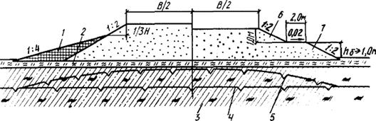
Рис.3.
Поперечные профили насыпи на участках с грунтами IV и V категорий
просадочности:
1 - торфяная присыпка на откосе. 2 -
мохорастительный покров; 3 - грунт основания; 4 - ВГВМ в естественных условиях;
5 - то же, после постройки насыпи; 6 - грунт насыпи; 7 - берма
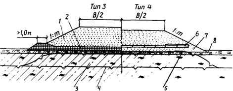
Рис.4. Поперечные профили насыпи с теплоизолирующими слоями на
участках с грунтами IV и V категорий просадочности:
1 - грунт насыпи; 2 - торф в уплотненном состояний;
3 - грунт основания; 4 - ВГВМ в естественных условиях; 5 - то же, после
постройки насыпи; 6 - плиты из пенополистирола (пенопласта); 7 - выравнивающий
слой из сыпучемерзлого песка или крупнообломочного грунта мелких фракций; 8 -
мохорастительный покров
Для сохранения грунта основания
в мерзлом состоянии плиты пенопласта следует размещать преимущественно на
глубине, составляющей 1/3 глубины сезонного оттаивания грунта насыпи, но не
выше критической отметки. Критическая глубина определяется исходя из того, что
пенопласт должен быть предохранен от раздавливания, а деформация сжатия не
должна превышать 10%.
При дефиците торфяных грунтов
для устройства теплоизолирующего слоя допускается проектировать насыпи по
первому принципу с использованием мерзлых грунтов, в том числе глинистых, в
нижней части (рис.5).
3.40. На участках с мелкими
буграми пучения высотой до 1,0 - 1,5 м и диаметром до 4 - 6 м, относящихся к
3-му типу местности, насыпи проектируют по первому принципу, предусматривая
нижнюю часть на 0,2 м выше бугра пучения из талого глинистого грунта (рис. 6, тип 6) или устройство
теплоизолирующего слоя из искусственного материала по выравнивающему песчаному
слою. В пределах откосов теплоизоляция должна быть уложена в два слоя (рис. 6, тип 7). Крутизну откосов назначают 1:2
при использовании крупнообломочных грунтов, 1:3 - песчаных. При отсутствии
искусственных материалов необходимо применять торфяные грунты.
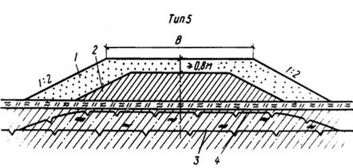
Рис.5. Поперечный профиль насыпи с мерзлым грунтом в нижней
части:
1 - песчаный грунт; 2 - мерзлый глинистый грунт;
3 - ВГВМ в естественных условиях: 4 - то же, после постройки насыпи
3.41. На плоскобугристых
торфяниках, представляющих собой комплекс бугров высотой до 1 м, разделенных
мочажинами шириной до 4 м и полосами стока, насыпи проектируют по первому
принципу в соответствии с поперечными профилями, приведенными на рис.7. Для выравнивания ВГВМ предусматривают
заполнение всех мочажин торфом в пределах ширины дорожной полосы (с запасом на
осадку торфа). При пересечении полос стока толщина торфяного слоя в нижней
части насыпи должна быть постоянной, равной не менее 0,3 м в уплотненном
состоянии (см. рис.7, тип 9). Крутизну откосов
назначают 1:2 при использовании песчаных грунтов, 1:1,5 - крупнообломочных.
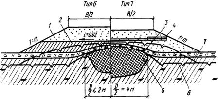
Рис.6.
Поперечные профили насыпи на местности с мелкими буграми пучения:
1 - грунт насыпи; 2- супесь, суглинок, глина; 3
- мохорастительный покров; 4 - плиты из пенополистирола (пенопласта); 5 -
льдоминеральное ядро бугра пучения; 6 - ВГВМ в естественных условиях; 7 - то
же, после постройки насыпи
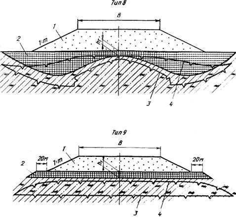
Рис.7. Поперечные профили насыпи на плоскобугристом торфянике:
тип 8 - при совпадении с торфяными буграми и
мочажинами; тип 9 - при совпадении с полосами стока; 1 - грунт насыпи; 2 -
насыпной торф; 3 - ВГВМ в естественных условиях; 4 - то же, после постройки
насыпи
3.42. На участках с крупными
(высотой более 1,5 м и диаметром более 6 м) буграми пучения насыпи необходимо
проектировать по первому принципу, предусматривая удаление бугров на глубину
залегания торфа в примыкающих к ним мочажинах, последующее заполнение
образовавшегося котлована торфом на всю глубину с запасом на его осадку (рис. 8). Крутизну откосов назначают 1:3 при
использовании песчаных грунтов, 1:2 - крупнообломочных.
Тип 10
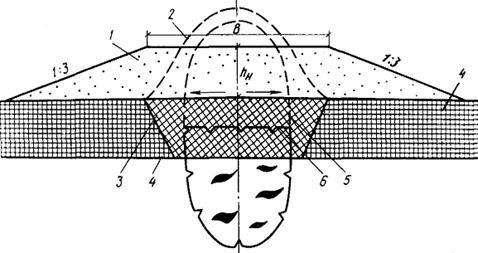
Рис.8. Поперечный профиль насыпи на крупном бугре пучения:
1 - грунт насыпи; 2 - естественный контур
удаляемого бугра пучения; 3 - торф, уложенный взамен удаленной части бугра; 4 -
сезоннопромерзающий торф мочажин; 5 - положение ВГВМ до постройки насыпи; 6 -
то же, после постройки насыпи
3.43. Высоту насыпей,
проектируемых с теплоизолирующим слоем из торфа в основании, рассчитывают по
методике, приведенной в обязательном приложении 4.
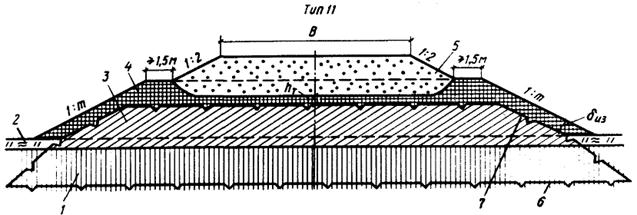
Рис.9. Поперечный профиль насыпи на участках с грунтами III-IV категорий просадочности:
1 - сезоннооттаивающий грунт основания; 2 -
мохорастительный покров; 3 - промороженный или твердомерзлый глинистый грунт; 4
- теплоизолирующий слой из торфа или мохорастительного покрова; 5 -
крупнообломочный или песчаный грунт; 6 - ВГМВ в естественных условиях; 7 - то
же, после постройки насыпи
3.44. Высоту насыпей Н (м),
проектируемых с теплоизолирующим слоем из искусственных материалов в основании,
определяют по формуле
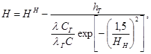
(1)
где Нн -
нормативная глубина сезонного оттаивания грунта насыпи, м; определяется по СНиП 2.02.04-88 или
обязательному приложению
4;
h -
толщина теплоизолирующего слоя, м;
l, lГ,
- коэффициенты теплопроводности соответственно теплоизоляционного материала и
грунта насыпи, Вт/(м×К);
определяются по СНиП 2.02.04-88;
С, СГ -
удельная теплоемкость соответственно теплоизоляционного материала и грунта
насыпи, Дж/(кг×К); определяются
согласно СНиП 2.02.04-88;
1,5 - коэффициент, м.
Ориентировочную высоту насыпей с
теплоизолирующим слоем из искусственных материалов можно принимать по табл. 12.
3.45. В 11 дорожно-климатической
подзоне при остром дефиците крупнообломочных грунтов, а также качественных
талых, сыпуче- и сухомерзлых песчаных грунтов высокие насыпи (более 2,5 м)
допускается проектировать по первому принципу с использованием в их нижней
части глинистых грунтов, в том числе твердомерзлых, в соответствии с поперечным
профилем, приведенным на рис. 9 (тип 11).
При этом необходимо предусматривать удаление мохорастительного покрова в
пределах подошвы насыпи, с тем чтобы обеспечить дополнительный приток холода от
нижележащих вечномерзлых грунтов III-IV категорий
просадочности.
Таблица 12
|
Высота насыпи, м
|
Толщина теплоизолирующего
слоя, см, в основании насыпи из пенополистирола (пенопласта) марки
|
|
ПС-1
|
ПС-4
|
ПС-5
|
ПС-18
|
ПС-254
|
ПСБ СГ
|
|
2,5
|
4,5
|
4,5
|
5
|
3
|
6
|
7
|
|
2,0
|
6,0
|
6,0
|
7
|
4
|
8
|
9
|
|
1,5
|
8,0
|
8,0
|
9
|
6
|
10
|
12
|
|
1,0
|
10,0
|
10,0
|
12
|
8
|
12
|
15
|
При дефиците торфяного грунта,
применяемого для теплоизоляции откосов, насыпи проектируют с бермами (рис. 10, тип 12). Влажность глинистых
грунтов должна соответствовать требованиям п.
3.20. Мохорастительный покров в пределах подошвы насыпи следует сохранять.
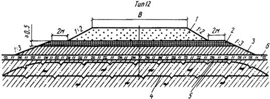
Рис.10. Поперечный профиль насыпи с бермами на участках с
грунтами III-IV категорий просадочности:
1 - крупнообломочный или песчаный грунт; 2 -
теплоизолирующий слой из торфа, 3 - мерзлый грунт, в том числе глинистый; 4 -
ВГВМ в естественных условиях; 5 - то же, после постройки насыпи; 6 -
мохорастительный покров
3.46. Толщину
уплотненного теплоизолирующего торфяного слоя, укладываемого на поверхность
промороженного глинистого грунта, определяют по формуле
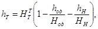
(2)
где 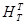
, Нод, Нн
- глубина сезонного оттаивания соответственно теплоизолирующего торфяного слоя,
дорожной одежды, грунта в верхней части насыпи, м; определяют по методике
обязательного приложения
4;
hод
- толщина дорожной одежды, м;
hн
- толщина верхней части (рабочего слоя) насыпи, м.
3.47. Ориентировочную толщину
верхней части насыпи из крупнообломочного или песчаного грунта при капитальном
типе дорожной одежды и различной толщи не теплоизолирующих слоев из торфа
определяют по рис. 11. Во всех случаях
толщина верхней части насыпи должна быть не менее 0,8 м по условию динамической
устойчивости дорожной одежды.
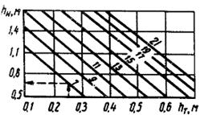
Рис.11. Зависимость высоты верхней части насыпи от толщины
теплоизолирующего слоя из уплотненного торфа и среднемесячной максимальной за
летний период температуры воздуха с 5%-ной обеспеченностью (цифры на кривых, °С)
3.48. Толщину нижней части
насыпи из промороженных глинистых грунтов определяют по формуле
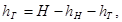
(3)
где Н - требуемая расчетная
высота насыпи, м.
Заложение откосов назначают в
зависимости от вида глинистого грунта и степени его влажности (табл. 13).
Таблица 13
|
Грунт
|
Крутизна откоса при коэффициенте переувлажнения W/Wо,
|
|
1,1
|
1,2
|
1,3
|
1,4
|
1,5
|
|
Суглинок легкий
|
1:2,0
|
1:2
|
1:2,5
|
1:3,0
|
-
|
|
Суглинок тяжелый
|
1:2,0
|
1:2
|
1:2,5
|
1:2,5
|
1:2,5
|
|
Глина
|
1:1,5
|
1:2
|
1:2,0
|
1:2,0
|
1:2,0
|
3.49. Толщину теплоизолирующего
торфяного слоя dиз
(м) укладываемого на поверхность откосов для предотвращения оттаивания промороженного
глинистого грунта в нижней части насыпи, рассчитывают по формуле
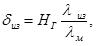
(4)
где НГ - глубина
сезонного оттаивания глинистого грунта насыпи, м; определяется по СНиП 2.02.04-88 или
обязательному приложению
4;
lиз, lм
- коэффициенты теплопроводности соответственно мерзлых торфяного и глинистого
грунтов насыпи, Вт/(м×К);
определяются согласно СНиП 2.02.04-88.
3.50. На косогорных участках
крутизной до 1:5, сложенных грунтами IV-V категорий просадочности, насыпи
проектируют из крупнообломочных и песчаных, в том числе мерзлых, грунтов с
бермой из теплоизоляционного материала (мохорастительный покров или торфяной
грунт) с низовой стороны (рис. 12).
Высота бермы должна составлять не менее половины высоты насыпи, рассчитываемой
по первому принципу (см. обязательное приложение 4). Крутизну откосов назначают 1:2.
3.51. При проектировании по
второму принципу земляное полотно конструируют в соответствии с поперечными
профилями, приведенными на рис. 3 - 10. Допускается проектировать земляное
полотно из местных глинистых грунтов из притрассовых или сосредоточенных
резервов (рис. 13). В таких случаях
верхнюю часть насыпи толщиной не менее 0,5 м предусматривают из
крупнообломочного или песчаного грунта. При этом запрещается удалять или
разрушать мохорастительный покров в основании насыпи. Крутизну откосов
назначают 1:2.
3.52. Положение, размер и
очертания резервов назначают согласно СНиП 2.05.02-85. Крутизну откосов резервов
необходимо принимать не более 1:1,5 с учетом рекультивации.
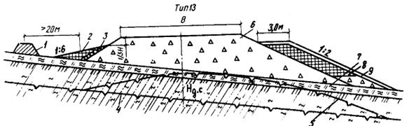
Рис.12.
Поперечный профиль насыпи на льдонасыщенном косогоре (крутизна менее 1:5):
1- мерзлотный валик; 2 - дренирующая присыпка
слоем толщиной 0,3 - 0,4 м; 3 - каменное мощение; 4 - ВГВМ в естественных
условиях; 5 - то же, после постройки насыпи; 6 - грунт насыпи, 7 -
мохорастительный покров, 8 - торф; 9 - глинистый грунт слоем толщиной 0,15 -
0,20 м
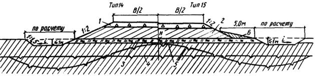
Рис.13. Поперечный профиль насыпи на участках с грунтами II-III категорий просадочности:
1 - щебень или гравий слоем толщиной по расчету
на прочность (но не менее 0,5м); 2 - глинистый грунт; 3 - мохорастительный
покров; 4 - ВГВМ в естественных условиях; 5 - то же, после постройки насыпи; 6
– бермы
3.53. На
торфяных грунтах в районах лесотундры. При прерывистом и островном характере
распространения вечной мерзлоты сливающегося типа (13
дорожно-климатическая подзона) насыпь допускается проектировать из
крупнообломочных и песчаных грунтов по второму принципу в соответствии с
поперечным профилем, приведенным на рис. 14.
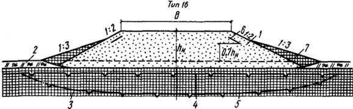
Рис.14. Поперечный профиль насыпи на торфяных грунтах:
1 - грунт насыпи; 2 - мохорастительный покров; 3
- вечномерзлый торф; 4 - ВГВМ в естественных условиях; 5 - то же, после
постройки насыпи; 6 - укрепление верхней части откоса торфом; 7 - теплоизоляция
откоса торфом
3.54. При проектировании по
второму принципу разрешается конструировать насыпь с прослойками из
геотекстильного материала.
Материал располагают в
основании, теле и верхней части насыпи в виде плоских прослоек, обойм и
полуобойм. Принцип работы и назначение прослойки, тип конструктивного решения
зависят от степени просадочности грунта основания и типа грунта насыпи, сезона
производства работ, а также от особенностей структуры и свойств геотекстильного
материала.
3.55.
Разделяющую прослойку следует предусматривать при проектировании насыпи на
участках с грунтами II-III
категорий просадочности.
При отсыпке насыпи в летний
период прослойку располагают в основании (рис.
15, тип 17), чтобы уменьшить неравномерность осадки оттаивающего грунта
основания и одновременно улучшить условия проезда построечного транспорта,
отсыпки и уплотнения нижнего слоя земляного полотна. При отсыпке насыпи в
зимнее время прослойку предусматривают на границе между нижней частью из
мерзлого комковатого (глинистого или торфяного) грунта и верхней частью из
сухо- или сыпучемерзлого песчаного грунта (рис.
15, тип 18), чтобы предотвратить проникание сыпучего материала верхней
части насыпи в поры комковатого грунта, уменьшить неравномерность осадки и
отвести воду за пределы насыпи при оттаивании грунта в летний период.
Полотна располагают сплошь по
всей ширине насыпи с поперечным уклоном 4% и выпуском краев на откосы на 15 -
20 см.
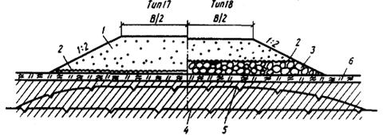
Рис. 15. Поперечные профили насыпей с разделяющими
геотекстильными прослойками:
1 - грунт насыпи; 2 - слой геотекстиля; 3 -
мерзлый комковатый (глинистый или торфяной) грунт в нижней части насыпи; 4 - ВГВМ
в естественных условиях, 5 - то же, после постройки насыпи; 6 -
мохорастительный покров
3.56.
Армирующую прослойку следует предусматривать при проектировании насыпи на
участках, сложенных грунтами III-V категорий
просадочности, чтобы повысить общую устойчивость насыпи и предотвратить расползание
ее боковых частей, включая откосы, в период оттаивания.
На участках с грунтами III категории просадочности прослойку проектируют в виде
вогнутой полуобоймы (рис. 16, тип 19) со
сплошной укладкой полотен в поперечном направлении в нижней части насыпи. Для
насыпи высотой до 2 м, в зависимости от угла трения j геотекстильного материала по подстилающему грунту или (при
отсутствии таких данных) от угла внутреннего трения подстилающего грунта
минимальную длину ветви полуобоймы с каждой стороны насыпи принимают по табл. 14.
Таблица 14
|
j, град
|
5
|
10
|
15
|
20
|
|
l, м
|
6,0
|
4,2
|
3,4
|
3,0
|
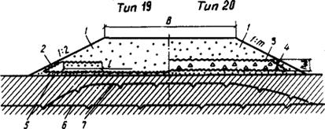
Рис. 16. Поперечные профили насыпей с армирующими
геотекстильными прослойками:
1 - грунт насыпи; 2 - полуобойма из геотекстиля;
3 - обойма из геотекстиля; 4 - грунт, в том числе твердомерзлый в нижней части
насыпи; 5 - выравнивающий песчаный слой толщиной 0,2 - 0,3 м; 6 - ВГВМ в
естественных условиях; 7 - то же, после постройки насыпи
На участках с грунтами IV-V
категорий просадочности предусматривают прослойку в виде обоймы (рис. 16, тип 20) со сплошной укладкой
полотен в поперечном направлении в нижней части насыпи.
Высота обоймы hоб
не должна превышать максимально допустимой величины, принимаемой в зависимости
от модуля деформации геотекстильного материала Е (табл. 15).
Таблица 15
|
Е, Н/см
|
<100
|
100 - 150
|
>150
|
|
hоб, см
|
50
|
80
|
120
|
3.57. При устройстве разделяющих и
армирующих прослоек из водопроницаемого в плоскости полотна материала
дренирующий эффект прослойки, ускоряющий консолидацию насыпи, необходимо
учитывать путем снижения требуемой степени консолидации основания на 10%.
3.58. В горно-таежной местности
на склонах крутизной от 1:5 до 1:10, сложенных переувлажненными глинистыми
грунтами с включениями гравия, щебня, дресвы в количестве до 30%,
предусматривают удаление переувлажненного грунта в низовую сторону. Мощность
слоя удаляемого грунта не должна превышать глубины сезонного оттаивания. Высоту
насыпи (рис. 17, тип 21) назначают
расчетом (см. обязательное приложение 4), но не менее 1 м. Нижнюю часть насыпи
необходимо отсыпать на высоту 0,5 - 0,6 м из крупнообломочного грунта с
размером ребер отдельных камней до 30 см, а верхнюю - из гравийно-песчаного
материала. Крутизну откосов принимают 1:1,5.
3.59. На конусах выносов
скальных обломочных пород и склонах, сложенных курумами, при крутизне от 1:5 до
1:10 насыпь проектируют из крупнообломочного грунта (рис. 18). Запрещается нарезка уступов в основании насыпи,
чтобы не нарушить равновесия курумов. Высоту насыпи назначают расчетом, но не
менее 1 м. Крутизну откосов принимают равной 1:1,5.
Тип 21
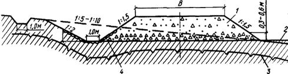
Рис.17.
Поперечный профиль насыпи на неустойчивом склоне:
1 - грунт насыпи; 2 - кавальер удаленного
грунта; 3 - ВТВМ после постройки насыпи; 4 - укрепление каменной наброской
нижней части нагорного откоса и площадки между его подошвой и откосом насыпи
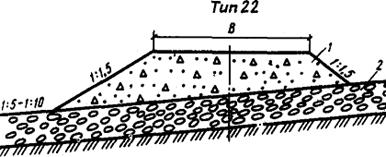
Рис.18. Поперечный профиль насыпи, на курумах:
1 - грунт насыпи; 2 - курумы
3.60. На участках 2-го и 3-го
типов местности, сложенных переувлажненными сезоннопромерзающими минеральными
грунтами (преимущественно 13 дорожно-климатическая подзона), высокие
насыпи (на подходах к водотокам) при дефиците песчаных грунтов можно
проектировать в соответствии с поперечным профилем, приведенным на рис. 19. Предусматривают сохранение
мохорастительного покрова в основании насыпи и устройство дополнительного
теплоизолирующего слоя из торфа на всю ширину подошвы основания. Высоту насыпи
рассчитывают согласно пп. 3.46 - 3.49.
При отсутствии торфа или большой дальности его транспортирования целесообразно
использовать искусственные теплоизоляционные материалы.
3.61. При прохождении трассой
обширных по площади сезоннопромерзающих торфяных болот и мочажин между
отдельными крупными буграми пучения (гидролакколитами) земляное полотно
допускается проектировать с промораживанием грунтов в основании (рис. 20). При этом на болотах 1 типа
проектируют насыпь с поперечным профилем типа 24, а на болотах II и III типов - с поперечными профилями типов 25 и 26.
Для торфяной части насыпи
принимают серповидный профиль, предусматривая толщину намораживаемой плиты по
оси насыпи на 0,3 м больше, чем по бровкам.
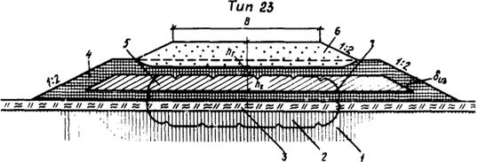
Рис.
19. Поперечный профиль насыпи на сезоннопромерзающих минеральных грунтах:
1 - талый минеральный грунт основания; 2 -
промороженный слой основания;
3 - естественный мохорастительный слой; 4 -
теплоизолирующий торфяной слой в основании и по периметру нижней части насыпи;
5 - промороженный или твердомерзлый глинистый грунт нижней части насыпи; 6 -
грунт верхней части насыпи; 7 - положение образовавшейся мерзлоты после постройки насыпи
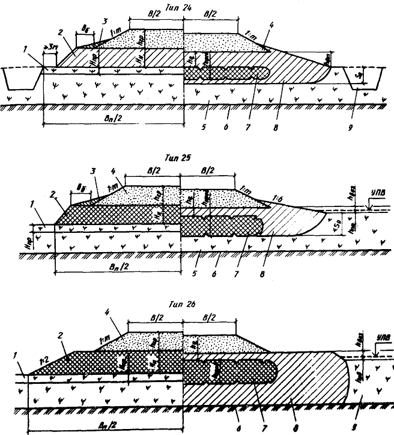
Рис. 20. Поперечные профили насыпей на промороженных
основаниях (левая часть - состояние конструкции в период строительства, правая
- в процессе эксплуатации на конец теплых периодов):
1 - промороженный слой торфяной залежи; 2 -
намороженная торфяная плита; 3 - боковые призмы из торфа; 4 - насыпь из
минерального грунта; 5 - талый слой торфяной залежи; 6 - минеральное дно
болота; 7 - мерзлые слои торфяной плиты; 8 - талые слои торфяной плиты; 9 -
боковой резерв
Крутизну откосов торфяной насыпи
назначают 1:2. Насыпь рассчитывают согласно обязательному приложению 6.
3.62. При пересечении глубоких
логов и полос стока, а также на подходах к мостам через крупные водотоки (при
соответствующем технико-экономическом обосновании, учитывающем требования
охраны окружающей среды) допускается на грунтах I-IV
категорий просадочности проектировать насыпь, возводимую способом
гидромеханизации без обваловывания (рис. 21).
Крутизну откосов в нижней части принимают 1:10 - 1:15, а в верхней - 1:2 для
песчаного грунта при высоте волны до 0,4 м.
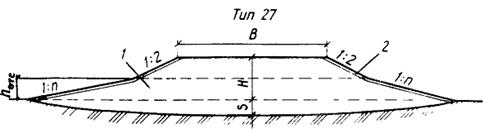
Рис. 21. Поперечный профиль насыпи, возводимой способом
гидромеханизации:
1 - гидронамывной песок; 2 - укрепление откоса
3.63. На затопляемых участках,
на подходах к мостам и другим искусственным сооружениям земляное полотно
проектируют в насыпи из крупнообломочных и песчаных грунтов. При этом бровку
земляного полотна предусматривают выше уровня расчетного горизонта воды не
менее чем на 0,5 м плюс высота набега волны.
3.64. На участках местности с
благоприятными грунтово-гидрогеологическими условиями (скальные, щебенистые,
дресвяные, гравийно-песчаные грунты и т.п.) при отсутствии линз и прослоек льда
допускается проектировать выемки по СНиП 2.05.02-85.
3.65. На участках местности 2-го
типа допускается (при соответствующем технико-экономическом обосновании)
проектировать выемки с заменой переувлажненных пылеватых глинистых грунтов
песчаными или другими качественными материалами, предусматривая теплоизоляцию
откосов или их укрепление геотекстилем (рис.
22). Мелкие выемки следует раскрывать или разделывать под насыпь (см. рис. 22, тип 29).
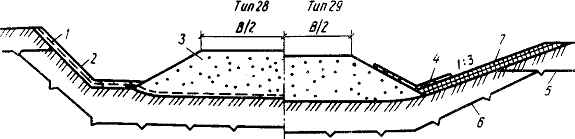
Рис. 22. Поперечные профили выемки на местности со сложными
гидрогеологическими условиями:
1 - геотекстиль; 2 - торфопесчаная смесь; 3 -
грунт замены (насыпь); 4 - бетонные плиты; 5 - ВГВМ в естественных условиях; 6
- то же, после постройки выемки; 7 - теплоизолирующий слой из торфа (по расчету)
Толщину слоя заменяемого в
выемках грунта принимают исходя из условия устойчивости и обеспечения требуемой
прочности дорожной конструкции, но не менее 0,5 м. Крутизну откосов назначают
расчетом, но не менее 1:3.
3.66. При проектировании выемок
глубиной более 2м в мелких и пылеватых песках, переувлажненных пылеватых
суглинках, в легковыветривающихся сильнотрещиноватых скальных породах, а также
в вечномерзлых грунтах, переходящих при оттаивании в мягкопластичное состояние,
предусматривают устройство закюветных полок шириной 0,5 - 2 м (в зависимости от
вида грунта, крутизны откосов и глубины выемки) или при соответствующем
обосновании более пологие откосы. В скальных слабовыветривающихся породах при
отсутствии трещиноватости взамен закюветных полок устраивают кюветы.
3.67. При
проектировании насыпей следует различать строительную осадку, протекающую в
теле насыпи и в грунтах основания.
Если отсыпку насыпи
предусматривают в зимний период на полную высоту из сухо- и твердомерзлых
грунтов, то строительную осадку Sc (см) тела
насыпи при оттаивании в теплый период года определяют по формуле
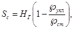
(5)
где Ãукл, Ãст
- плотность скелета мерзлого грунта в насыпи, г/см3, соответственно
после укладки с уплотнением и после оттаивания и стабилизации, определяется
согласно ГОСТ
5180-84.
При зимней отсыпке, высота
насыпи должна быть больше рабочей отметки на величину Sс.
Строительную осадку грунтов
основания определяют исходя из типа местности, вида грунтов, наличия или
отсутствия на поверхности земли мохорастительного покрова и его мощности,
прогнозируемой глубины оттаивания при известной высоте насыпи согласно
обязательному приложению
7.
3.68. Для определения
дополнительных объемов земляных работ, при летней отсыпке (при составлении
проектной документации) ориентировочно строительную осадку грунтов основания
насыпи высотой до 2м при их оттаивании на глубину до 2,5м принимают по табл. 16.
Объем дополнительных земляных
работ (вследствие строительной осадки грунтов основания) принимают равным
произведению усредненной величины осадки на ширину насыпи по низу и на длину
участка.
3.69. Откосы насыпи и выемки
следует укреплять. Тип укрепления назначают в зависимости от физико-механических
свойств грунтов, слагающих откосы, наличия местных материалов, высоты насыпи,
глубины выемки, гидрологического режима подтопления в соответствии с
требованиями СНиП
2.05.02-85.
Таблица 16
|
Тип местности
|
Относительная влажность грунта основания, доли WТ
|
Коэффициент консистенции
|
Грунт основания
|
Строительная осадка грунтов основания, см
|
|
Сухие места
|
<0,77
|
<0,5
|
Глина пылеватая
|
10
|
|
Суглинок пылеватый
|
6
|
|
Супесь легкая
|
5
|
|
Песок пылеватый
|
4
|
|
Сырые места
|
0,77 - 1,0
|
0,5 - 1,0
|
Глина пылеватая
|
20
|
|
Суглинок пылеватый
|
15
|
|
Супесь пылеватая
|
10
|
|
Песок пылеватый
|
6
|
|
Мокрые места
|
>1,0
|
>1,0
|
Глина пылеватая
|
30
|
|
Суглинок пылеватый
|
20
|
|
Супесь тяжелая пылеватая
|
15
|
|
Песок пылеватый
|
10
|
Примечания: 1. При
зимней отсыпке насыпи на проектную высоту данные таблицы могут быть снижены на
20%.
2.
Величину осадки мохорастительного покрова следует принимать равной 50%
первоначальной толщины, а мохоторфяного слоя - 40% расчетной глубины его
оттаивания.
3.70. Для защиты от водной и
ветровой эрозии откосы насыпи (выемки), сложенные песчаными пылеватыми и
глинистыми грунтами, следует укреплять слоем торфопесчаной смеси (40% торфа,
60% песка) толщиной 10 - 20 см. В смесь вводят семена многолетних трав.
При отсутствии торфяного грунта
можно предусматривать (на основе технико-экономических расчетов) укладку
сплошного слоя геотекстиля с обязательным закреплением полотнищ на обочинах и
подошве насыпи (бровке выемки) и последующее устройство защитного (от солнечной
радиации) слоя толщиной 10 - 15 см из песка или гравийно-песчаной смеси (рис. 23, тип 30).
При необходимости можно
укреплять сплошными геотекстильными слоями, выполняющими противоэрозионную или
армирующую функцию, и обочины и откосы (рис.
23, тип 31). Противоэрозионную роль выполняют также боковые поверхности
полуобойм и обойм из геотекстиля (см. рис. 16).
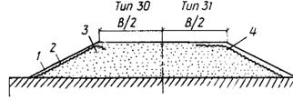
Рис. 23. Поперечный профиль насыпи с укреплением откосов и
обочин геотекстилем:
1 - защитный песчаный слой толщиной 10 - 15см; 2
- геотекстиль на откосе; 3 - грунт насыпи; 4 - геотекстиль на обочине
3.71. Обочины земляного полотна
следует укреплять гравийно-песчаным или щебеночным материалом, шламом, шлаком и
другими отходами промышленного производства, геотекстилем (см. рис. 23, тип 31), а также бетонными плитами на основе
технико-экономических расчетов.
3.72. В проектах автомобильных
дорог согласно требованиям п. 1.5 настоящих
норм необходимо предусматривать комплекс мероприятий по охране окружающей
среды: рекультивацию карьеров и резервов, восстановление нарушенной техногенным
воздействием прилегающей к дорогам полосы отвода, восстановление нарушенных
территорий в местах дислокации дорожно-строительных подразделений - с
определением требуемых объемов производства работ и их сметной стоимости.
3.73. В зависимости от
рельефных, гидрологических, гидрогеологических и мерзлотно-грунтовых условий
поверхностные и грунтовые надмерзлотные воды отводят от дорожного полотна с
помощью следующих сооружений:
боковых водоотводных канав,
лотков или лотков-полутруб, притрассовых резервов;
нагорных мерзлотных валиков,
приоткосных берм и нагорных канав;
поперечных водоотводных канав.
В 13
дорожно-климатической подзоне на участках с несливающейся вечной мерзлотой
допускается (при соответствующем технико-экономическом обосновании)
проектировать для отвода вод дренажные конструкции.
3.74. Размеры водоотводных сооружений
назначают по гидравлическому расчету, учитывая приток вод и глубину их
залегания, площадь осушаемой территории и ее инженерно-гидрологические условия.
Форму поперечного сечения канав принимают такой, чтобы обеспечить механизацию
работ и устойчивость откосов.
3.75. Водоотводные канавы
проектируют на устойчивых основаниях, сложенных непросадочными и
малопросадочными грунтами. При этом дно и откосы канав (кюветов), устройство
которых предусматривается в легкоразмываемых грунтах, следует укреплять одиночным
или двойным слоем луговой или тундровой дернины, камнем, гравийно-песчаной
смесью, бетонными плитами, уложенными по мху, или геотекстильным материалом (рис. 24). Если скорость течения воды
превышает допустимую для соответствующих типов укрепления, необходимо
предусматривать перепады, быстротоки или водобойные колодцы.
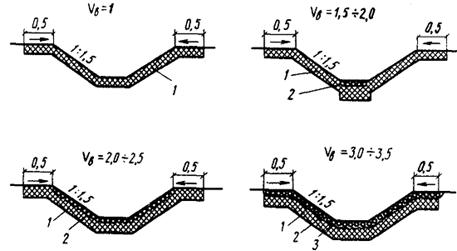
Рис. 24. Поперечные сечения водоотводных канав:
1 - дерн, мох, торф; 2 - крупнообломочный грунт,
бетонные плиты; 3 - геотекстиль; Vв - скорость течения воды
3.76. В равнинной и
слабопересеченной местности, сложенной грунтами 1-II
категорий просадочности, канавы (притрассовые резервы) проектируют непосредственно
V подошвы насыпи. В такой же местности, сложенной грунтами III
категории просадочности, устройство канав предусматривают на расстоянии не
менее 5 м от подошвы насыпи.
3.77. Запрещается проектировать
водоотводные и нагорные канавы в грунтах IV-V категорий просадочноcти. При наличии таких грунтов в равнинной и
слабопересеченной местности предусматривают максимально естественный сток
поверхностных вод либо приоткосные бермы, а на косогорных участках, кроме берм,
и нагорные валики (см. рис. 12). Высоту
нагорных валиков назначают с обязательным превышением максимального расчетного
уровня воды на 0,25 м.
В случае устройства валиков
следует предусматривать обязательное сохранение мохорастительного покрова в
основании. Откос валика и полосу вдоль его подошвы на ширину 1 м с нагорной
стороны укрепляют крупнообломочным грунтом по слою мха или торфа. При его
отсутствии допускается укрепление геотекстилем.
3.78. На косогорных участках с
большой водосборной площадью или сильными снежными заносами проектируют
водоотвод в виде двух рядов нагорных канав, расположенных в 100 м друг от
друга, или нагорной канавы в сочетании с мерзлотным валиком, который
располагают с низовой стороны нагорной канавы в 50м от подошвы насыпи. Уклон
дна канав принимают не менее 5%.
3.79. Для поперечного
(относительно оси насыпи) пропуска поверхностных вод следует проектировать
водопропускные трубы в соответствии с обязательным приложением 8.
3.80. На участках природных
наледей, параметры которых необходимо оценивать и рассчитывать согласно
рекомендуемому приложению
9, земляное полотно следует проектировать:
в насыпях с возвышением бровки
над расчетной отметкой поверхности наледи не менее чем на 0,5 м;
в насыпях с бермой, устраиваемой
с нагорной стороны;
в комплексе с капитальными
противоналедными сооружениями и устройствами.
3.81. На участках прогнозируемых
наледей в районах глубокого сезонного промерзания и островного распространения
вечномерзлых грунтов (13 дорожно-климатическая подзона) насыпь
проектируют с таким расчетом, чтобы глубина промерзания под ней не превышала
глубины промерзания грунтов в естественных условиях.
3.82. Насыпь на наледных
участках предпочтительнее назначать из крупнообломочных грунтов. На участках,
где насыпь проектируют с применением глинистых грунтов, предусматривают берму с
нагорной стороны или пологий откос и его укрепление.
3.83. Противоналедные
сооружения, как правило, различают по сроку службы (временные и постоянные) и
по принципу их воздействия на наледный процесс (активизирующие, задерживающие
наледный процесс и обеспечивающие безналедный пропуск водного потока).
3.84. Временные сооружения
(мерзлотные пояса, утепление русел водотоков, тепловая мелиорация местности,
снежные и ледяные валы и т.д.), как правило, следует предусматривать на период
строительства, а постоянные (вал из грунта, заборы, утепленные и
концентрирующие водный поток лотки и т.д.) - на весь период эксплуатации
автомобильных дорог.
3.85. Сооружения, активизирующие
наледный процесс (мерзлотные и наледные пояса, водонепроницаемый экран), как правило,
используют на участках формирования грунтовых наледей для вывода подземных вод
на поверхность, обеспечив их замерзание на безопасном расстоянии от дорожного
сооружения.
3.86. Сооружения, задерживающие
наледный процесс, проектируют на участках выхода надмерзлотных или грунтовых
вод объемом до 10 - 30 тыс. м3 (мерзлотный пояс или экран в
комплексе с расположенным выше земляным валом), а также на постоянных
водотоках, питающихся подземными водами, расход которых не превышает 3 л/с
(валы из грунта с герметичными затворами; герметичные деревянные,
железобетонные заборы или ограждения из нескольких рядов металлических сеток,
решеток).
3.87. Конструкции,
обеспечивающие безналедный пропуск (спрямленные и углубленные русла; утепленные
лотки сосредоточенного пропуска воды; горизонтальные дренажи, имеющие трубчатые
водоотводные элементы или образующиеся при использовании буровзрывного способа;
вертикальный систематический или периодический дренаж из скважин), следует
предусматривать, как правило, на реках и в местах выхода подземных вод
(ключей), где можно сконцентрировать водный поток и пропустить его за пределы
дорожного сооружения, с устройством дополнительного подогрева или без него.
3.88. При проектировании валов
из грунта предусматривают удаление растительного и торфяного покрова и
укрепление откоса нижней части вала. Высота укрепления откоса должна быть выше
расчетного горизонта воды не менее чем на 0,2 м. Для пропуска паводковых вод в
валу проектируют проем. В проеме, а также в 100 - 150 м выше вала по руслу
водотока следует предусматривать охлаждающие и перемораживающие отмостки из
плоского камня или бетонных плит. В качестве затвора предпочтительнее применять
двух-, трехрядные решетки из металлических прутьев, что исключает необходимость
периодически открывать и закрывать затворы.
3.89. При вскрытии выемкой или
полувыемкой водоносных пластов преимущественно проектируют горизонтальные
дренажи с заглублением их водоотводных частей ниже прогнозируемой глубины
сезонного промерзания грунтов для обеспечения устойчивости земляного полотна и
исключения возможности наледеобразования.
В отдельных случаях, в
протяженных глубоких выемках, можно применять вертикальный дренаж из скважин
как во временном, так и в постоянном варианте.
При вскрытии выемкой
надмерзлотных или грунтовых вод перехват и отвод их осуществляют глубокими
нагорными канавами, в том числе в сочетании с мерзлотным поясом.
3.90. На участках, где наледи
формируются на водотоках в естественной природной обстановке, проектируют:
преимущественно высокие мосты с
увеличенной длиной пролета;
мосты со спрямленным углубленным
руслом или в сочетании с утепленными лотками.
Допускается применять
железобетонные трубы диаметром не менее 1,5 м или металлические гофрированные
трубы диаметром не менее 2 м с утепленными под водящими и отводящими лотками и
теплоизоляцией отверстий труб щитами или матами.
3.91. Высокие мосты с
увеличенной длиной пролетов проектируют в местах развития природных наледей
(объемом свыше 10 тыс.м3) с нечетко выраженными наледными
источниками, когда устранение причин возникновения наледи или ее задержание на
некотором расстоянии от сооружения не представляется возможным или экономически
нецелесообразно.
3.92. Высоту подмостового
габарита Нм (м) на реках по условиям пропуска наледи и весеннего
паводка определяют по наибольшему из значений:
Нм=DНр+Dhср;
Нм=DНср+Dhр;
(6)
где DНр, DНср - соответственно расчетная максимальная и
средняя мощность речной наледи, м;
Dhр, Dhср - превышение, необходимое для пропуска по
наледи соответственно расчетного или среднего расхода талых вод, м.
Высота подмостового габарита на
переходах через ручьи и лога с наледями назначается по наибольшему из расчетных
значений мощности наледи и высоты горизонта паводковых вод.
3.93. Безналедный пропуск водотоков
обеспечивают с применением утепленных лотков при четко выраженном,
сконцентрированном в одном месте наледном источнике с температурой воды выше
3°С и его незначительном удалении от сооружения. Толщину утепления, длину,
ширину и высоту лотков устанавливают теплотехническим и гидравлическим
расчетами согласно "Руководству по проектированию искусственных сооружений
автомобильных дорог на водотоках с наледями" (М.: Транспорт, 1978). Лоток
проектируют совместно с мостом или трубой, с заглублением в грунт или на его
поверхности.
3.54. Наледи, образующиеся выше
искусственного сооружения, целесообразно задерживать на водотоках с малым
расходом воды и при наличии пологих (уклон не более 2%) и широких логов,
позволяющих накапливать лед с помощью одного-двух заборов или грунтовых валов с
заборами в проеме.
3.95. На участках прогнозируемых
наледей проектируют следующие типы искусственных сооружений:
свайно-эстакадные мосты,
полностью перекрывающие наледный лог;
мосты с любыми конструкциями
фундаментов и опор, но с повышенными подмостовыми габаритами;
железобетонные трубы диаметром
не менее 1,5 м, а также металлические гофрированные трубы диаметром не менее
2,0 м с теплоизоляцией или многоочковые в разных уровнях с диаметром очков не
менее 1,5 м совместно с утепленными подводящими и отводящими лотками.
Допускается свободный пропуск
наледей под мостами и эстакадами.
3.96. Трубы на участках
прогнозируемых наледей проектируют с облегченными или свайными фундаментами,
предусматривая теплоизолирующие подушки, с тем, чтобы глубина промерзания
грунта под фундаментом не превышала промерзания грунтов в естественных
условиях.
3.97. Подошва фундамента
(теплоизолирующей подушки) трубы должна располагаться выше уровня грунтовых
вод. Если это условие выполнить невозможно, то проектируют мосты с увеличенными
отверстиями или при соответствующем технико-экономическом обосновании трубы и
мосты с дренажно-каптажными устройствами.
3.98. Разрешается применять
трубы металлические гофрированные диаметром 2,0 м или многоочковые в разных
уровнях на малых постоянных водотоках с расчетным расходом воды до 30 - 40 м3/с.
3.99. Свайно-эстакадные мосты
проектируют на постоянно действующих малых и средних водотоках, предусматривая
меры, компенсирующие нарушения строительством мерзлотно-гидрологических условий
(устройство теплоизолирующих подушек, накопление снега, углубление русел и
т.п.).
3.100. На малых водотоках и
ручьях при глубине залегания слоя водоупорных пород до 3 - 5 м и низкой
температуре воды (ниже 3°С) предусматривают устройства, активизирующие наледный
процесс и задерживающие наледь в удалении от сооружения (наледные пояса,
активные противоналедные валы, вентиляционное морозильные и сезоннодействующие
охлаждающие установки).
3.101. Дорожные
одежды проектируют со следующими типами покрытий:
цементобетонными монолитными;
железобетонными или
армобетонными сборными;
асфальтобетонными;
из щебня, обработанного битумом
или битумной эмульсией способами смешения в установке, пропитки с устройством
поверхностной обработки;
из гравийно- и
щебеночно-песчаных смесей, обработанных органическими или неорганическими
вяжущими способами смешения в установке или на дороге, с устройством
поверхностной обработки;
щебеночными (гравийными),
обработанными в верхней части пескоцементной смесью, белитовым шламом,
высокоактивным либо активным гранулированным шлаком, с поверхностной
обработкой;
из гравийно- и
щебеночно-песчаных смесей, малопрочных каменных материалов, отходов
камнедробления и горнорудных предприятий, металлургических шлаков, белитового
шлама и подобных материалов.
3.102. Сборные покрытия из
предварительно напряженных железобетонных плит типа ПАГ-14 и ПДН целесообразно
проектировать в том случае, если технико-экономическими расчетами обосновано
двухстадийное строительство дорожной одежды.
На первой стадии предусматривают
устройство дорожной одежды переходного типа с щебеночным, гравийным покрытием
либо из материалов, способных омоноличиваться и позволяющих пропускать движение
сразу же после их уплотнения (белитовый шлам и укрепленные им каменные
материалы, а также высокоактивные и активные доменные шлаки).
3.103. Дорожная одежда
переходного типа с покрытием из белитового шлама должна иметь защитный слой
толщиной 3 - 5 см из отходов камнедробления, дресвы и подобных материалов.
На второй стадии дорожная одежда
переходного типа (с учетом ее эксплуатационного состояния) может быть
использована в качестве основания под сборные железо- или асфальтобетонные
покрытия.
3.104. Сборные покрытия из
ненапряженных железобетонных плит проектируют на участках с небольшой
интенсивностью автомобильного движения.
3.105. Во всех случаях виды
оснований дорожных одежд должны соответствовать требованиям п. 3.101.
3.106. При необходимости
предусматривают устройство дополнительных слоев оснований из песка, гравия,
геотекстиля, отходов промышленности и других материалов. В зависимости от
конкретных условий дополнительный слой по функции может быть тепло- или
гидроизолирующим, морозозащитным, дренирующим, капилляропрерывающим или
выравнивающим.
3.107. Для обеспечения контакта
плиты с основанием между ними предусматривают технологическую выравнивающую
прослойку толщиной до 3 см из цементо-песчаной смеси с маркой по прочности при
сжатии не ниже М40 или из белитового шлама.
На основаниях из неукрепленных
материалов выравнивающий слой следует выполнять из песка.
3.108. Для обеспечения
динамической устойчивости неукрепленного песчаного основания (предотвращение
выплесков песка из-под стыков плит и кромок сборного покрытия, отвод избытка
воды и осушение песчаного слоя) предусматривают сплошную укладку на его
поверхность полотнищ геотекстиля на всю ширину проезжей части с выводом их под
обочины на 0,5 м (рис. 25, а). Чтобы
удалить избыток воды из основания, напротив поперечных швов сборного покрытия
укладывают дополнительные полосы геотекстиля шириной не менее 0,7м с выпуском
на откосы на 15 - 20 см.
При необходимости усиления
обочин или их защиты от размыва предусматривают сплошную укладку геотекстиля на
всю ширину земляного полотна с выпуском на откосы на 15 - 20 см (рис. 25, б).
3.109. При строительстве покрытия
в две стадии устройство геотекстильной прослойки предусматривают только на
второй стадии после досыпки, уплотнения и профилирования неукрепленного
песчаного основания.
В случае устройства сборного
покрытия на основании из неукрепленной гравийно-песчаной смеси и использования
этого основания для временного проезда в порядке стадийного строительства
геотекстильную прослойку целесообразно укладывать под гравийно-песчаный слой на
всю ширину земляного полотна с выпуском на откос.
3.110. Для обеспечения продольной
устойчивости сборного покрытия расстояние между швами расширения в зависимости
от температуры воздуха в момент укладки плит назначают по данным табл. 17.
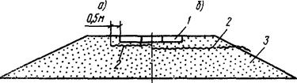
Рис.
25. Поперечные профили насыпи со слоями из геотекстиля под сборным покрытием с
выводом под обочину(а) и на откос (б):
1 - сборное покрытие из цементобетонных плит; 2
- слой геотекстиля; 3 - грунт насыпи
Таблица 17
|
Ширина шва, мм
|
Расстояние между швами расширения, м, при
температуре воздуха, °С, в период укладки плит
|
|
<10
|
10 - 20
|
>20
|
|
10
|
42
|
60
|
102
|
|
20
|
78
|
102
|
180
|
3.111. Для того чтобы обеспечить вертикальную
устойчивость покрытия в местах расположения швов расширения при устройстве
основания из неукрепленных материалов, предусматривают поперечные полосы
(подшовные подушки) из укрепленных материалов, белитового шлама или сборного
железобетона. При этом ширину подшовной подушки принимают 1 м, а толщину -
равной толщине основания.
При использовании плит со
стыковым соединением камерного типа, обеспечивающим горизонтальное перемещение
плит в поперечных швах, подшовные подушки не предусматривают.
3.112. Дорожные одежды
нежесткого и жесткого типов следует конструировать и рассчитывать,
руководствуясь положениями "Инструкции по проектированию дорожных одежд
нежесткого типа" ВСН 46-83
(М.: Транспорт, 1985) и "Инструкции по проектированию жестких дорожных
одежд" (М., 1983).
При расчете дорожных одежд
нежесткого типа, устраиваемых на земляном полотне типов 8 - 11 (см. рис. 7 - 9),
16 (см. рис. 14), 23 - 26 (см. рис.19 и 20),
вместо расчетного модуля упругости грунта Егр следует принимать
эквивалентный модуль упругости на поверхности земляного полотна Егрэкв:
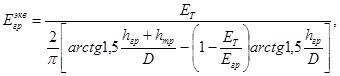
(7)
где ЕТ - модуль упругости
торфа в оттаявшем слое торфяной части насыпи, МПа;
hгр
- толщина насыпного слоя из минерального грунта, см;
hтр
- глубина оттаивания торфяной части насыпи, см;
D -
диаметр круга, равновеликого площади отпечатка колеса расчетного автомобиля,
см;
Егр - модуль
упругости талого минерального грунта в насыпи при расчетной влажности, МПа.
3.113. Толщину асфальтобетонного
покрытия на основании из материалов, обработанных неорганическими вяжущими, а
также на основании из железобетонных плит следует принимать не менее 10 см. При
этом в местах расположения швов необходимо предусматривать укладку
геотекстильного материала или сетки из стекловолокна шириной 0,75 - 1 м.
3.114. При расчете дорожных
одежд со слоями из белитового шлама и каменных материалов, обработанных
белитовым шламом, расчетные значения модуля упругости и предела прочности на
растяжение при изгибе белитового шлама принимают согласно табл. 1, а каменных материалов,
обработанных шламом, - согласно табл.
2 рекомендуемого приложения 10.
При проектировании щебеночных
(гравийных) оснований и покрытий, обработанных белитовым шламом не на полную
глубину, расчетные значения модуля упругости принимают по табл. 3 рекомендуемого приложения 10
в зависимости от глубины обрабатываемого слоя.
3.115. Материалы для устройства
покрытий, оснований и дополнительных слоев оснований должны удовлетворять
требованиям соответствующих ГОСТов, СНиПов и технических условий, а также
настоящих норм.
3.116. При приготовлении
цементобетонной смеси для устройства монолитных покрытий и оснований применяют
крупные, средние и мелкие пески с содержанием зерен мельче 0,14 мм не более
10%. Допускается при соответствующем технико-экономическом обосновании
использовать пески (в том числе и очень мелкие) с содержанием зерен размером
менее 0,14 мм не более 20% массы песка. При этом в бетонную смесь необходимо
вводить комплексные (пластифицирующие и воздухововлекающие или газообразующие)
добавки поверхностно-активных веществ (ПАВ).
Таблица 18
|
Дорожно-климатическая подзона (по рис. 2)
|
Условия работы покрытия
|
Марка битума
|
Тип смеси для дороги категории
|
|
|
Расчетная температура покрытия, °С
|
Количество циклов замораживания - оттаивания при
температуре замораживания минус 10 °С
|
|
|
I-II
|
III
|
IV
|
|
|
летняя
|
зимняя
|
|
|
11
|
35
|
-40
|
<60
|
БНД 60/90
|
А
|
А
|
-
|
|
|
|
|
БНД 90/130
|
А, Б
|
А, Б
|
Б
|
|
|
|
|
БНД 130/200
|
А, Б, В
|
А, Б, В
|
Б, В, Г
|
|
|
|
|
БНД 200/300
|
А, Б
|
А, Б, В, Г
|
Б, В, Г
|
|
|
|
|
СГ 130/200
|
-
|
-
|
Б, В, Г, Д
|
|
|
12:
|
40
|
-45
|
60 - 100
|
БНД 130/200
|
А
|
А
|
-
|
|
|
северная и центральная части
|
|
|
|
БНД 200/300
|
А
|
А, Б
|
Б
|
|
|
|
|
СГ 130/200
|
-
|
-
|
Б, Г
|
|
|
южная часть
|
45
|
-40
|
>100
|
БНД 60/90
|
А
|
А
|
-
|
|
|
|
|
БНД 90/130
|
А, Б
|
А, Б
|
Б
|
|
|
|
|
БНД 130/200
|
А, Б
|
А, Б
|
Б, В
|
|
|
|
|
БНД 200/300
|
А
|
А, Б
|
Б, В
|
|
|
|
|
СГ 130/200
|
-
|
-
|
Б, В, Г
|
|
|
13:
|
45
|
-40
|
>100
|
БНД 60/90
|
А
|
А
|
-
|
|
|
северная и центральная части
|
|
|
|
БНД 90/130
|
А, Б
|
А, Б
|
Б
|
|
|
|
|
БНД 130/200
|
А, Б
|
А, Б
|
Б, В
|
|
|
|
|
БНД 200/300
|
А
|
А, Б
|
Б, В
|
|
|
|
|
СГ 130/200
|
-
|
-
|
Б, В, Г, Д
|
|
|
южная часть
|
45
|
-35
|
>100
|
БНД 60/90
|
А
|
А
|
-
|
|
|
|
|
БНД 90/130
|
А, Б
|
А, Б
|
Б
|
|
|
|
|
БНД 130/200
|
А, Б
|
А, Б
|
Б, В, Г
|
|
|
|
|
БНД 200/300
|
А, Б
|
А, Б, Г
|
Б, В, Г
|
|
|
|
|
СГ 130/200
|
-
|
-
|
Б, В, Г
|
|
Примечание. При устройстве асфальтобетонных покрытий в южной
части 13 дорожно-климатической подзоны допускается применять битумы
марок БН 60/90, БН 90/130, БН 130/200, БН 200/300.
3.117. Тип асфальтобетонной
смеси и марку битума для устройства покрытий назначают в соответствии с табл. 18 в зависимости от условий работы
асфальтобетонного покрытия в районе строительства.
На автомобильных дорогах I-II категорий предусматривается
применять асфальтобетонные смеси 1 марки, III категории
- II марки, IV категории - III марки.
3.118. Для устройства
однослойных и верхних слоев двухслойных асфальтобетонных покрытий в 11
дорожно-климатической подзоне и восточной части l3
дорожно-климатической подзоны предпочтение отдают смесям с меньшим содержанием
щебня.
На автомобильных дорогах III и IV категорий в этих подзонах целесообразно применять в
качестве вяжущего битумные эмульсии.
3.119. В южной части 13
дорожно-климатической подзоны со значительной продолжительностью теплого
периода на дорогах IV категории при стадийном строительстве допускается
предусматривать покрытия из холодных асфальтобетонных смесей и из смесей,
приготовленных способом смешения на дороге с использованием в качестве вяжущего
битумов марок СГ 70/130, МГ 70/130, СГ 40/70 и МГ 40/70.
Для устройства
усовершенствованных покрытий облегченных дорожных одежд способом пропитки на
дорогах III и IV категорий, а
также оснований следует применять среднераспадающиеся битумные эмульсии
(катионные и анионные). В районах со значительной продолжительностью теплого
периода (южная часть 13 дорожно-климатической подзоны) допускается
применять битум марки БНД 130/200.
3.121. Если проектируют
устройство покрытий способами смешения и пропитки, то следует предусматривать
поверхностную обработку с использованием битумов марок БНД 130/200 и БНД
200/300 (южная часть 13 дорожно-климатической подзоны) и прямых средне-
и быстро распадающихся катионных битумных эмульсий.
3.122. В составе
асфальтобетонных смесей целесообразно использовать ПАВ и активирующие добавки.
Эффективность введения ПАВ в
асфальтобетонную смесь достигается предварительной активацией минеральных
материалов, в том числе минеральных порошков.
3.123. Белитовый шлам должен
отвечать требованиям ТУ 48-0114-19-84 "Шламы нефелиновые (белитовые)
глиноземного производства", ТУ 48-2853-3/0-85 "Отвальный красный шлам
для дорожного строительства" и требованиям пп. 3.124 - 3.127.
3.124. Размер
схватившихся комьев белитового шлама текущего производства, используемого в
качестве материала для оснований и покрытий, не должен превышать 100 мм, в
качестве самостоятельного неорганического вяжущего - 40 мм. При этом содержание
комьев размером 40 - 100 мм в шламе-материале оснований и покрытий и размером
20 - 40 мм в шламе-вяжущем должно быть не более 25%.
3.125. Лежалый шлам необходимо
применять в качестве материала для оснований и покрытий после его рыхления и
последующего дробления до размера не более 100 мм и в качестве самостоятельного
вяжущего - до размера не более 20 мм. Белитовый шлам в зависимости от
активности должен иметь предел прочности образцов при сжатии (МПа) через 90 сут
нормального твердения:
Высокоактивный
……………………………………………………………… Свыше 5,0
Активный
.............……………………………………………………………… 2,5 - 5,0
Малоактивный
...........………………………………………………………….. 1,0 - 2,5
3.126. Белитовый шлам доставляют
на объект всеми видами транспорта, предназначенными для перевозки грузов
навалом. Его допускается хранить на открытых площадках с принятием мер по
предотвращению загрязнения.
3.127. Крупнообломочные и
песчаные грунты, укрепленные белитовым шламом, по физико-механическим
показателям образцов после 90 сут. нормального твердения должны отвечать
требованиям СНиП
2.05.02-85. Морозостойкость белитового шлама и укрепленных им материалов не
нормируется благодаря способности шлама к гидратации и набору прочности в
течение нескольких лет; снижение прочности материала при воздействии мороза
компенсируется нарастанием прочности в теплый период года.
3.128. При проектировании автомобильных
дорог следует прогнозировать условия их зимней эксплуатации и в соответствии с
этим предусматривать необходимые конструктивно-технологические решения по
защите от снежных заносов (снегозащитные устройства).
3.129. Во всех
дорожно-климатических подзонах конструктивно-технологические решения
(снегозащитные устройства) необходимо назначать в зависимости от прогнозируемых
объемов снегопереноса, приведенных в табл.
19.
3.130. Различают следующие виды
снегозащитных устройств при их взаимодействии со снежным потоком:
снегопередувающие,
способствующие увеличению скорости снеговетрового потока и переносу снега через
дорогу без отложения на проезжей части (заборы);
снегозадерживающие,
обеспечивающие уменьшение скорости снеговетрового потока и отложение снега
перед дорогой (заборы, переносные щиты, лесонасаждения, снежные стенки, траншеи
в сформировавшемся снежном покрове);
снегозащитные, предотвращающие
попадание снежных лавин на дорожное полотно.
Таблица 19
|
Дорожно-климатическая подзона (согласно табл. 1)
|
Объем снегопереноса, м3/м
|
|
11,
включая северную часть Камчатской обл.
|
Более
300, а в отдельных пунктах арктического побережья до 1000 - 1500
|
|
12
, равнинные области
|
Не
более 75, западнее р. Енисей - 100 - 150
|
|
12
и 13 , горные области
|
В
зависимости от высоты и экспозиции хребтов, отмечается формирование и сход
снежных лавин на перевальных участках
|
|
13
, равнинные области
|
До
150, в отдельных пунктах (особенно в западной части района) - до 300
|
3.131. Конструкции снегозащитных
устройств назначают согласно СНиП 2.05.02-85 индивидуально для правой и
левой сторон каждого заносимого участка проектируемой дороги в зависимости от
расчетных объемов снегопереноса и характера местности, руководствуясь табл. 20.
3.132. Лесонасаждения, а также
постоянные заборы и переносные щиты на дорогах I-III категорий проектируют на задержание расчетного объема
снега в обжитых районах с вероятностью повторения снегопереноса 7%,
слабонаселенных районах (Крайний Север) - 5%, а на дорогах IV, V категорий -
10%.
3.133. Размеры конструктивных
элементов (стоек, поперечин, обрешетки) заборов снегозадерживающего и
снегопередувающего действия определяют расчетом на ветровую нагрузку.
Таблица 20
|
Снегозащитное устройство
|
Вид и характеристика устройства
|
Условия применения
|
|
Снегопередувающее
|
Забор
высотой 8 м: панель - 5м, продуваемый проем - 3м
|
В
открытой безлесной местности при объеме снегопереноса более 300 м3/м,
направление господствующих ветров под углом от 50 до 90° к оси дороги
|
|
Снегозадерживающее
|
Одно-
или двухпанельный забор высотой 4 - 5 м, просветностью 50 - 70%. Высота
продуваемого проема 0,5 - 0,7 м, панели - 1,4 - 1,8 м
|
То
же, до 300 м3/м
|
|
Щиты
размером 1,5´2,2м, просветностью 50 - 60%
|
То
же, от 100 до 200 мм
|
|
Снежные
стенки, траншеи
|
То
же, до 75 - 100 м3/м, наличие устойчивого снежного покрова
толщиной не менее 15 - 20 см
|
|
Лесонасаждения
|
В
районах с почвенными и климатическими условиями, благоприятными для их
жизнедеятельности
|
|
Снегозащитное
|
Индивидуальное
проектирование
|
В
местах, где нельзя защитить дорогу существующими устройствами или требуется
пропуск снежных лавин над дорогой
|
3.134. Заборы
снегопередувающего действия располагают на обочине насыпи на расстоянии около 1
м от кромки проезжей части.
3.135. Расстояние между
снегозадерживающим забором и бровкой насыпи назначают равным 15 - 25 высотам
забора в зависимости от направления ветра и рельефа местности. Большее
расстояние принимают в тех случаях, когда направление ветра составляет с осью
дороги угол, близкий к прямому, и прилегающая местность имеет уклон от забора к
дороге. Меньшее расстояние назначают тогда, когда угол между осью дороги и
направлением ветра острый и прилегающая территория относительно ровная. Если по
местным условиям указанное расстояние нельзя выдержать, то допускается
принимать его равным 10 высотам забора при условии уменьшения просветности
решетки до 30%.
Расстояние между дорогой и
ближним к ней рядом (при установке заборов в два ряда и более) принимают равным
15 высотам от бровки насыпи, а между рядами - 25 - 30 высотам забора.
4. СТРОИТЕЛЬСТВО АВТОМОБИЛЬНЫХ ДОРОГ
4.1. Строительство автомобильных
дорог осуществляют в соответствии с проектом производства работ (ППР), в
котором отражены сроки и технология выполнения рабочих процессов с учетом
принятых принципов проектирования, конструкций дорог, местных климатических и
мерзлотно-грунтовых условий с обязательным соблюдением требований пп. 3.27, 4.94.
4.2. На участках, где земляное
полотно запроектировано по первому принципу, сроки проведения подготовительных
и основных работ должны строго соблюдаться. Запрещается переносить отдельные
виды работ на более поздние сроки, не предусмотренные проектом. Изменения,
необходимость которых возникает в процессе строительства (производство работ в
летний период и пр.), могут быть допущены после согласования с организацией,
разработавшей проект, и по разрешению утвердивших его учреждений.
4.3. При разработке ППР следует
исходить из того, что основной объем земляных работ должен быть выполнен в
зимнее время, когда можно максимально использовать естественный холод для
промораживания грунтов в основании и тем самым снизить техногенное воздействие
на них, что отвечает требованиям охраны окружающей среды.
4.4. В течение короткого летнего
периода необходимо:
довести земляное полотно,
отсыпанное в зимний период, до требуемых параметров путем уплотнения тела
насыпи, планировки откосов, укрепительных работ;
заготовить грунт, в том числе
гидромеханизированным способом, для работ в зимний период;
выполнить укрепительные и
отделочные работы на искусственных сооружениях;
устроить дорожное основание и покрытие;
заготовить асфальто- и
цементобетонные смеси в необходимом объеме путем организации работы заводов в 2
- 3 смены.
4.5. В зимний период необходимо:
построить автозимники, возвести
временные здания и сооружения, расчистить дорожную полосу и подготовить карьеры
дорожно-строительных материалов, в том числе грунтовые, для разработки грунта
зимой и в следующий летний период;
доставить на объекты машины,
механизмы, строительные и горюче-смазочные материалы;
произвести буровзрывные работы
на участках с мерзлыми грунтами, которые при оттаивании переходят в текучее
состояние;
соорудить временные землевозные
дороги между карьерами и трассой, возвести насыпи из скальных, а также
несмерзающихся галечно-гравийных и песчаных грунтов на подходах к мостам, на
марях, болотах и других, участках со слабыми основаниями; отсыпать бермы и
утеплить откосы;
устроить дорожные одежды:
заготовить, переработать и вывезти каменные материалы на трассу и заводы (АБЗ,
ЦБЗ); изготовить сборные железобетонные изделия; устроить щебеночное
(гравийное) основание; уложить сборные железобетонные плиты, а также монолитное
цементобетонное основание с применением методов зимнего бетонирования.
4.6. Для выполнения земляных
работ в заданные сроки должны быть укомплектованы три отряда машин: по выполнению
подготовительных работ и разработке грунта в карьерах; по возведению земляного
полотна, запроектированного по первому принципу (преимущественно в зимнее
время); по возведению земляного полотна, запроектированного по второму принципу
(в летний и частично в зимний период).
4.7. При комплектовании отрядов
учитывают реальную продолжительность строительного сезона, которая зависит от
климатических условий и вида применяемых грунтов.
Насыпи из крупнообломочных или
песчаных грунтов возводят круглогодично. Расчетное количество рабочих, смен Тр
в этом случае определяют по формуле
Тр=(Тг-Тп-Тм)Ксм,
(8)
где Тг - календарная
продолжительность года, сут;
Тп - количество
выходных и праздничных дней в году;
Тм - количество
нерабочих дней из-за неблагоприятных метеорологических условий (температура
воздуха ниже минус 35°С);
Ксм - коэффициент
сменности работы машин.
4.8. Продолжительность сезона, в
течение которого устраивают земляное полотно из глинистых грунтов боковых
резервов, определяют с учетом длительности, безморозного периода, скорости
оттаивания грунтов, количества дней с осадками, приводящими к переувлажнению
грунтов, и времени их просыхания.
Количество рабочих смен
рассчитывают по формуле
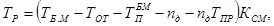
(9)
где ТБ.М - длительность
безморозного периода (между датами устойчивого перехода среднесуточной
температуры воздуха через 0°С), сут.;
ТОТ - время, необходимое
для оттаивания грунтов на глубину 10 - 15 см, когда можно начинать их
разработку, сут.;
ТПБ.М -
количество праздничных и выходных дней за безморозный период;
nд
- число дней с количеством осадков, приводящим к переувлажнению грунтов в слое
10 - 15 см: для супесей и суглинков легких - 5 мм/сут., суглинков тяжелых и
глин - 8 мм/сут. и более;
ТПР - время,
необходимое для просыхания грунта после дождя, сут.
Необходимые расчетные данные
приведены в рекомендуемом приложении 11.
4.9. При прохождении трассы
вблизи рек и крупных озер заготовку грунта для устройства земляного полотна
можно вести способом гидромеханизации, если при этом не прогнозируется
экологическое нарушение.
4.10. Водопропускные трубы
следует строить с обеспечением непрерывности всего комплекса работ - от
разработки котлована до засыпки труб грунтом в соответствии с графиком.
4.11. Если земляное полотно и
дорожную одежду устраивают в течение одного календарного года, то разрыв по
времени между окончанием земляных работ и началом устройства дорожной одежды
устанавливает проектная организация в соответствии с п. 4.94.
4.12. Дорожную одежду со сборным
покрытием устраивают, как правило, поточным методом. В тех случаях, когда
работы в один поток организовать невозможно, их следует разделить на два
потока. Первый включает устройство основания и выравнивающего слоя, монтаж
и посадку плит, второй - сварку стыковых соединений, омоноличивание стыков,
заделку швов и укрепление обочин.
4.13. Для обеспечения работы АБЗ
при пониженных положительных и отрицательных температурах воздуха утепляют
сушильные и смесительные барабаны, трубопроводы; осуществляют парообогрев
битумо-, водо-, топливопроводов и бачков для дозировки вяжущих; утепляют кабины
операторов и транспортеры, подающие минеральные материалы.
4.14. Цементобетонные смеси при
отрицательных температурах приготавливают на утепленных ЦБЗ. Утеплению подлежат
емкости для воды, водо- и паропроводная сети, пневмоаппараты, краны, насосы,
контрольные приборы и установки для приготовления растворов солей и ПАВ. Для
подогрева материалов необходимо отапливать галереи с транспортерами для их
подачи, а также бункерное, дозировочное и смесительное отделения завода.
Комплекты машин и механизмов для
укладки и уплотнения цементобетонной смеси должны быть подготовлены для работы
при отрицательных температурах.
4.15. Машины для выполнения
земляных работ следует выбирать с учетом природно-климатических и мерзлотно-грунтовых
условий, влияющих на их эксплуатационные показатели. Для земляных работ,
кроме машин обычных модификаций, применяют механизмы в северном исполнении, с
рабочими органами и ходовой частью повышенной хладостойкости, а также машины
повышенной проходимости (табл. 21).
Таблица 21
|
Машины
|
Рекомендуемые марки машин
|
|
в северном исполнении (температура воздуха минус
60°С)
|
с повышенной хладостойкостью основных узлов
(температура воздуха минус 40°С)
|
повышенной проходимости
|
|
Экскаваторы
(вместимость ковша, м3)
|
Э-652БХЛ
(0,65),
|
Э-652Б
(0,65),
|
Э-304В
(0,4),
|
|
ЭО-5111ЕХЛ
(1,0),
|
ЭО-4121
(1,0),
|
Э-5015А
(0,5),
|
|
Э-6112БХЛ
(1,25),
|
Э-10011Е
(1,0),
|
ТЭ-3М
торфяной (0,5),
|
|
Э-2505СА-1
(2,5),
|
ЭО-5132
(1,6),
|
МТП-71
торфяной (1,0)
|
|
Э-2505
(2,5)
|
Э-2503
(2,5)
|
|
Бульдозеры
на тракторе (мощность, кВт)
|
ДЗ-35С-Т-180Г
(132),
|
ДЗ-54С-Т-100МЗГП
(79),
|
ДЗ-18-Т-100МЗГП
(79),
|
|
ДЗ-34С-ДЭТ-250М
(184),
|
|
ДЗ-59-Т-330
(243),
|
ДЗ-118-ДЭТ-250М
(184)
|
ДЗ-18А-Т-100МЗГП
(79)
|
|
ДЗ-27С-Т-130.1.Г-1
(118),
|
|
ДЗ-110ХЛ-Т-130.1.1-1
(118)
|
|
Бульдозеры-рыхлители
на тракторе (мощность, кВт)
|
ДП-22С-Т-180КС2
(132),
|
ДЗ-116А-Т-130.1.Г-1
(118),
|
-
|
|
ДЗ-94С-Т-350
(243),
|
|
ДЗ-116ХЛ-Т-130.1.Г-1
(118),
|
ДЗ-117-Т-130.1.Г-1
(118)
|
|
ДЗ-117ХЛ-Т-180КС
(132)
|
|
Автогрейдеры
(мощность, кВт)
|
ДЗ-31-1ХЛ
(96)
|
ДЗ-98
(184),
|
-
|
|
Д3-98-0-1
(184)
|
|
Катки
|
Навесное
оборудование на тракторе Т-130АС
|
ДУ-37Б
полуприцепной к трактору Т-158 (15,5),
|
-
|
|
полуприцепной
к трактору Т-150К (15,0)
|
4.16. В тундровых и лесотундровых
районах ввиду сложности, изменчивости мерзлотно-грунтовых условий и различных в
связи с этим требований к срокам производства работ земляное полотно необходимо
подготавливать к устройству дорожной одежды отдельными законченными участками.
4.17. На
участках, где земляное полотно полностью стабилизировалось, дорожную одежду
следует устраивать в одну стадию согласно проекту.
В случае необходимости пропуска
транспорта до момента полной стабилизации земляного полотна допускается
устраивать дорожную одежду в две стадии. На первой стадии укладывают дорожную
одежду переходного типа с покрытием из необработанных гравийных, щебеночных или
других материалов, в частности из отвального белитового шлама, либо при
технико-экономическом обосновании из железобетонных плит без сварки и
омоноличивания стыков. На второй стадии после завершения стабилизации земляного
полотна его доводят до проектных отметок с уплотнением, устраивают основание и
покрытие.
4.18. В состав подготовительных
работ входит:
создание заказчиком
геодезической разбивочной основы;
восстановление и закрепление
трассы с учетом требований "Руководства по сооружению земляного полотна на
автомобильных дорогах";
расчистка дорожной полосы и
карьеров от леса, кустарника, снега;
удаление мохорастительного
покрова с полосы резервов и карьеров;
устройство нагорных и
осушительных канав;
строительство подъездных дорог к
карьерам;
заготовка мохорастительного
покрова и торфа для теплоизолирующих слоев.
4.19. Сроки выполнения
подготовительных работ назначают в зависимости от типа местности и принятого
принципа проектирования земляного полотна.
На участках, где земляное
полотно запроектировано по первому принципу, лес, кустарник, бугры пучения
удаляют только в зимний период на ширину основания насыпи, при этом сохраняют
снежные отложения толщиной до 20 см. Запрещается корчевать пни на просеке.
Не допускается устройство
просеки "в задел". Мохорастительный покров в основании насыпи и в
пределах охранной зоны, границы которой устанавливают при проектировании
(ориентировочно до 100 м в обе стороны от оси трассы), должен быть сохранен.
Проезд дорожных машин и
технологического транспорта по просеке разрешается только в зимний период.
4.20. На участках, где земляное
полотно запроектировано по второму принципу, лес и кустарник удаляют в зимнее
время, мохорастительный покров с поверхности резерва - сразу же после его
оттаивания в весенний период.
Возможность использования
грунтов боковых резервов определяется на основе прогноза их просыхания (см.
обязательное приложение
12), который позволяет устанавливать сроки разработки резервов (на
следующий год или текущим летом).
4.21. Разработку и перемещение мохорастительного
слоя с полосы резервов выполняют по схеме, приведенной на рис. 26. В пределах ширины насыпи понизу этот слой
сохраняют в ненарушенном состоянии, не наезжая на него бульдозерами. На
участках 1-го типа местности, где предусмотрено предпостроечное оттаивание
грунтов основания, мохорастительный слой удаляют на всю ширину дорожной полосы
бульдозером в поперечном направлении в обе стороны от оси дороги.
4.22. В качестве подъездных
дорог к карьерам зимой используют обычные автозимники, а в летнее время -
автозимники с продленными сроками эксплуатации или временные дороги с шириной
насыпи 8 м и высотой не менее 0,6 м. Конструкции автозимников назначают в
соответствии с требованиями действующих нормативных документов.
4.23. В районах со сплошным
распространением мезлоты мохорастительный покров или торф для теплоизолирующих
слоев заготавливают зимой рыхлением или заблаговременно ранней весной путем
послойной разработки его бульдозерами с перемещением в валы и призмы для
просушивания. Территория, где намечена заготовка теплоизоляционного материала,
должна быть удалена от оси дороги на расстояние, безопасное для сооружения по
условиям его устойчивости: на участках 2-го типа местности - не менее чем на 50
м, 3-го типа - не менее чем на 100 м. Приемы теплоизоляционного материала
должны быть уложены большей стороной по направлению преобладающих ветров.
4.24. Перед началом основных
земляных работ обследуют район проложения трассы для выявления дополнительных
карьеров грунтов и уточнения условий технологических особенностей производства
работ.
При обследовании определяют:
места укладки снега, удаляемого
с поверхности резервов и карьеров;
состояние водоотводных канав;
влажность грунтов в резервах и
при необходимости в карьерах.
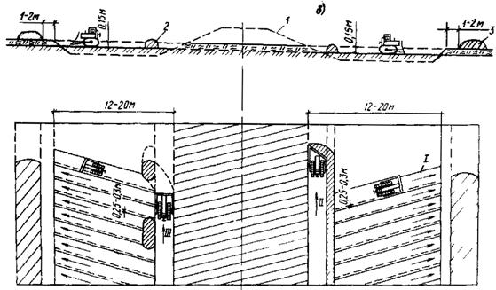
Рис. 26. Схема удаления мохорастительного покрова с
поверхности резервов при сохранении его в основании насыпи;
а - с укладкой промежуточных валиков бульдозером
с неповоротным отвалом; б - с устройством сплошного промежуточного вала
универсальным бульдозером; 1 - контур насыпи; 2 - промежуточные валы; 3 -
мохорастительный покров, уложенный в валы по обе стороны резервов; I - III -
последовательность работы бульдозеров
4.25. На основе данных,
полученных в результате обследования, в проекте производства работ уточняют:
сроки и порядок удаления снега с
поверхности резервов и карьеров;
объем работ по восстановлению
водоотводных канав;
способы и сроки разработки
резервов и карьеров на различных участках в зависимости от влажности грунтов.
4.26. Насыпь,
проектируемую по первому принципу, следует возводить в зимнее время после
промерзания грунта основания на глубину не менее 0,3 м. Нижние слои
отсыпают на высоту до 0,5 м способом "от себя", а последующие -
продольным. Насыпь следует сооружать на полную высоту в одну или две стадии:
часть отсыпают зимой на промерзшее основание (первая) и затем доводят до
проектной отметки летом (вторая).
Сроки второй стадии определяют
исходя из условия сохранения грунта под насыпью в мерзлом состоянии. Эти сроки
устанавливаются теплотехническим расчетом и соответствуют времени, необходимому
для оттаивания слоя насыпи, отсыпанного на первой стадии. Ориентировочно их
можно определить по рис. 27. Отряды машин
должны быть укомплектованы исходя из объемов работ на второй стадии и
ограниченных сроков их выполнения.
4.27. Насыпь,
проектируемая по второму принципу, должна быть отсыпана до проектных отметок к
сроку, когда оттаивание грунтов основания достигнет расчётной глубины. Работы
выполняют в зимний или весенне-летний период либо стадийно.
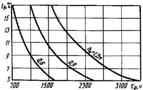
Рис. 27. Сроки досыпки насыпи на второй стадии:
tд - период
досыпки; tв -
средняя за период досыпки температура воздуха; hн - высота насыпи на
первой стадии
4.28. При
использовании для возведения насыпи сухо- и твердомерзлых грунтов на второй
стадии предусматривают дополнительное уплотнение нижней части насыпи в теплый
период вибрационными катками. В районах с островным распространением мерзлоты
при отсыпке насыпей в зимний период талыми грунтами время от их разработки до
окончания уплотнения не должно превышать: при температуре воздуха до минус 10°С
- 1,5 ч; минус 10 - 20°С - 1 ч, минус 20 - 30°С - 0,5 ч.
4.29. Насыпь из крупнообломочных
или песчаных грунтов (см. рис. 3, 4, 6, 8) возводят послойно на полную высоту с их
разравниванием и уплотнением. Теплоизолирующую призму на откосах наращивают по
мере отсыпки слоев насыпи. Торф для теплоизоляции доставляют транспортными
средствами и перемещают на откосы бульдозерами или автогрейдерами. В
аналогичном порядке возводят насыпи на торфяных грунтах (см. рис. 14), соблюдая требования п. 4.27.
4.30. Насыпь на косогоре (см. рис. 12) возводят с соблюдением следующих
правил:
первый слой отсыпают способом
"от себя" с одновременным устройством дренажной присыпки и
разравниванием грунта бульдозером;
присыпку из мохоторфяного грунта
наращивают послойно с одновременной отсыпкой и разравниванием грунта в насыпи и
мохоторфяного грунта в присыпке.
4.31. Для разработки глинистых грунтов
и перемещения их в насыпь применяют бульдозеры, скреперы, экскаваторы с
транспортными средствами. Разработку грунтов в резервах и перемещение их в
насыпь (см. рис. 13) осуществляют при
допустимой влажности указанной в табл. 7.
Переувлажненные грунты предварительно просушивают (см. обязательное приложение 12).
4.32. В зависимости от влажности
грунты в резервах разрабатывают:
при верхнем пределе допустимой
влажности - в весенний период слоями толщиной 15 - 20 см по мере их оттаивания;
при влажности от верхнего до
нижнего пределов - в летний период слоями по мере их просыхания.
При производстве работ необходимо
рационально сочетать указанные способы, обеспечивая первоочередное возведение
земляного полотна на участках с боле высокой влажностью.
4.33. Разработка грунта в
резервах послойно по мере оттаивания слоев возможна на ограниченном фронте,
длина которого зависит от производительности и количества бульдозеров, а также
от скорости оттаивания грунта на глубину 15 - 20 см. Длину фронта работ Lф (м) на одну машину (бульдозер) при
двухсторонних резервах определяют по формуле
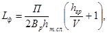
(10)
где П - производительность машины, м3/сут.;
Bр
- ширина одного резерва, м;
hт.сл
- толщина талого слоя, м; hт.сл = 0,15¸0,2 Ом;
Vг - скорость
оттаивания грунта в слое 15 - 20см, м/сут.; устанавливают по данным
непосредственных полевых наблюдений или принимают ориентировочно по табл. 22.
Таблица 22
|
Дорожно-климатическая подзона
|
Грунт
|
Скорость оттаивания, м/сут.
|
|
в мае
|
в июне
|
|
12
|
Супесь
|
0,040 - 0,050
|
0,070 - 0,08
|
|
Суглинок
|
0,030 - 0,040
|
0,050 - 0,06
|
|
Глина
|
0,025 - 0,035
|
0,040 - 0,05
|
|
13
|
Супесь
|
0,045 - 0,055
|
0,080 - 0,09
|
|
Суглинок
|
0,035 - 0,045
|
0,055 - 0,07
|
|
Глина
|
0,030 - 0,040
|
0,050 - 0,06
|
4.34. При дальности перемещения
грунта до 20 м и отсутствии мохорастительного покрова в основании применяют
схему укладки грунта слоями на всю ширину насыпи из каждого резерва, а более 20
м - от оси дороги к бровке.
4.35. Для сохранения
мохорастительного покрова в основании насыпи (см. рис. 13), возводимой из грунтов из боковых резервов,
применяют схему последовательной отсыпки первого слоя грунта от бровки к оси (рис. 28).
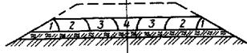
Рис. 28. Схема возведения земляного полотна бульдозером с
сохранением мохорастительного слоя в основании:
1, 2, 3, 4 - последовательность укладки первого
слоя грунта
4.36. При возведении насыпи из
глинистых грунтов из боковых резервов соблюдают следующие требования:
разрабатывают резервы, начиная с
их низовой стороны;
разравнивают грунт ежедневно
после перемещения его в насыпь с приданием поверхности уклона 3 - 5% от оси к
бровкам;
планируют дно и откосы резервов,
а также разравнивают валы мохорастительного покрова сразу же после окончания
земляных работ;
послойно уплотняют грунт
специальными средствами с соблюдением требуемых норм плотности (см. табл. 8).
4.37. Выемки в глинистых грунтах (см. рис. 22) разрабатывают следующими способами:
а) рыхлением мерзлого грунта
взрывами с последующей разработкой экскаваторами в отвал или с погрузкой в
транспортные средства;
б) взрывами грунта на выброс или
сброс с доработкой экскаваторами и бульдозерами;
в) послойной разработкой грунта
по мере его естественного оттаивания на глубину 15 - 20 см и перемещением его
бульдозерами в отвал или кавальеры для последующей погрузки экскаваторами в
транспортные средства.
4.38. При послойной разработке
грунта требуемое количество бульдозеров определяют исходя из производительности
машин и скорости оттаивания грунта. Выемки глубиной до 2 м разрабатывают
по поперечной схеме, а более 2 м - по продольно-участковой схеме. Целесообразно
применять комбинированную разработку с использованием обеих схем. Аналогичным
способом разрабатывают полувыемки на неустойчивых склонах (см. рис. 17).
4.39. Выемки в льдонасыщенных
грунтах устраивают в соответствии с п. 4.37
(а, б) с укладкой теплоизоляционного материала на откосы сразу же после
завершения земляных работ. Грунт, подлежащий замене, разрабатывают согласно п. 4.37 (а, в).
4.40. На
участках с благоприятными грунтово-гидрогеологическими условиями (сухие места)
земляное полотно возводят по правилам, изложенным в "Руководстве по
сооружению земляного полотна автомобильных дорог" (М. 1982).
4.41. Грунт земляного полотна
уплотняют, как правило, катками на пневматических шинах, применяя легкие катки
(массой до 10 т) для подкатки и тяжелые (25 - 50 т) - для окончательного
уплотнения, соблюдая требования упомянутого в п.
4.40 Руководства. Необходимое количество проходов катка зависит от принятой
нормы плотности, влажности грунта и определяется пробным уплотнением. После
возведения земляного полотна откосы крутизной менее 1:3 необходимо доуплотнять
легкими катками (массой до 10 т) с перемещением их по круговой схеме
перпендикулярно оси насыпи, а более крутые откосы -
планировщиками-уплотнителями.
4.42. Для возведения насыпи с
теплоизолирующим слоем из торфа в нижней части (см. рис. 4, тип 3) необходимо:
удалить бульдозером снег с
дорожной полосы;
заготовленный заблаговременно и
просушенный в карьере торф доставить транспортными средствами к месту работ,
уложить слоем толщиной 0,4 - 0,5 м (в рыхлом состоянии) и разровнять
бульдозером повышенной проходимости, одновременно уплотняя;
отсыпать насыпь из минерального
грунта: первый слой - способом "от себя", последующие - продольным с
учетом требований п. 4.26.
4.43. Земляное полотно с
искусственным теплоизолирующим слоем (см. рис.
4, тип 4) возводят в следующем порядке:
удаляют бульдозером снег с
дорожной полосы;
отсыпают из песка выравнивающий
слой толщиной до 0,3 м (в зависимости от неровностей на поверхности), планируя
его бульдозером или автогрейдером; укладывают теплоизолирующие плиты на
проектную ширину стыками вразбежку, под откосной частью - в два слоя;
отсыпают первый слой насыпи
толщиной 0,5 - 0,6 м из песка способом "от себя", надвигая грунт
бульдозером сначала на крайние плиты, затем на средние, не допуская попадания
на них крупных комьев мерзлого грунта;
доводят насыпь до проектной
отметки продольным способом.
4.44. Насыпь на участках с
мелкими буграми пучения (см. рис. 6) следует
возводить, увязывая все виды работ по времени и стадийности. На первой стадии
устраивают выравнивающий слой на высоту бугра пучения, укладывают
теплоизоляционный материал и засыпают его слоем грунта 0,5 - 0,6 м. На второй
стадии доводят насыпь до проектной отметки при подходе линейного отряда с
соблюдением требований п. 4.26.
4.45. На участках с несколькими
буграми пучения в пределах дорожной полосы необходимо отсыпать сплошной
выравнивающий слой, с тем, чтобы использовать его в дальнейшем для проезда
автомобильного транспорта и дорожных машин. В местах расположения бугров по
ходу работ следует закрепить на них выноски и отметить их в попикетной
ведомости. До начала оттепели над буграми необходимо уложить теплоизолирующий
слой и отсыпать насыпь. При использовании глинистых грунтов см. рис. 6, тип 6) работы производят аналогично, соблюдая
требования по выполнению земляных работ в зимний период (см. п. 4.28).
4.46. Земляное полотно на
плоскобугристых торфяниках (см. рис. 7)
возводят в следующем порядке:
после промерзания торфа в мочажинах
на глубину не менее 30 см (что позволяет обеспечить проезд машин) удаляют снег
с дорожной полосы бульдозером;
доставляют торф
автомобилями-самосвалами и отсылают в пределах ширины насыпи по низу, после
чего бульдозером перемещают в мочажины способом "от себя";
отсыпают минеральный грунт
насыпи после полного промерзания ранее уложенного слоя торфа в мочажинах, для
ускорения которого систематически удаляют выпадающий снег.
Время, требуемое на
промораживание торфа, определяют по табл.
23.
Таблица 23
|
Толщина слоя торфа, см
|
Количество градусо-часов для
промораживания торфа при его влажности, %
|
|
500
|
600
|
700
|
800
|
|
15
|
1000
|
1100
|
1200
|
1200
|
|
30
|
4200
|
4400
|
4500
|
4600
|
|
40
|
7500
|
7800
|
8000
|
8100
|
|
50
|
11700
|
12200
|
12500
|
12600
|
|
60
|
16900
|
17700
|
18000
|
18200
|
4.47. На участке с единичными
крупными буграми пучения (см. рис. 8) насыпь
возводят в следующем порядке:
расчищают дорожную полосу от
снега бульдозером, обеспечивая тем самым быстрое промораживание торфа в
мочажинах на глубину 0,3 - 0,4 м;
рыхлят и удаляют мерзлый грунт
бугра пучения бульдозером-рыхлителем на глубину залегания торфа в примыкающих
мочажинах;
разрабатывают торф в карьере
экскаватором с погрузкой в автомобили-самосвалы, доставляют к месту укладки;
засыпают торф в котлован,
разравнивают и уплотняют бульдозером (с запасом на осадку);
планируют поверхность торфяной
засыпки с приданием двускатного профиля в сторону откосов;
систематически расчищают снег
для ускорения естественного промораживания торфа;
сооружают насыпь из дренирующего
грунта после промерзания торфа в котловане.
4.48. Сооружение насыпи с
геотекстильными прослойками (см. рис. 15,
16) включает следующие операции:
подготовку основания, раскатку и выравнивание рулонов по поверхности основания
или насыпного слоя, скрепление полотнищ между собой, приемочный контроль за
устройством прослоек, отсыпку земляного полотна до проектных отметок.
4.49. Перед укладкой геотекстиля
в летний период на естественное основание необходимо предварительно засыпать
грунтом глубокие ямы или старые колеи на дорожной полосе, удалить кустарник и
отдельные деревья без корчевания пней.
В зимний период геотекстиль
следует укладывать после промерзания грунта основания на глубину 30 - 40 см.
Снежный покров толщиной более 20 см должен быть удален с основания насыпи.
Если предусматривают укладку
геотекстиля на ранее отсыпанный слой земляного полотна, то его поверхность
должна быть спланирована с поперечным yклоном 4% (см. п. 3.55).
4.50.
Направление раскатки рулонов (вдоль или поперек дороги) зависит от особенностей
работы конструкции. Рулоны необходимо раскатывать с максимально возможным
натяжением, устраняя перекосы и выравнивая края. Раскатку рулонов следует
производить в объеме, соответствующем сменному заданию по отсыпке вышележащего
грунтового слоя или укладке плит покрытия, с тем, чтобы к концу смены полностью
закрыть все уложенное полотно. Рулоны раскатывают вручную звеном из 3 - 5 чел.
в зависимости от массы рулона. Производительность раскатки до 10 тыс.м2
в смену. Уложенное геотекстильное полотно необходимо закреплять на поверхности.
Для этого его пригружают комьями грунта или пришпиливают металлическими либо
пластмассовыми скобами, вдавливаемыми ручным кассетным приспособлением.
4.51. Устройство разделительной
прослойки из геогекстиля (см. рис.15), а
также укрепление им откосов (см. рис. 23)
производят путем раскатки рулонов как в продольном, так и в поперечном
направлении.
4.52. Для устройства обойм и
полуобойм из геотекстильного полотна (см. рис.
16) рулоны раскатывают в поперечном направлении с запасом по обеим сторонам
насыпи, достаточным для смыкания краев в верхней части обоймы или для
образования верхних ветвей полуобоймы. После отсыпки грунтового слоя до
заданного уровня с послойным разравниванием и уплотнением свободные края
полотен заводят на его поверхность с максимальным натяжением. При использовании
полотен шириной не менее 4м и скреплении их между собой допускается раскатывать
рулоны в продольном направлении с таким расчетом, чтобы продольные стыки
полотен, образующих ограждающие части обоймы или полуобоймы, располагались
внутри насыпи не ближе 1,0 м к ее откосам.
Геотекстильный материал засыпают
способом "от себя" слоем грунта, минимальную толщину которого
определяют по табл. 24, а последующие
слои - продольной возкой грунта.
Таблица 24
|
Положение прослойки
|
Минимальная ширина нахлеста, см
|
Минимальная толщина засыпки, см
|
|
В теле насыпи
|
30
|
40
|
|
В обойме или полуобойме
|
30
|
40 - 50
|
|
Под сборным покрытием или под гравийным слоем
|
10
|
-
|
|
На откосе
|
20
|
10 - 15
|
4.53. При устройстве прослоек
полотна соединяют в основном внахлест. Ширину нахлеста принимают так же по табл. 24.
4.54. Если прослойка выполняет
армирующую функцию, входит в состав обоймы или полуобоймы и при этом может быть
подвержена значительным деформациям в процессе строительства и эксплуатации, то
полотна скрепляют сваркой, склеиванием или скобами. При выборе способа
скрепления следует учитывать возможность изменения свойств геотекстильного
материала в зоне стыка. Так, при сварке ухудшается водопроницаемость полотна,
поэтому такой способ не годится для соединения полотен, выполняющих дренажную
функцию, например, под сборным цементобетонным покрытием.
4.55. Полотна сваривают
паяльной лампой, бензорезом или газовой горелкой. Прочность сварного шва
зависимости от применяемого оборудования и условий производства работ должна
составлять 0,4 - 0,8 прочности полотна. Необходимо учитывать, что в местах
сварки водопроницаемость и деформативность геотекстильного материала резко
снижаются.
Аналогичным образом отражается
на свойствах материала склейка полотен разогретым битумом или полимерным клеем.
При склейке особое внимание следует обращать на прочность шва в случае
соединения мокрых полотен.
Соединение сшивкой делают с
помощью портативных швейных машин бригадой из 4 чел.; производительность 1 - 2
тыс. м шва в смену.
4.56. Для сокращения затрат
труда и повышения темпов устройства прослоек целесообразно применять широкие
полотна, составленные из двух-трех полотнищ путем их соединения различными
способами на предприятиях-изготовителях или производственных базах строительных
организаций. Полученное таким образом полотно складывают по ширине и затем
сворачивают в рулон, причем длина полотна и масса рулона должны обеспечивать
удобство работ вручную.
4.57. Для
защиты геотекстильного материала, уложенного на поверхность неподтопляемых
откосов, от солнечной радиации и атмосферных осадков устраивают грунтовое
покрытие из песка, гравийно-песчаной смеси, торфа. Грунты доставляют из
карьеров автомобилями-самосвалами, разгружают на обочинах и распределяют по
откосу слоем требуемой толщины бульдозерами или экскаваторами-планировщиками. В
качестве защитного слоя подтопляемых откосов канав используют битумную
эмульсию.
4.58. Насыпь из
глинистых грунтов в нижней части (см. рис.
9, 10) отсыпают слоями по 0,25 - 0,3
м по мере полного промерзания каждого слоя.
Работы необходимо выполнять
отдельным отрядом на каждом участке строительства (сосредоточенные работы).
4.59. Требуемую
производительность Пэ (м3/сут.) звена ведущих машин
(экскаваторов) в зависимости от скорости промерзания грунта в слоях, отсыпаемых
без технологических перерывов, определяют по формуле
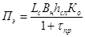
или Пэ=ПсмКсм,
(11)
где Lc-
длина участка строительства, м;
Bн
- ширина слоя насыпи по середине его толщины, м;
tпр
- время промерзания слоя, сут.;
hсл
- толщина отсыпаемого слоя, зависящая от скорости его промерзания, м,
Ко - коэффициент
относительного уплотнения грунта (отношение плотности скелета грунта в насыпи к
естественной в карьере);
Псм - сменная
производительность, м3.
При наличии в строительном
подразделении определенного звена экскаваторов уточняют допустимую для него
протяженность Lс участка строительства.
Время промерзания грунта при послойной его укладке приведено в рекомендуемом приложении 13.
4.60. Насыпь необходимо
возводить в следующем технологическом порядке:
в осенний период бульдозером
повышенной проходимости удаляют мохорастительный покров на ширину насыпи
понизу;
при установлении устойчивых
отрицательных температур воздуха систематически расчищают дорожную полосу от
снега бульдозером, обеспечивая промерзание грунта основания на глубину не менее
1,0 м, при этом расчетное время промерзания tпр
определяют по рис. 29;
доставляют глинистый грунт
автомобилями-самосвалами, отсыпают продольным способом, разравнивают слоем расчетной
толщины, уплотняют катком на пневматических шинах; таким образом устраивают все
слои глинистой части насыпи с их промораживанием;
торф доставляют из карьера и
отсыпают вначале на откосные части насыпи с надвижкой его бульдозером;
затем торфом закрывают
поверхность глинистого грунта, отсыпая слоями по 25 - 30 см с уплотнением и
промораживанием каждого;
отсыпают верхнюю часть насыпи из
сыпуче- и сухомерзлого песка.
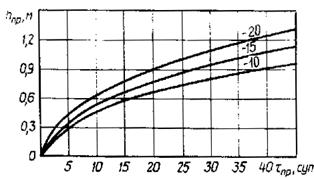
Рис. 29. Глубина промерзания избыточно увлажненного глинистого
грунта при систематической расчистке снега:
hпp - глубина промерзания. Цифры на
кривых - средняя за время промерзания температура воздуха, °С
4.62. Технологическая
последовательность рабочих процессов при сооружении земляного полотна на
промороженных основаниях (см. рис. 20)
такая:
подготовительные работы;
намораживание торфяной плиты;
отсыпка насыпи из минеральных
грунтов.
Сооружение земляного полотна производят
в три этапа:
на первом (осенне-зимний период)
- выполняют подготовительные работы и намораживают торфяную плиту
на втором (предвесенний период)
- отсыпают земляное полотно из минеральных грунтов на часть высоты и устраивают
теплоизолирующие призмы из торфа;
на третьем (летний период) -
досыпают земляное полотно из минеральных грунтов до проектной высоты.
4.63. Комплекс подготовительных
работ включает:
проминку поверхности болот
гусеничными машинами повышенной проходимости; расчистку дорожной полосы от
снега, древесной и кустарниковой растительности бульдозерами; систематическую
очистку полосы от выпадающего снега в период промораживания торфяного основания
на заданную глубину.
4.64. Торфяную плиту устраивают
после промерзания основания на глубину, обеспечивающую безопасное движение
машин и механизмов. Способ производства работ назначают с учетом типа болот.
4.65. При строительстве дороги
на болотах 1 типа (см. рис. 20, тип 24)
плиту намораживают обычно в два слоя из торфа из боковых резервов, поочередно
разрабатывая их экскаваторами-драглайнами. При этом экскаватор движется
вдоль траншеи и разрабатывает ее за один проход, заготавливая и перемещая в вал
количество торфа, требуемое на устройство одного слоя на всю ширину плиты.
Торф в валах выдерживают 2 - 3
сут., пока не снизится его влажность. Затем вал разравнивают, перемещая торф
под углом к оси дороги.
Торф уплотняют гусеничными
тракторами за 5-6 проходов по одному следу до плотности скелета торфа в насыпи не
менее 0,16 г/см3.
4.66. Второй
слой плиты устраивают после полного промерзания первого в той же
технологической последовательности, что и первый.
Второму слою торфяной плиты
придают серповидный профиль (см. п. 3.56)
и дополнительно уплотняют поперечными проходами трактора по откосам и телу
плиты.
4.67. При устройстве торфяной
плиты на болотах II и III типов (см. рис. 20,
типы 25, 26) торф заготавливают в карьерах, закладываемых на болотах 1 типа, и
транспортируют на дорогу автомобилями.
Торф разгружают, распределяя
равномерно на всю ширину плиты, разравнивают бульдозером слоями по 0,5 - 0,6 м
и уплотняют гусеничным трактором.
Каждый последующий слой торфяной
плиты устраивают после полного промерзания предыдущего. Последнему слою придают
серповидный профиль (см. п. 4.66).
4.68. Продолжительность
технологических перерывов для промораживания торфяных слоев насыпи различной
толщины устанавливают ориентировочно согласно рекомендуемому приложению 13.
Чтобы механизмы не простаивали в
период технологических перерывов, работу ведут одновременно на нескольких
участках.
4.69. Во всех конструкциях
насыпей, возводимых из песчаных и других легкоразмываемых грунтов, откосы
укрепляют торфопесчаной смесью с соблюдением следующих правил. Смесь требуемого
состава приготавливают в карьерах. С этой целью слабо- или среднеразложившийся
торф с естественной влажностью 300 - 400% перемешивают с талым или
сыпучемерзлым песком в буртах за несколько (не более 4 - 5) продольных по длине
бурта или поперечных проходов бульдозера. Для перемешивания целесообразно также
использовать тракторы типа "Беларусь", оборудованные прямой или
обратной лопатой.
4.70. Приготовленную
торфопесчаную смесь необходимо доставлять к месту укладки
автомобилями-самосвалами, разгружать на обочине и верхней части откосов,
распределять бульдозерами на откос в поперечном направлении.
4.71. Откосы и обочины укрепляют
геотекстильным материалом по технологии согласно пп. 4.50, 4.55, 4.57.
Укрепление обочин
гравийно-песчаным или щебенистым материалом, а также бетонными плитами
рекомендуется выполнять по технологии, изложенной в СНиП 3.06.03-85.
4.72. Водоотводные устройства,
за исключением лотков, полулотков и дренажных конструкций в выемках, следует
сооружать до начала основных земляных работ.
Канавы устраивают:
весной (по мере оттаивания
грунта) - экскаваторами-драглайнами, с обратной лопатой, канавокопателями и
бульдозерами;
летом или осенью (в период
максимального оттаивания грунтов) - сразу на полный профиль экскаваторами,
канавокопателями и бульдозерами;
зимой - взрывным способом.
4.73. Материал для утепления и
укрепления (дерн, мох, торф, камень и бетонные плитки) водоотводных устройств
заготавливают заблаговременно и доставляют к месту работы в зимний период.
4.74. Бетонные лотки, полулотки
и полутрубы изготавливают отдельными секциями на специально оборудованных
площадках или доставляют к месту монтажа со специализированных предприятий.
Секции монтируют кранами на автомобильном или гусеничном ходу.
4.75. Мерзлотные валики
устраивают в начале зимы (после промерзания грунта основания на глубину 0,3м) в
следующем порядке:
грунт доставляют
автомобилями-самосвалами, планируют и уплотняют бульдозерами;
откосы планируют навесным
тракторным планировщиком;
вдоль подошвы откосов
укладывают теплоизоляционный материал и распределяют его на откосы
бульдозерами.
4.76. Дорожные покрытия,
основания и дополнительные слои оснований устраивают, руководствуясь указаниями
и требованиями СНиП
3.06.03-85 и следующими положениями.
4.77. Цементобетонные основания
и нижние слои монолитных покрытий устраивают в зимний период с использованием
методов холодного бетона, термоса и электротермоса.
Способ зимнего бетонирования
выбирают, руководствуясь данными табл. 25.
Таблица 25
|
Слой дорожной одежды
|
Условия производства работ
|
Способ бетонирования
|
|
Минимальная суточная температура воздуха, °С
|
Состояние нижележащего слоя
|
|
Основание и покрытие
|
5 - минус 5
|
Талый
|
Термос с подогревом материалов
|
|
5 - минус 5
|
Промерзший на глубину до 5 см
|
То же, с добавлением солей
|
|
0 - минус 5
|
То же, до 10 см
|
Холодный бетон. Электротермос
|
|
Основание
|
До минус 10
|
То же, более 10 см
|
Холодный бетон
|
|
До минус 25
|
Промерзший на всю глубину
|
Электротермос
|
|
Покрытие
|
До минус 10
|
Промерзший на глубину более 10 см
|
То же
|
4.78. При бетонировании любым из
указанных способов бетон выдерживают (не допуская замерзания) до набора им не
менее 50% проектной прочности.
4.79. Сборные покрытия из железобетонных
плит со стыковыми соединениями камерного типа устраивают без подшовных подушек,
сваривая стыковые скобы в швах расширения.
4.80. Сборные покрытия в зимний
период устраивают на заблаговременно подготовленном основании. Перед отсыпкой
выравнивающего слоя поверхность основания очищают от снега и льда
металлическими щетками, бульдозерами или автогрейдерами. Монтажный слой
устраивают из талого или сыпучемерзлого грунта. Длину захватки принимают из
расчета сменного темпа работ.
4.81. Вне зависимости от сезона
производства работ при устройстве геотекстильной прослойки под сборным
покрытием расстояние от краев отдельных полотен до параллельных им швов или
кромок покрытия должно быть не менее 0,5 м. Технология раскатки рулонов должна
соответствовать приведенной в п. 4.50.
4.82. Посадку плит, а также
сварку скоб, заделку стыков и омоноличивание швов производят только в теплый
(весенне-летний) период года после устранения обнаруженных дефектов. Сроки
выполнения работ должны быть предусмотрены в проекте.
4.83. Для приготовления теплых
асфальтобетонных, смесей, наряду с битумами заводского производства,
допускается применять битумы, приготовленные на месте путем смешения вязких
дорожных битумов с разжижителями (табл. 26).
4.84. Асфальтобетонную смесь
укладывают на основание из железобетонных плит после выполнения следующих
операций:
очистки поверхности покрытия от
пыли и грязи и удаления выступающей над ней арматуры;
исправления неровностей сборного
покрытия асфальобетонной смесью с предварительной подгрунтовкой поверхности
жидким битумом или битумной эмульсией либо перекладкой плит при высоте уступов
более 5 см;
подгрунтовки всей поверхности
сборного покрытия жидким битумом или битумной эмульсией;
укладки в местах расположения
поперечных швов, сборного покрытия полос шириной 0,75 - 1,0 м из геотекстиля
или сетки из стекловолокна.
Таблица 26
|
Требуемая марка битума
|
Марка исходного битума
|
Количество разжижителя для получения битума
заданной вязкости, %
|
|
Керосин тракторный, осветительный лигроин
|
Моторное топливо
|
Жидкое котельное топливо, нефть
|
Деготь каменноугольный
|
Каменноугольное масло
|
|
Д-3, Д-4
|
Д-5
|
|
БНД
130/200
|
БНД
90/130
|
2
|
5
|
6
|
6
|
9
|
5
|
|
(П25=130¸200)
|
БНД
60/90
|
3
|
6
|
8
|
8
|
11
|
6
|
|
БНД
200/300
|
БНД
90/130
|
5 - 7
|
8 - 9
|
11 - 16
|
11 - 15
|
13 - 18
|
8 - 11
|
|
(П 5=200¸300)
|
БНД
60/90
|
8 - 10
|
10 - 14
|
13 - 17
|
13 - 18
|
15 - 20
|
9 - 12
|
|
СГ
130/200
|
БНД
40/60
|
16 - 19
|
-
|
-
|
-
|
-
|
-
|
|
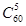 =(130¸200)
|
БНД
60/90
|
13 - 16
|
-
|
-
|
-
|
-
|
-
|
Примечания: 1. При
приготовлении жидких дорожных битумов в открытой системе температура битума,
поступающего на смешение с разжижителем, не должна превышать 120°C.
2.
Разжижители по своему качеству должны удовлетворять требованиям соответствующих
стандартов: моторное топливо для малооборотных дизелей - ГОСТ
1667-68, жидкое котельное топливо (топочный мазут) марок 40, 100 и 200 -
ГОСТ 10585-75, дегти каменноугольные - ГОСТ 4641-80, каменноугольные масла -
ГОСТ 2770-74.
4.85. Температура
асфальтобетонной смеси, доставленной к месту укладки, в зависимости от погодных
условий должна быть не ниже указанной в табл.
27.
Таблица 27
|
Асфальтобетонная смесь
|
Толщина слоя покрытия, см
|
Минимальная температура смеси, °C, на месте укладки при температуре воздуха, °С
|
|
30
|
20
|
15
|
10
|
5
|
0
|
-5
|
-10
|
|
Горячая
|
5
|
115
120
|
125
135
|
130
140
|
135
145
|
140
150
|
145
155
|
150
160
|
155
-
|
|
10
|
105
110
|
115
120
|
120
125
|
125
130
|
130
135
|
135
140
|
140
145
|
145
150
|
|
15
|
90
95
|
95
100
|
95
100
|
100
105
|
105
105
|
105
110
|
105
110
|
110
115
|
|
Теплая
|
5
|
90
100
|
95
105
|
100
110
|
105
115
|
110
120
|
115
125
|
120
130
|
125
135
|
|
10
|
90
95
|
95
100
|
95
100
|
100
110
|
105
115
|
110
115
|
115
125
|
120
130
|
|
15
|
80
85
|
80
85
|
80
90
|
85
90
|
90
95
|
90
95
|
95
100
|
100
100
|
Примечания: 1. Над
чертой приведены значения температуры смеси при скорости ветра- до 6 м/с, под
чертой - свыше 6 м/с.
2.
Минимальная температура смеси на месте укладки приведена из условия ее
остывания во время разгрузки и уплотнения в течение 45 мин до температуры 65°С.
4.86. Продолжительность
транспортирования смеси к месту укладки, обеспечивающая требуемую температуру
смеси, не должна превышать указанной в табл.
28.
Таблица 28
|
Асфальтобетонная смесь
|
Толщина слоя покрытия, см
|
Максимальная продолжительность транспортирования
смеси к месту укладки, мин, при температуре воздуха, °C.
|
|
30
|
20
|
15
|
10
|
5
|
0
|
-5
|
-10
|
|
Горячая
|
5
|
190
130
|
115
75
|
85
55
|
60
40
|
45
25
|
25
15
|
15
10
|
5
-
|
|
10
|
220
170
|
140
110
|
110
90
|
85
75
|
60
40
|
40
25
|
15
10
|
10
5
|
|
15
|
250
220
|
170
140
|
140
110
|
110
85
|
80
60
|
60
40
|
40
15
|
20
10
|
|
Теплая
|
5
|
220
190
|
145
115
|
115
85
|
95
65
|
75
45
|
55
25
|
30
10
|
20
-
|
|
10
|
245
220
|
165
140
|
135
110
|
110
85
|
85
60
|
65
40
|
35
15
|
25
-
|
|
15
|
290
270
|
190
170
|
160
140
|
130
110
|
100
80
|
80
60
|
60
40
|
40
20
|
Примечания: 1. Над
чертой приведена продолжительность транспортирования смеси при скорости ветра
до 6 м/с, под чертой - свыше 6 м/с.
2.
Значения максимальной продолжительности указаны для случая транспортирования смеси
автомобилями-самосвалами без утепления кузовов.
3.
При времени транспортирования смеси, превышающем приведенное в таблице,
предусматривают мероприятия по утеплению кузовов.
4.87. Максимальная
продолжительность уплотнения асфальтобетонной смеси приведена в табл. 29.
4.88. При устройстве покрытий и
оснований из асфальтобетонных смесей при температуре воздуха ниже 5°C предусматривают
мероприятия, в максимальной степени обеспечивающие сохранение тепла перевозимой
смеси: использование большегрузных автомобилей, обогрев кузовов автомобилей,
укрытие смеси и т.п.
Таблица 29
|
Асфальтобетонная смесь
|
Толщина слоя покрытия, см
|
Максимальная продолжительность уплотнения смеси,
мин, при температуре воздуха, °C
|
|
30
|
20
|
15
|
10
|
5
|
0
|
-5
|
-10
|
|
Горячая
|
5
|
60
55
|
55
50
|
50
50
|
50
45
|
45
45
|
45
|
-
|
-
|
|
10
|
75
70
|
65
60
|
60
55
|
60
55
|
55
50
|
50
50
|
50
50
|
45
-
|
|
15
|
130
110
|
120
100
|
115
95
|
110
90
|
100
85
|
95
80
|
90
75
|
85
70
|
|
Теплая
|
5
|
65
60
|
60
55
|
60
50
|
55
50
|
50
45
|
50
45
|
45
-
|
-
|
|
10
|
90
80
|
80
70
|
75
65
|
70
60
|
65
55
|
60
50
|
55
45
|
50
-
|
|
15
|
145
130
|
130
115
|
125
110
|
115
105
|
110
95
|
105
90
|
95
85
|
90
75
|
Примечания: 1. Над
чертой приведены данные при скорости ветра до 6 м/с, под чертой - свыше 6м/с.
2.
За исходную температуру смеси на месте укладки принята температура 120°С.
4.89. Основание под
асфальтобетонные и другие покрытия подготавливают до наступления отрицательных
температур воздуха. Непосредственно перед устройством покрытия основание
тщательно очищают от пыли и грязи, а мокрое, заснеженное - просушивают
специальными нагревателями или горячим песком.
4.90. Теплые смеси при
температуре воздуха ниже 5°С уплотняют немедленно после их укладки
тяжелыми (10 - 12 т) катками. Количество одновременно работающих катков
увеличивают в 1,5 - 2 раза по сравнению с потребностью в них в обычных
условиях.
4.91. Покрытия и основания из
белитового шлама, а также щебеночные (гравийные), обработанные белитовым шламом
не на полную глубину, устраивают при температуре воздуха не ниже минус 5°С, а
из материалов, укрепленных белитовым шламом, - не ниже 0°С.
4.92. Работы по устройству
покрытий и оснований из белитового шлама и укрепленных им материалов выполняют,
руководствуясь указаниями и требованиями разд. 8 СНиП 3.06.03-85,
распространяющимися на устройство покрытий и оснований из материалов,
укрепленных шлаками и золами.
При устройстве щебеночных
(гравийных) покрытий и оснований, обработанных белитовым шламом не на полную
глубину, следует руководствоваться требованиями пп. 7.11, 7.13 - 7.22 СНиП 3.06.03-85
в части устройства покрытий и оснований с использованием пескоцементной смеси.
Влажность белитового шлама должна быть не ниже оптимальной. Движение
построечного транспорта и устройство вышележащего слоя дорожной одежды
разрешаются сразу после окончания уплотнения покрытия или основания,
обработанного шламом.
4.93. При устройстве покрытий и
оснований из белитового шлама, а также щебеночных (гравийных), обработанных
белитовым шламом не на полную глубину, при температуре воздуха ниже минус 5°С
все операции должны быть закончены до смерзания шлама. Ориентировочно
допустимый интервал между распределением шлама и окончанием его уплотнения
определяют по номограмме рекомендуемого приложения 14 в зависимости от температуры шлама на
момент начала распределения, температуры воздуха и толщины слоя. При этом
температуру 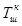
,
при которой шлам смерзается, принимают равной минус 5°С.
4.94. На участках
1-го типа местности (по табл. 2)
нежесткие дорожные одежды допускается устраивать сразу же после возведения
земляного полотна, а жесткие - через год после сооружения насыпи с учетом
допустимой осадки (см. обязательное приложение 4).
На участках 2-го типа местности
дорожные одежды низшего, переходного и облегченного типов можно устраивать в
год завершения земляных работ, а с асфальто- и цементобетонными покрытиями -
через год эксплуатации дороги с учетом величины допустимой осадки (см.
обязательное приложение
4).
На участках 3-го типа местности
дорожные одежды переходного и облегченного типов допускается устраивать через
год после сооружения насыпи, а с асфальто- и цементобетонными покрытиями -
через 2 года.
На всех типах местности по
согласованию с заказчиком и при технико-экономическом обосновании дорожную одежду
можно устраивать в две стадии в соответствии с п.
4.17.
На насыпях, устроенных
гидромеханизированным способом, все типы оснований и покрытий можно устраивать
сразу после отсыпки земляного полотна до проектных отметок.
4.95. На автомобильных дорогах,
в том числе и промышленных, объем заменяемых на второй стадии плит при
устройстве сборных железобетонных покрытий устанавливает комиссия, состоящая из
представителей финансирующей, проектной и строительной организаций, после
освидетельствования покрытия по первой стадии и составления акта на списание
разрушенных плит сверх 5%, установленных Госстроем СССР.
4.96. Качество производства всех
видов работ контролируют, руководствуясь требованиями СНиП 3.06.03-85
и положениями настоящих норм.
4.97. При сооружении земляного
полотна контролируют:
сохранность мохорастительного покрова
в основании насыпей и в пределах охранной зоны;
соблюдение сроков выполнения
подготовительных и основных работ;
глубину промерзания (оттаивания)
грунтов основания и отсыпаемых слоев насыпи;
толщину теплоизолирующих слоев,
отсыпаемых на всех конструктивных элементах (в нижней части, на откосах и на
поверхности глинистого грунта, уложенного в нижней части насыпи);
требуемую плотность при
послойном уплотнении грунтов;
качество стыковки полотен
геотекстильного материала.
4.98. Освидетельствованию и приемке
с оформлением соответствующих актов подлежат: качество расчистки основания
(удаление снега и древесной растительности, ликвидация глубоких ям и колей);
толщина, степень уплотнения и качество теплоизолирующих слоев насыпей; размеры
в плане и глубина удаления бугра пучения, толщина отсыпанного при ликвидации
бугра торфяного слоя; толщина, степень уплотнения и промораживания
намораживаемых торфяных плит; высота нижней части насыпи из промороженных
глинистых грунтов; качество грунтов, уложенных в верхней части насыпи
(соответствие проекту, степень уплотнения); геометрические размеры берм и
теплоизолирующих слоев и качество их устройства на откосах; качество уложенного
геотекстильного материала (сплошность полотен величина нахлеста, способ
стыковки полотен).
4.99. Промежуточные приемки
осуществляют комиссии, которые определяют качество строительства и возможность
производства последующих работ.
4.100. Качество работ по
устройству покрытий, оснований и дополнительных слоев оснований с применением
белитового шлама контролируют, руководствуясь положениями СНиП 3.06.03-85
в части контроля качества работ по устройству оснований и покрытий из
материалов, укрепленных неорганическими вяжущими.
4.101. При устройстве дорожных
одежд в зимнее время должно быть обеспечено регулярное получение ежедневных
метеорологических данных и краткосрочных прогнозов по температуре наружного
воздуха, скорости и направлению ветра, осадкам.
5.1. Пересечения автомобильных
дорог горячими трубопроводами всех диаметров и назначений должны осуществляться
подземным способом с соблюдением общих требований, регламентируемых СНиП
2.05.06-85.
5.2. Пересечения, как правило,
следует предусматривать на участках, сложенных непросадочными и
слабопросадочными грунтами. Для участков с другими грунтами в проектах
пересечений необходимо предусматривать комплекс инженерных мероприятий, направленных
на обеспечение устойчивости земляного полотна и максимальное сохранение
естественного температурного режима вечномерзлых грунтов под горячим
трубопроводами.
5.3. В месте пересечения
земляное полотно автомобильной дороги следует устраивать в насыпи, а трубопровод
прокладывать подземным способом. Запрещается пересечение автомобильной дороги
трубопроводом на участках нулевых мест и выемок. Угол пересечения автомобильной
дороги с трубопроводом должен составлять 85 - 90°.
5.4. Глубина заложения трубопровода
должна быть не менее 1,4 м от поверхности дорожного покрытия до верхней
образующей защитного футляра. Если защитный футляр не предусмотрен (на дорогах
V категории), то глубину заложения принимают до верхней образующей
трубопровода.
5.5. Для каждого участка
пересечения необходимо составлять индивидуальный проект, включающий:
характеристику инженерно-геологических условий; размеры (диаметр) трубопровода
и среднегодовую температуру на его поверхности; время производства работ по
прокладке трубопровода (до или после сооружения земляного полотна); требования
к грунтам, предназначенным для засыпки трубопровода; технологию отсыпки
земляного полотна.
5.6. На участках планируемых
пересечений предпочтение следует отдавать опережающей прокладке горячих
трубопроводов с защитным футляром.
5.7. На участках, сложенных
просадочными и сильнопросадочными грунтами, трубопровод надлежит укладывать в
зимний период с заменой грунтов в основании непросадочными грунтами на глубину
их сезонного оттаивания, но не менее чем на 2,5 м (рис. 30, а). В целях уменьшения зоны оттаивания используют
теплоизолирующий слой под трубой на песчаной подсыпке толщиной не менее 0,2 м (рис. 30, б).
5.8. Толщина теплоизолирующего
слоя из торфа должна составлять не менее 0,5 м в плотном теле при среднегодовой
температуре поверхности трубы 5°С. Слой следует укладывать на всю ширину
траншеи, которую назначают согласно СНиП 2.05.06-85. Во всех случаях ширина
траншеи должна быть не менее полуторного поперечного габарита механизмов,
уплотняющих и разравнивающих укладываемый грунт.
5.9. Если в качестве
теплоизоляционного материал используют плиты из пенополиуретана, их толщину
принимают от 10 до 30 см при температуре на поверхности трубы соответственно от
20 до 40°С и 5 см - при температуре 5°С.
5.10. Для предотвращения
оттаивания грунтов вокруг трубопровода целесообразно предусматривать в нижней
части трубы цилиндрическую (в виде скорлуп) теплоизоляцию толщиной, равной
половине диаметра трубы.
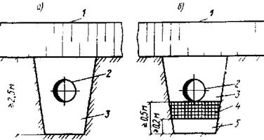
Рис. 30. Схема прокладки трубопроводов на участках пересечения
автомобильных дорог с заменой просадочных и сильнопросадочных грунтов основания
(а), с применением теплоизолирующего слоя (б);
1 - земляное полотно; 2 - трубопровод; 3 -
засыпка из песчаного грунта; 4 - теплоизолирующий слой из торфа; 5 - подсыпка
из песчаного грунта.
5.11. Траншею для укладки
трубопровода устраивают механизированным или взрывным способом на полную
глубину с последующим разравниванием удаленного грунта вдоль дороги.
5.12. Для засыпки траншеи
следует применять грунты с устойчивой структурой, большой объемной массой,
высоким коэффициентом фильтрации. При их отсутствии траншеи необходимо засыпать
грунтом, из которого возведено земляное полотно автомобильной дороги.
5.13. В зимний период грунт в
траншею следует засыпать немедленно после укладки трубопровода, не допуская его
смерзания. Засыпку осуществляют траншеезасыпателем ТР-351, а также бульдозерами
массой 15 - 25 т. Если для засыпки используют мерзлый комковатый грунт, то над
верхней образующей уложенного трубопровода необходимо создавать защитный слой
не менее 0,2 м из мелкого разрыхленного или талого грунта.
5.14. Торф для устройства
теплоизолирующего слоя доставляют из карьеров автомобилями-самосвалами.
Разравнивают и уплотняют торфяной слой многократными проходами бульдозера на
гусеничном или пневматическом ходу.
5.15. Плиты пенополиуретана
раскладывают и закрепляют на подстилающем слое деревянными кольями или
металлическими штырями.
5.16. Грунт засыпки над верхней
образующей трубопровода должен иметь тот же коэффициент уплотнения, что и грунт
в нижней части насыпи. Засыпку траншеи грунтом и его уплотнение следует
осуществлять до заполнения трубопровода продуктами.
5.17. Контроль качества и
приемку земляных работ производят в соответствии с положениями
"Руководства по операционному контролю качества строительно-монтажных
работ при сооружении линейной части магистральных трубопроводов" Р375-79
(ВНИИСТ. М.,1980) и требованиями СНиП III-42-80.
5.18. Земляное полотно в зоне
пересечения возводят послойно в соответствии с требованиями разд. 4. При этом
дорожную одежду устраивают по двухстадийной технологии.
5.19. В случае, когда
предусматривается пересечение эксплуатируемой автомобильной дороги
трубопроводом, необходимо строить временную объездную дорогу, включая
автозимник.
На участке пересечения
производят демонтаж плит покрытия и разрабатывают бульдозером с предварительным
рыхлением грунта поперечную траншею в насыпи на необходимую ширину. В
дальнейшем работы выполняют по изложенной выше технологии.
6.1. Отвод земли под карьеры,
очистку участков от леса, кустарника и мохорастительного покрова, устройство
водоотводных канав и подъездных путей к карьерам выполняют заблаговременно.
6.2. При погрузке
крупнообломочного грунтов в транспортные средства не должен попадать лед, а
также камни с размером ребер более 30 см. Грунт требуемых фракций получают:
назначением необходимой сетки
бурения скважин для взрыва;
дроблением негабаритных камней.
6.3. Необходимо заблаговременно
создавать запас из обвалованных и просушенных летом песчано-гравийных грунтов,
которые на зиму укрывают мхом, торфом, древесными отходами и т.д.
Для уменьшения снежных заносов
забой в карьерах устраивают с наветренной стороны, а валы разработанных
материалов отсыпают с подветренной. Между валами предусматривают расстояние не
менее 3 м.
6.4. Грунты в карьерах
разрабатывают двумя способами:
бульдозерами послойно по мере
радиационного оттаивания с перемещением в бурты и последующей погрузкой
экскаваторами в транспортные средства;
прямой экскавацией и погрузкой в
транспортные средства.
Первым способом следует
разрабатывать сухо- и твердомерзлые грунты, вторым - сыпучемерзлые. Экскавацию
грунта из буртов осуществляют в летнее время или зимой после просушивания.
6.5. Глинистые грунты допустимой
влажности и при отсутствии крупных камней разрабатывают скреперами, а в
остальных случаях - бульдозерами. При достаточной площади карьеров и проектной
глубине их разработки до 4 м следует максимально использовать летний период для
радиационного оттаивания и послойной срезки грунта с перемещением в бурты.
Периодичность снятия грунта определяется продолжительностью оттаивания слоев на
глубину 10 - 15 см при использовании бульдозеров типа ДЗ-18 (мощностью 79 кВт)
и 20 - 25см - более мощных бульдозеров.
6.6. Для обеспечения
ежесуточного оттаивания необходимого объема грунта подбирают соответствующую
площадь карьера, ширину которого назначают в зависимости от производительности
машины (для бульдозера не более 100 м), а длину рассчитывают с учетом скорости
оттаивания грунта. Площадь карьера разбивают на захватки для последовательной
разработки оттаивающих грунтов.
6.7. Глубину послойного
радиационного оттаивания грунта hот (м)
определяют в зависимости от среднесуточной температуры воздуха, влажности
грунта, его теплофизических характеристик по формуле
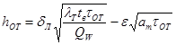
(12)
где dЛ
- поправочный множитель, значение которого зависит от периода летнего сезона и
продолжительности оттаивания (табл. 30);
lТ
- коэффициент теплопроводности талого грунта, Вт/(м×К);
lТ(М)=КР(gск+0,1Wс-1,1)-0,1
Wс;
Kp
- безразмерный коэффициент; принимают равным 1,5 для талых песчаных грунтов и
1,7 - для мерзлых; для супесей соответственно - 1,4 и 1,5;
gск
- плотность скелета грунта, кг/м3;
Wс
- суммарная влажность грунта, %;
tв-
среднесуточная температура воздуха ближайшей к району метеостанции, °С;
tОТ - продолжительность
оттаивания, ч;
Qw
- расход тепла на оттаивание единицы объема грунта, Дж/м3;
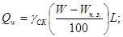
Wн.з
- количество незамерзшей воды по отношению к массе скелета грунта, доли
единицы;
L - удельная теплота плавления
льда, Дж/кг; L = 80 Дж/кг;
e
- вспомогательный параметр, характеризующий осадку грунта при оттаивании (табл.
31)
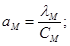
lМ
- коэффициент теплопроводности мерзлого грунта, Вт/(м×К);
СМ - объемная
теплоемкость мерзлого грунта, Дж/(м3×К).
Таблица 30
|
Месяц
|
Значение dЛ при
продолжительности оттаивания, сут.
|
|
1
|
2
|
3
|
4
|
5
|
6
|
7
|
|
Май - июнь
|
1,07
|
1,20
|
1,27
|
1,41
|
1,50
|
1,52
|
1,52
|
|
Июль
|
0,96
|
1,04
|
1,10
|
1,16
|
1,18
|
1,27
|
-
|
|
Август - сентябрь
|
1,00
|
1,10
|
1,16
|
1,20
|
1,22
|
1,17
|
1,12
|
Для ориентировочной оценки глубины
оттаивания можно пользоваться номограммами (рис.
31) при влажности грунта естественного сложения 26 - 28% и плотности
скелета 1,4 - 1,5 г/см3.
Таблица 31
|
Месяц
|
Значение e при влажности грунта, %
|
|
18
|
20
|
22
|
24
|
26
|
28
|
|
Май - июнь
|
0,067
|
0,059
|
0,056
|
0,052
|
0,049
|
0,045
|
|
Июль
|
0,073
|
0,065
|
0,062
|
0,056
|
0,053
|
0,048
|
|
Август - сентябрь
|
0,071
|
0,063
|
0,059
|
0,054
|
0,052
|
0,047
|
6.8. При составлении проекта
производства работ необходимо для каждого объекта построить графики глубины
разработки грунта при различной периодичности снятия оттаявших слоев. В соответствии
с графиками выбирают тип бульдозера, учитывая при этом мощность полезной толщи.
В карьерах, которые требуется
разрабатывать на максимальную глубину в течение одного летнего сезона,
оттаявшие слои необходимо удалять ежедневно, но не реже чем через 3 сут.
6.9. При послойном оттаивании
грунт перемещают в промежуточные валы для просушивания и прогрева, а затем в
накопительные бурты. Разработку талых слоев грунта необходимо начинать с нижней
части карьера. На этом участке следует чаще удалять слои, чтобы увеличить уклон
дна карьера и ускорить стекание воды.
Промежуточные валы из оттаявшего
грунта возводят высотой до 2,5 м, шириной по низу не более 6м и выдерживают для
просушивания в зависимости от вида грунта:
песка средней крупности - 1
- 2 сут.;
песка пылеватого с содержанием
пылеватых и глинистых частиц до 5% - 4 - 5 сут., от 5 до 13% - 6 - 7 сут.;
супеси - 10 - 12сут.
Предварительно подсушенные
пылеватые пески с содержанием пылеватых и глинистых частиц от 5 до 13 % и
супеси в дальнейшем укладывают в накопительные бурты тонкими слоями (до 0,5 м)
для последующего просыхания. Укладку осуществляют бульдозерами способом
надвижки или экскаваторами.
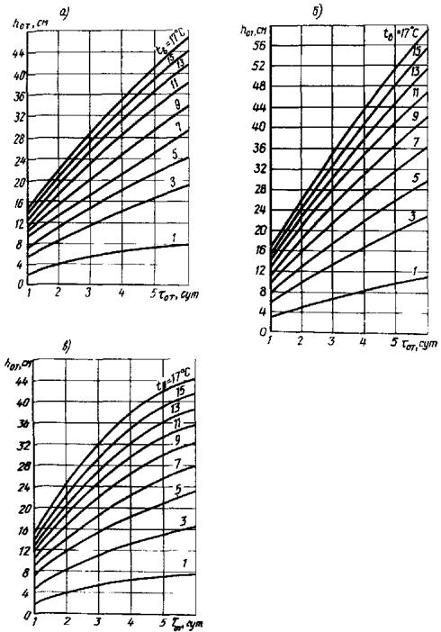
Рис. 31. Номограмма для определения глубины оттаивания в мае -
июне (а), июле (б), августе - сентябре (в). Цифры на кривых - среднесуточная
температура воздуха за период оттаивания
6.10. Бурты, предназначенные для
разработки в зимний период, необходимо отсыпать высотой, превышающей глубину их
возможного сезонного промерзания, и защищать теплоизолирующими покрытиями из
местных (мох, торф, снег и др.) и искусственных (полимерные или водно-воздушные
замерзающие пены) материалов. Толщину теплоизолирующего покрытия определяют по
номограмме (рис. 32).
6.11. Грунт в карьерах и буртах
зимой следует разрабатывать с соблюдением следующих правил:
снег с поверхности удалять из
расчета освобождения площади грунта, которую экскаваторы могут разработать за
одну смену, а в сильные морозы - за половину смены;
передвижение транспортных
средств осуществлять по дну разрабатываемого карьера;
разработку буртов и карьеров,
расположенных на склоне, начинать с низовой стороны.
6.12. Бурты грунта,
предназначенные для разработки в летний период, следует располагать в карьере
по направлению господствующих ветров, а в зимний - перпендикулярно этому
направлению (для накопления утепляющих снежных отложений). Во всех
случаях высота буртов должна быть не менее 6 м для обеспечения требуемой
производительности экскаваторов.
6.13. При острой необходимости и
соответствующем технико-экономическом обосновании допускается разрабатывать
мерзлые грунты с температурой выше минус 0,3 °С
тяжелыми тракторными рыхлителями с тяговым усилием на крюке не менее 200 кН,
при температуре ниже минус 0,3 °С - с предварительным рыхлением буровзрывным
способом. Выбор типов буровых станков, взрывчатых веществ и схем взрывания, а
также общую технологию ведения буровзрывных работ осуществляют в соответствии с
"Руководством по производству буровзрывных работ на строительстве БАМ
(ЦНИИС. М., 1974).
6.14. Торф в карьерах
разрабатывают в зимний период экскаваторами-драглайнами или с обратной лопатой.
При этом на поверхности болот устраивают промороженные полосы путем расчистки
снежного покрова.
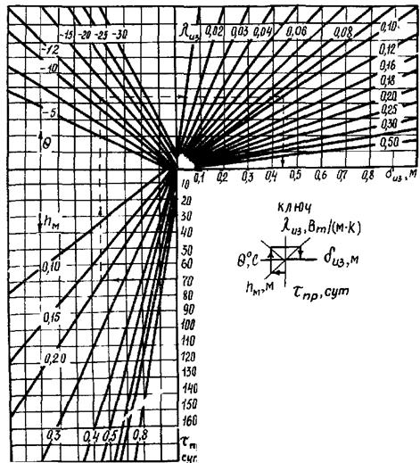
Рис.
32. Номограмма для определения требуемой толщины теплоизолирующего покрытия на
поверхности грунта:
lиз -
коэффициент теплопроводности материала покрытия; dиз - толщина теплоизолирующего покрытия; hМ -
допустимая глубина промерзания грунта под покрытием; q - средняя температура воздуха от начала промерзания до начала
разработки; tпр - время
от начала промерзания до начала разработки
7.1. Вопросы охраны окружающей
среды при строительстве дорог в зоне вечной мерзлоты должны быть увязаны с
решением следующих задач:
выбор варианта проложения трассы
и мест дислокации временных баз строительных подразделений;
обоснование выбора мест
расположения карьеров и резервов, устройства подъездных дорог;
назначение конструкций и
технологии возведения земляного полотна;
рекультивация нарушенных
техногенным воздействием территорий.
7.2. В принятом варианте
проложения трассы должно быть предусмотрено обеспечение сохранности путей
миграции и мест жизнеобитания (пастбища, озера, реки и т.п.) диких животных и
птиц, а для рыбы - мест нереста и жировок (питания).
7.3. Временные базы строительных
подразделений, карьеры и резервы, а также подъездные пути следует устраивать на
территориях с повышенной устойчивостью к техногенным воздействиям: с выходами
на поверхность земли скальных и крупнообломочных пород; на дренированных ровных
участках; на возвышенных участках местности или относительно пологих склонах,
сложенных малопросадочными грунтами.
Не допускается складировать
белитовый шлам в местах, подверженных затоплению талыми и паводковыми водами.
7.4. При выборе участков под
строительные площадки (базы) необходимо учитывать внешние признаки возможного
проявления неблагоприятных криогенных процессов. Не следует выбирать участки,
примыкающие к оврагам, особенно к их верховьям или отвершкам, а также участки с
широким распространением бугров, гряд пучения и бугристых торфяников.
7.5. Строительную площадку
необходимо выравнивать в начале зимы после промерзания грунта основания на
глубину 30 - 40 см и при необходимости подсыпать для обеспечения продвижения
транспорта и механизмов без нарушения поверхности. Если высота снежного покрова
менее 20 см, то во избежание нарушения мохорастительного покрова на площадке
снег следует уплотнить.
7.6. В тундре и лесотундре
категорически запрещается какое-либо техногенное воздействие на солифлюкционные
склоны крутизной более 3°, сложенные просадочными и сильнопросадочными
грунтами.
7.7. Конструкции и технология
возведения земляного полотна, в том числе и сроки производства работ, должны
строго соответствовать требованиям настоящих норм.
Если техногенного воздействия не
удалось избежать, то необходимо:
для предупреждения термоэрозии
на склонах сохранять естественный почвенно-растительный покров, засыпать
верховья оврага торфом, крупнообломочным грунтом или другими грубообломочными породами,
а также предусматривать надлежащий водоотвод;
для предупреждения термокарста
засыпать воронки и западины минеральным грунтом и покрывать поверхность торфом.
7.8. Карьеры, резервы и другие
временно отведенные под застройку территории после окончания работ должны быть
рекультивированы. Необходимо демонтировать все временные сооружения, убрать
мусор, в том числе остатки лесоповала, выровнять поверхность и распределить на
обнаженных участках дерново-моховой слой, посеять траву или провести биологическое
закрепление слоя (гидропосев, посадка деревьев и кустарника в сочетании с
известкованием, внесением минеральных и органических удобрений).
7.9. В зоне тундры для
восстановления мерзлотных условий, близких к естественным, можно применять
теплоизолирующие покрытия из материалов с небольшим коэффициентом
теплопроводности (в 5 - 10 раз меньше, чем грунта) или осуществлять пересадку
кустов дернины с мохово-травяно-кустарничковыми сообществами. Восстановленный
покров через 2 - 4 года практически не отличается от окружающего. Лишайниковые
покровы, которые в отличие от трав, мхов, кустарников не образуют прочной
дернины, не следует применять для пересадки.
8.1. При строительстве
автомобильных дорог следует руководствоваться правилами по технике
безопасности, изложенными в СНиП III-4-80,
"Правилах техники безопасности при строительстве, ремонте и содержании
автомобильных дорог" (М.: Транспорт, 1979), ГОСТ
12.3.033-84, а также учитывать дополнительные требования настоящих норм.
До начала всех видов работ
должны быть составлены технологические карты с учетом требований техники
безопасности и производственной санитарии.
8.2. Машины для работы в зимнее
время должны иметь утепленные кабины, капоты двигателей; устройства для
обогрева смотровых стекол, для дистанционного запуска двигателей; усиленное
осветительное оборудование, а также дополнительное оборудование для очистки рабочих
органов от смерзшегося грунта и устройства, повышающие проходимость машин по
снегу.
8.3. При эксплуатации машин и
механизмов при низких температурах следует ограничивать нагрузку, учитывая
повышенную хрупкость металла в этих условиях. Механизмы и оборудование по
своему назначению должны соответствовать характеру выполняемой работы и
находиться в исправном состоянии. Запрещается оставлять работающие механизмы
без надзора.
8.4. Передвижение механизмов по
болотам, льду, переходам через реки или крутые овраги разрешается только в том
случае, если эти места будут предварительно обследованы и приняты меры для
безопасного перехода или переезда. При перевозке тяжелых грузов (более 20 т)
толщина ледяного покрова на реках (при температуре воздуха от минус 1 до минус
20°С) должна быть не менее 95 см. Стоянка транспорта с тяжелыми грузами на льду
не допускается.
8.5. При рыхлении мерзлого
грунта взрывами необходимо соблюдать действующие правила по технике
безопасности при буровзрывных работах в строительстве. Радиус опасной зоны при
этом устанавливают: для людей - не менее 200 м, для механизмов - не менее 100м.
8.6. Кабина экскаватора (лобовая
часть), предназначенного для рыхления мерзлого грунта, должна быть снабжена
защитным устройством из металлической сетки, а машинист обеспечен очками с
небьющимися стеклами.
8.7. При необходимости
одновременной работы нескольких экскаваторов, находящихся на разных уступах, их
следует устанавливать в шахматном порядке. Располагать их в одной плоскости
перпендикулярно фронту работ запрещается. При разработке мерзлых грунтов не
допускается отрывать мерзлые комья ковшом экскаватора во избежание обрыва
тросов и падения стрелы. Запрещается предварительно устраивать врубы в забое
карьера для обрушения вышележащей толщи мерзлых грунтов.
8.8. При возведении насыпей на
болотах без выторфовывания разрешается открывать движение транспортных машин
только после промерзания болота на глубину не менее 40 см.
8.9. При возведении земляного
полотна из глинистых грунтов работу дорожных машин в дождливый период следует
прекращать. Работа бульдозера допускается на подъемах не круче 25°, спусках (с
грунтом) - не круче 30° и на косогорах с поперечным уклоном не более 25°.
Работа скреперов разрешается на участках с продольным уклоном не более 10°.
8.10. При отсыпке
теплоизоляционных материалов на откосы насыпей рекомендуется применять
автомобили-самосвалы с боковой разгрузкой; не допускается движение и остановка
транспортных средств в пределах призмы обрушения.
8.11. При подаче материалов для
укрепления откосов насыпей и выемок запрещается доступ рабочих в зону
возможного падения камней, плит и т.п.
8.12. Погрузочно-разгрузочные
площадки и склады для хранения рулонов геотекстиля необходимо оборудовать
специальным инвентарем, обеспечивающим безопасность производства работ по
погрузке и разгрузке рулонов массой от 50 до 150 кг. Запрещается
транспортировать рулоны на место укладки в обогреваемых кузовах автомобилей.
8.13. Засыпку уложенного
геотекстильного полотна грунтом следует вести на расстоянии не менее 20 м от
места раскатки рулонов или соединения полотен (если последняя операция
предусмотрена технологией).
К работе по соединению
геотекстильных полотнищ сваркой, сшивкой или склейкой допускаются лица,
прошедшие инструктаж по технике безопасности и ознакомленные с правилами
производства работ.
8.14. При использовании для
сварки полотен паяльных ламп их необходимо заправлять горючим и разжигать в
специально отведенных местах. При заправке ламп нельзя допускать розлива
горючего и применения открытого огня.
8.15. При выполнении работ по
устройству дорожных одежд соблюдают требования техники безопасности, изложенные
в "Правилах техники безопасности при строительстве, ремонте и содержании
автомобильных дорог" и государственных стандартах СССР по безопасности
труда (ССБТ)»
8.16. К работам по устройству
сборных покрытий допускаются лица не моложе 18 лет, имеющие удостоверения
такелажника и прошедшие курс обязательного обучения по технике безопасности.
Перед началом работ необходимо
проверять исправность грузовых тросов, цепей и крюков.
8.17. Во избежание несчастных
случаев запрещается:
поднимать плиту, масса которой
превышает нагрузку, допустимую для данного крана;
находиться в непосредственной
близости от плит при подъеме, опускании и перемещении их кранами;
перемещать стрелу крана с плитой
над кабиной автомобиля, перевозящего плиты;
находиться посторонним лицам в
зоне погрузочно-разгрузочных работ.
8.18. На участках дорог,
подверженных снежным заносам, следует через каждые 10 - 15 м устанавливать вехи,
указывающие ширину полотна.
8.19. Проведение работ в
непосредственной близости от действующих газо- и нефтепроводов оформляют
письменным нарядом-допуском согласно СНиП III-4-80. Не
разрешается движение машин по валику действующего трубопровода. В случае
необходимости устраивают специальные переезды.
Во время грозы работы вблизи
трубопроводов и штабелей труб запрещаются.
Приложение 1
Рекомендуемое
Общие положения.
1. Стационарные наблюдения
организуют для проверки правильности принятых решений в области конструирования
и расчета сооружений, эффективности технологии производства работ, установления
характера взаимодействия сооружений с вечно- и сезонно-мерзлым грунтами и
охраны окружающей среды.
2. Стационарные наблюдения
проводят на постоянных наблюдательных пунктах (постах), организуемых на сложных
и особо сложных по мерзлотно-грунтовым условиям участках строящихся
автомобильных дорог. Такие участки выявляют в период инженерно-геодезических и
инженерно-геологических изысканий.
3. Наблюдения выполняют в
предпостроечный (на стадии изысканий и проектирования), строительный и
эксплуатационный периоды. Для их проведения устанавливают мерзлотный
репер и оборудуют геотермические скважины.
При бурении скважин отбирают
образцы грунта для определения их физико-механических свойств. В дальнейшем
скважины используют для измерения температуры грунта, для чего каждую скважину
выдерживают. Если скважины пройдены без промывки, то время выдержки принимают
равным 1 - 2 сут. Для контроля температур измерения проводят трижды с
интервалом 0,5 - 1 ч. Если разница в показаниях не будет превышать точности
термометра, то снятый отсчет считают верным.
Первичные данные наблюдений,
проводимых в период изысканий, включают в проектные материалы.
4. Программу наблюдений
разрабатывают проектные организации с привлечением при необходимости
научно-исследовательских или учебных институтов.
Программа должна включать
изучение:
температурного режима грунтов
земляного полотна и естественного основания (температура и глубина промерзания
и оттаивания);
водного режима грунтов земляного
полотна и естественного основания (влажность, источники увлажнения);
осадки и пучения грунтов
основания, земляного полотна и дорожной одежды;
прочности и деформативности
грунтов земляного полотна и естественного основания (модуль деформации и
упругости, сцепление и угол внутреннего трения);
динамики физико-геологических
процессов;
метеорологических условий
(температура воздуха; осадки; ветер, время образования и схода снежного
покрова, изменение его мощности и плотности в течение зимы);
влияния техногенных факторов на
изменение геокриологических условий.
5. В строительный период
наблюдения осуществляют лаборатории строительного управления (механизированной
колонны) и группы авторского надзора проектных организаций, а также
привлекаемые для этих целей научно-исследовательские институты. В этот период
получают сведения об изменении естественных условий в результате техногенного
воздействия и при необходимости вносят коррективы в проект.
6. При сдаче в эксплуатацию
сооружений строительная организация обязана представить приемочной комиссии
программу наблюдений и полученные результаты. Предъявляются также данные о
деформациях сооружений в период строительства и сведения о мерах по их
устранению. Результаты наблюдений, получаемые при строительстве и эксплуатации,
должны накапливаться в эксплуатационной организации.
7. С момента ввода автомобильной
дороги или ее участка в постоянную эксплуатацию получают информацию,
необходимую для проведения текущего, среднего и капитального ремонта, а также
для накопления данных по устойчивости автомобильных дорог в районах вечной
мерзлоты и охране окружающей среды.
8. Программа наблюдений не
распространяется на сооружения, подвергавшиеся деформациям в результате
стихийных бедствий. В таких случаях необходимо составлять индивидуальную
программу обследования.
Измерение
температуры грунтов основания и земляного полотна
9. Данные измерений температуры
грунтов необходимы для прогнозирования температурного режима дорожных
конструкций, запроектированных по различным принципам и построенных с полным
соблюдением технологических требований.
10. Наблюдения за температурой и
глубиной оттаивания грунтов земляного полотна и его основания, а также
прилегающей территории проводят в соответствии с ГОСТ 24847-81,
ГОСТ 25358-82 с
помощью жидкостных термометров или электрических датчиков температуры. При
использовании электрических датчиков скважины после установки в них датчиков
засыпают сухим песком или высушенным и размельченным грунтом, в котором бурили
скважины.
11. На участках, где насыпь
проектируют по первому принципу, скважины бурят в поперечном сечении насыпи по
ее оси и серединам обеих обочин, а также на полосе отвода на расстоянии не
менее 10 м от подошвы с обеих сторон насыпи. Глубина, на которой располагают
устье скважин, должна быть больше двух глубин оттаивания грунтов в естественных
условиях.
12. На участках, где насыпь
проектируют по второму принципу, под наблюдение берут левую или правую часть
насыпи относительно ее оси. Скважины бурят по оси насыпи, середине обочины,
середине каждого конструктивного элемента (берма, боковой резерв, канава и
т.п.), а также на полосе отвода на расстоянии не менее 15 м. Устье скважин
располагают ниже отметки, соответствующей двум толщинам деятельного слоя.
13. Температуру фиксируют по
глубине скважины через каждые 0,5 м: в теплый период года - 2 раза в месяц
(1-го и 16-го числа), в холодный период - 1 раз в месяц (1-го числа).
14. На каждом посту следует
оборудовать скважину за пределами дорожной конструкции (на расстоянии от нее 30
- 40 м). Глубина скважины должна быть на 1м больше глубины годовых нулевых
амплитуд. Температуру грунта в такой скважине измеряют до глубины 3 м через
каждые 0,5 м, более 3м - через 1 м.
Измерение
осадки (пучения) грунтов основания, земляного полотна и дорожной одежды
15. Данные измерений осадки
(пучения) грунтов основания, земляного полотна и дорожной одежды необходимы для
совершенствования расчетов устойчивости дорожных конструкций по допустимым
деформациям, а также для установления дополнительных объемов земляных работ и
обоснования сроков устройства покрытий различного типа на стабилизированном
земляном полотне.
16. Осадку (пучение) фиксируют
путем нивелирования специальных марок (маяков). На автомобильных дорогах с
капитальным и облегченным типами дорожных одежд применяют закрепленные в
покрытиях стержни со шляпкой, имеющей сферическую поверхность или специальную
выточку для установки на ней рейки.
17. На дорогах с переходным
типом дорожных одежд применяют марки, изготовленные из металлического листа
толщиной 2 - 4 мм размером 150´150
мм, к которому по центру приварен металлический стержень диаметром 8 - 12 мм и
длиной 150 - 200 мм. Марки устанавливают под покрытием (заглубляя стержни в
грунт земляного полотна) в створе перпендикулярно оси дороги. Количество марок
и их размещение (рис. 1 настоящего
приложения) устанавливают в зависимости от типа дорожной одежды: при переходном
- не менее трех, по оси и на обочинах дороги, при капитальном - не менее двух,
на обочинах. Створ закрепляют специальными столбами (вешками), на которых
отмечают год организации поста, его номер и составляют схему закрепления.
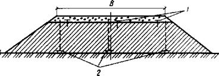
Рис. 1. Схема установки марок для наблюдений за осадкой
(пучением) грунтов земляного полотна и основания (1) и грунтов естественного
основания (2)
18. Для наблюдения за осадкой
(пучением) конструктивных слоев и основания земляного полотна из песчаных и
глинистых грунтов используют марки, изготовленные из металлического листа
толщиной 2 - 4 мм размерами 500´500
или 750´750 мм. Для наблюдения за
осадкой (пучением) скальных и крупнообломочных грунтов основания применяют
марки, изготовленные из металлического листа толщиной 2 - 4 мм размером 300´300 или 400´400 мм с приваренным в центре стержнем диаметром 10 - 15
мм. Длина стержня должна быть на 100 мм меньше глубины расположения
контролируемого горизонта грунтового массива (высоты насыпи из крупнообломочных
грунтов). Для предотвращения смерзания и сцепления марки с грунтом на стержень
надевают металлическую трубку диаметром 15 - 20 мм, заполненную солидолом.
Количество марок определяют по количеству контролируемых конструктивных и
грунтовых слоев в массиве. Марки устанавливают в пределах обочин (по оси при
облегченном и переходном типах дорожной одежды) на поверхности грунтовых слоев
со сдвижкой вдоль дороги на размер марки и составляют схему закрепления.
19. Нивелировочной основой
является мерзлотный репер (рис. 2
настоящего приложения), установленный в придорожной полосе. Он представляет
собой металлический стержень диаметром не менее 20 мм с приваренной на конце
крестовиной. Его погружают на глубину, соответствующую двойной мощности сезоннооттаивающего
слоя, но не менее чем на 1,5 м ниже верхнего горизонта вечномерзлых грунтов.
Для этого предварительно пробуривают скважину. В пределах мерзлой толщи ее
заливают глинистым раствором и на реперный стержень надевают обсадную трубу,
заполненную солидолом. После замерзания глинистого раствора зазор между трубой
и стенкой скважины засыпают сухим песком, а трубу закрывают заглушкой.
Выступающую часть репера, высота которой должна быть не меньше мощности
снежного покрова, закрывают коробом, заполненным теплоизоляционным материалом.
Наружную часть короба утепляют местным грунтом с присыпкой из мха или торфа. На
стенке трубы выбивают номер репера и делают соответствующие надписи, как и в
обычных условиях. Если репер устанавливают в шурфе, то металлический стержень
закрепляют (в нижней части) в бетонном блоке размером 40´40´40 см.
20. Отметку мерзлотного репера
принимают условной. Если вблизи пункта наблюдения имеется государственная
геодезическая нивелировочная основа с абсолютной отметкой, то отметку репера
привязывают к ней.
21. Марки нивелируют в теплое
время и в период промерзания оттаявшего слоя 2 раза в месяц (1-го и 16-го
числа) и в период промораживания грунтов - 1 раз в месяц (1-го числа) с
точностью до 1 мм.
Рис.
2. Схема постоянного мерзлотного репера:
1 - деревянный короб; 2 - торф или мох; 3 -
грунт; 4 - заглушка; 5 - стержень репера, заанкеренный в вечномерзлый грунт; 6
- труба; 7 - заполнение солидолом; 8 - засыпка песком; 9 - глинистый раствор
Измерение
влажности грунтов основания и земляного полотна
22. Влажность грунтов в
основании и земляном полотне, а также в естественных условиях измеряют
нейтронными влагомерами согласно ГОСТ 24181-80.
23. На постоянных наблюдательных
постах при наличии скважин с обсадными трубами для определения температуры
грунтов их используют и для замера влажности. Если таких скважин нет, то
устраивают две скважины (по одной на каждой обочине) на расстоянии 30 - 40 см
от температурных скважин. На таком же расстоянии от температурной скважины
замеряют влажность грунта в естественных условиях.
24. Глубина скважин для замера
влажности должна быть больше глубины сезоннооттаивающего слоя на 0,5 м. По
глубине влажность измеряют в трех горизонтах каждого конструктивного слоя или
одного вида грунта, но не реже чем через 0,5 м.
25. В зимний период влажность
грунтов определяют термостатно-весовым методом согласно ГОСТ
5180-84, для чего на указанных горизонтах бурением отбирают образцы грунта
в бюксы.
26. Периодичность замера
влажности одновременно с замером температуры грунта - 2 раза в месяц в теплый
период (при положительных температурах воздуха) и 1 раз - в холодный период
(при отрицательных температурах).
27. Наблюдения за источниками
увлажнения дорожных конструкций (атмосферными осадками, грунтовыми водами)
проводят на специально оборудованных для этой цели площадках, в скважинах или колодцах.
Организация метеорологических наблюдений на постах должна быть согласована с
УГМС СССР. Если вблизи поста расположены метеорологические станции УГМС СССР,
то данные о температуре, влажности воздуха, количестве и интенсивности осадков,
скорости и направлении ветра, высоте и плотности снежного покрова выбирают по
ежедневным наблюдениям, проводимым на станциях.
28. Уровень грунтовых вод
фиксируют в скважинах (шурфах), оборудованных обсадными трубами с отверстиями
для поступления воды. Измерения ведут от постоянной точки на поверхности земли
рейкой или хлопушкой, прикрепленной к металлической ленте. Данные фиксируют 1
раз в 5 дней, а также после выпадения сильных дождей.
Стационарные
наблюдения за наледями
29. Стационарные наблюдения
организуют для установления основных закономерностей изменения наледных
процессов в их взаимосвязи с природной средой. Работы проводят на специально
оборудованных полигонах, позволяющих:
изучать закономерности изменения
размеров наледей в годовом и многолетнем циклах;
устанавливать физические
закономерности наледных процессов на основе изучения режима наледей и факторов
их формирования;
определять характер
взаимодействия наледи с инженерными сооружениями и отрабатывать методы
противоналедной борьбы.
30. Программа работ на полигоне
включает следующие наблюдения:
ледомерные съемки (изучение
изменения морфометрических характеристик наледей, слоев стаивания и
нарастания);
метеорологические (наблюдения за
общей метеорологической обстановкой, микроклиматическими особенностями наледных
участков; измерение теплового баланса при образовании и таянии наледей);
гидрометрические (наблюдения за
режимом уровней, расходом и температурой водотоков, дебитом и температурой
наледеобразующих источников; измерение напора в промерзающих водоносных системах);
мерзлотно-гидрогеологические
(изучение режима генезиса подземных наледеобразуюших вод, их взаимодействия с
поверхностными водами, теплового режима наледи и подстилающих пород, строения и
свойств мерзлых и водоносных грунтов, динамики мерзлотных процессов);
инженерно-геологические (оценка
условий строительства на участке и влияния наледных процессов на инженерные
сооружения).
Полигоны организуют на наиболее
характерных наледях различного происхождения, а также на наледях,
представляющих собой наибольшую угрозу автомобильной дороге и другим инженерным
сооружениям.
Приложение
2
Рекомендуемое
Предварительную оценку местности
для определения оптимального варианта проложения трассы проводят c помощью ландшафтно-индикационного метода, который основан
на взаимосвязи геоморфологических и геокриологических факторов в едином
ландшафте, являющемся природным территориальным комплексом, однородным по
своему генезису, геологическим, геоморфологическим, климатическим
характеристикам и обладающим определенным сочетанием биологических условий.
Легко наблюдаемые компоненты ландшафта (растительность, рельеф) являются
четкими индикаторами геокриологических условий, что позволяет переходить от типизации
ландшафтов к предварительной типизации инженерно-геокриологических условий
осваиваемой территории.
Таблица ландшафтного
районирования (ландшафтно-индикационная) является оценочной и включает
информацию о рельефе, растительности, инженерно-геологических условиях
ландшафтов, характерных для зоны вечной мерзлоты. Ландшафты сгруппированы по
сложности инженерно-геологических условий (особо сложные, сложные, простые) для
различных растительных зон.
В процессе изысканий
устанавливают по карте основные типы ландшафтов, пересекаемых автомобильной
дорогой, описывают растительность и рельеф на каком-либо участке и сравнивают с
описанием, имеющимся в ландшафтно-индикационной таблице. Если описания
растительности и рельефа аналогичны, то аналогичны и мерзлотно-грунтовые условия
местности.
В качестве прогнозной
характеристики в таблице указаны
криогенные явления и процессы, которые могут развиваться на ландшафтном
комплексе, и указан предпочтительный принцип проектирования земляного полотна.
Индикационные таблицы следует
уточнять и дополнять в процессе изысканий.
С учетом формул (2) - (4) глубину сезонного
оттаивания конструкции насыпи определяют по методу эквивалентных слоев:
при двух слоях
(5)
при трех слоях
(6)
где h1,
h2 - толщина первого (верхнего) и второго слоев, м.
4. При проектировании насыпи по
второму принципу высоту насыпи рассчитывают по формуле
(7)
где Нд.с - мощность
деятельного (сезоннооттаивающего) слоя, устанавливаемая по данным изысканий или
расчетом по формулам (4) - (6) при естественной влажности
грунта, м;
е - относительная осадка
грунта основания после его оттаивания под нагрузкой доли единицы; определяется
согласно СНиП 2.02.04-88 или
по рис.5, 6 настоящего приложения;
Sс -
строительная осадка, зависящая от сезона производства земляных работ, м;
определяется согласно обязательному приложению 6.
Рис.5.
Относительная осадка е песчаных грунтов при оттаивании под нагрузкой 0,75
кгс/см2:
1 - песок крупный; 2 - песок средний; 3 - песок
мелкий и пылеватый
Рис.6. Относительная осадка е глинистых грунтов при оттаивании
под нагрузкой 0,75 кгс/см2
При наличии в основании насыпи
глинистых грунтов с крупнообломочными включениями относительную осадку,
определенную по графикам, корректируют с помощью коэффициента (табл.1 настоящего приложения).
При сливающейся мерзлоте
расчетную относительную осадку в при оттаивании под насыпью органических
грунтов принимают:
Торфяные грунты:
лесотопяная залежь
.........…………………………………………………………… 0,40
топяная залежь
............………………………………………………………………. 0,45
Ненарушенный мохово-торфяной
покров, включая почвенный слой ..........……. 0,30
Теплоизолирующие слои из торфа и
мха ………………………………………….. 0,35
Таблица 1
|
Грунт
|
Коэффициент, учитывающий содержание крупных
фракций, %
|
|
20 - 35
|
35 - 50
|
|
Супесь:
|
|
|
|
легкая
|
1,0
|
0,50
|
|
тяжелая пылеватая
|
0,8
|
0,60
|
|
Суглинок:
|
|
|
|
легкий
|
0,8
|
0,60
|
|
тяжелый
|
0,8
|
0,55
|
|
Глина
|
0,8
|
0,55
|
5. Если предусмотрено
предварительное оттаивание и осушение грунтов основания, то высоту насыпи
рассчитывают по формуле
(8)
где НТ - глубина
предварительного оттаивания грунтов основания до возведения земляного полотна,
м; определяют по картам (см. рис. 1 - 4
настоящего приложения) с учетом прогнозируемой влажности;
S1
- осадка грунтов основания после предварительного оттаивания под действием
собственного веса, м;
(9)
Ао -
коэффициент оттаивания грунтов; определяют экспериментально или принимают по табл. 2 настоящего приложения;
ао - коэффициент
уплотнения грунтов основания, см2/кгс; определяют экспериментально
или принимают по табл. 2
настоящего приложения;
gТ
- плотность талого грунта, кг/см3.
Таблица 2
|
Грунт
|
Ао
|
ао,
см2/кгс
|
|
Глина, суглинок тяжелый
пылеватый
|
0,05 - 0,08
|
0,07 - 0,12
|
|
Суглинок легкий, легкий
пылеватый
|
0,03 - 0,05
|
0,06 - 0,09
|
|
Суглинок с включением гравия
|
0,01 - 0,03
|
0,03 - 0,05
|
|
Супесь пылеватая, легкая
|
0,02 - 0,04
|
0,04 - 0,06
|
|
Песок пылеватый
|
0,01 - 0,02
|
0,02 - 0,03
|
Значения коэффициентов Ао
и ао для торфов определяют по рис.
7.
Рис. 7. Зависимость коэффициента уплотнения ао (1)
и оттаивания Ао (2) от влажности торфа Wотн
6. При использовании геотекстиля
в конструкциях насыпей их высоту, полученную по формулам (1), (7) настоящего приложения, умножают на коэффициент Кст
= 0,88, учитывающий охлаждающее влияние геотекстильной прослойки на глубину
оттаивания принятой конструкции насыпи.
Пример 1. Автомобильную дорогу в районе
пос. Ямбург (11 дорожно-климатическая подзона) проектируют по
первому принципу. Грунт в основании насыпи - суглинок тяжелый влажностью 40% и
с числом пластичности Jп = 17. Предусмотрено
возведение насыпи из мелкозернистого песка. Покрытие дороги сборное из
железобетонных плит типа ПАГ-14 толщиной 14 см, укладываемых на укрепленное
цементом песчаное основание толщиной 16 см. Требуется определить высоту насыпи.
Расчет ведут по формуле (1) настоящего
приложения.
Поскольку насыпь состоит из трех
слоев, то определяют глубину оттаивания каждого слоя:
верхнего (покрытие) - по формуле (2), где = 2,6 м (по рис. 1 настоящего приложения);
поправочный коэффициент на влажность (2%) КW
= 1,1; Кп = 1,37:
НС1
= 2,6×1,1×1,37 = 3,92 м;
нижнего (укрепленное песчаное
основание) - по формуле (3),
где =
2,6 м (по рис. 1 настоящего
приложения); поправочный коэффициент на влажность (6%) КW
= 0,98:
НС2
= 2,6×0,98 = 2,55 м;
нижнего (мелкозернистый песок
насыпи) - по формуле (4),
где =
2,4 м (по рис. 3 настоящего
приложения); поправочный коэффициент на влажность (8%) песчаного грунта,
подстилаемого глинистым, КW = 0,92:
НС3 = 2,4×0,92
= 2,2 м;
По формуле (6) настоящего приложения для трехслойной
конструкции
Если учесть, что толщина
дорожной одежды 0,3 м, то земляное полотно следует отсыпать на высоту
Н = 2,28
- 0,30 = 1,98 м.
Пример 2. Исходные данные те же, что и в примере 1. Насыпь проектируют по
второму принципу с прослойкой геотекстиля в нижней части. Насыпь возводится в
летний период. Требуется определить высоту насыпи.
Расчет ведут по формуле (7) настоящего
приложения.
Показатель Нк известен
(см. пример 1) - 2,28м. Так как
нет данных изысканий, определяют мощность деятельного (сезоннооттаивающего)
слоя: по рис. 2 настоящего
приложения находим = 1,8 м, поправочный коэффициент на
влажность (40%) КW = 0,85;
получаем:
Нд.с
= 1,8×0,85=1,53 м.
Допустимая осадка сборного
цементобетонного покрытия (см. п. 2
настоящего приложения) Sдоп = 0,02 м.
Относительная осадка при оттаивании глинистых грунтов основания при W =40% и Jп = l7 по графику (см. рис.
6) е = 0,07.
Строительная осадка согласно
расчетам по формуле (7) приложения 7 составляет Sc = 0,12 м.
Тогда высота насыпи
Высота насыпи с учетом слоя
геотекстиля
Н = 2,01×0,88=1,76 м.
Если учесть, что толщина
дорожной одежды 0,3 м, то земляное полотно следует отсыпать на высоту
Н =1,76
- 0,30 = 1,46 м.
Пример 3. Автомобильную дорогу в районе г. Салехарда проектируют
с асфальтобетонным покрытием. По данным изысканий, супесчаный грунт основания
имеет влажность 18%, а по данным лабораторных испытаний WТ
= 19%, gт = 1,6 т/м3.
После снятия мохорастительного
покрова с дорожной полосы и устройства водоотводных канав за год до начала
основных работ влажность супесчаного грунта основания в результате осушения
снизилась до 16%.
Дорожная одежда включает
двухслойный асфальтобетон толщиной 10 см на щебеночном основании толщиной 15
см, подстилаемом слоем гравийно-песчаной смеси толщиной 15 см. Земляное полотно
предусмотрено отсыпать из крупнозернистого песка. Требуется определить высоту
насыпи.
Расчет ведут по формуле (8)
настоящего приложения.
Поскольку насыпь состоит из трех
слоев, то определяют глубину оттаивания каждого слоя:
верхнего (покрытие) - по формуле (2), где = 3 м (по рис. 1
настоящего приложения), поправочный коэффициент на влажность (1%) KW = l,l;
Kп = 1,30:
НС1
= 3,0×1,1×1,30 = 4,3 м;
нижнего (основание) - по формуле (3), где = 3м (по рис. 1
настоящего приложения), поправочный коэффициент на влажность (5%) КW = 0,98:
НС2
= 3,0×0,98 = 2,94 м;
нижнего (грунт земляного
полотна) - по формуле (4),
где =
2,8 м (по рис. 3 настоящего
приложения поправочный коэффициент на влажность (8%) песчаного грунта,
подстилаемого глинистым, КW = 0,92:
НС3
= 2,8×0,92 = 2,56 м.
Определяют глубину
предварительного оттаивания грунта основания до возведения земляного полотна по
рис. 2 настоящего приложения,
поправочный коэффициент на влажность (16%) КW
= 0,96:
НТ
= 2,2×0,96 = 2,16 м
По формуле (6) настоящего приложения для трехслойной
конструкции
Допустимая осадка Sдоп = 0,04 м (см. п. 2 настоящего приложения).
Относительная осадка е = 0,05 по
графику (см. рис. 6 настоящего
приложения) при влажности 16% и Jп = 7.
Осадку грунтов S,
после предварительного оттаивания рассчитывают по формуле (9), определив по табл. 2 настоящего приложения коэффициенты Ао, и
ао (Ао = 0,03; ао = 0,005 м2/т):
Высота насыпи
Учитывая, что толщина дорожной
одежды 0,4 м, земляное полотно нужно отсыпать на высоту
Н = 1,56 - 0,40 = 1,16 м.
Приложение
5
Обязательное
1. Высоту снегонезаносимой
насыпи Нс.н - определяют
по формуле
(1)
где Кс - коэффициент, корректирующий
высоту снежного покрова на метеостанции с его высотой на трассе;
hр.сн
- расчетная высота снежного покрова, м, с учетом вероятности ее превышения 5%
по данным ближайшей метеостанции;
Dh - возвышение насыпи над снежным покровом, м; назначается
для районов с метелевой деятельностью в зависимости от категории дороги: II -
0,7 м, III - 0,6 м, IV - 0,5 м, V - 0,4 м.
Показатель Kс
определяют по данным снегомерных съемок по трассе во время зимних изысканий.
Для более надежной корреляции количество снегомерных съемок в зимний период
должно быть не менее 15.
При этом фиксируют даты
проведения снегомерных съемок и сравнивают их с результатами снегомерных съемок
на метеостанции в те же дни. Распределение снежного покрова по трассе
устанавливают с привязкой к пикетам, и результаты замеров заносят в журнал по
форме табл. 1 настоящего
приложения.
С учетом полученных данных
коэффициент Кс рассчитывают по формуле
(2)
где hс.т
- высота снежного покрова на трассе, м;
hс.м
- высота снежного покрова по метеоданным на дату снегомерных съемок на трассе,
м.
Таблица 1
|
Время наблюдения
|
Показатели снегомерных съемок
|
|
на трассе (пункт, км, ПК)
|
на метеостанции (пункт)
|
|
Год
|
Месяц
|
Число
|
Высота снежного покрова, м
|
Плотность снега, г/см3
|
Скорость ветра V1,0, м/с
|
Скорость ветра Vф, м/с
|
Румб ветра
|
Рельеф
|
Высота снежного покрова, м
|
Плотность снега, г/см3
|
Скорость ветра Vф, м/с
|
Румб ветра
|
Рельеф
|
|
1
|
2
|
3
|
4
|
5
|
6
|
7
|
8
|
9
|
10
|
11
|
12
|
13
|
14
|
|
|
|
|
|
|
|
|
|
|
|
|
|
|
Значение Кс осредняют и
вводят в формулу (1)
настоящего приложения. При невозможности проведения зимних изысканий значение корректирующего коэффициента Kс для склоновых участков местности разрешается
ориентировочно принимать по табл. 2
настоящего приложения.
2. В районах со слабо выраженной
метелевой деятельностью, где преимущественно распространены снегопады,
необходимое возвышение насыпи над снежным покровом Dh определяют из условия
размещения снега в придорожной полосе по графику, приведенному на рис. 1 настоящего приложения.
Таблица 2
|
Характеристика местности
|
Значения корректирующего коэффициента Кех)
|
|
Расположение трассы на склоне
|
Условия обтекания
|
Крутизна склона
|
|
Вблизи вершины
|
Наветренная сторона
|
1:15 - 1:50
|
0,30
|
|
Верхняя часть склона
|
То же
|
>1:15
|
0,55
|
|
³1:20
|
0,80
|
|
Нижняя часть склона
|
-²-
|
1:10 - 1:100
|
0,8 - 1,0
|
|
У основания склона
|
-²-
|
>1:30
|
1,2 - 1,3
|
|
1:100
|
2,0
|
|
Подветренная сторона
|
>1:40
|
>2,0
|
х)
Значения Кс даны
относительно высоты снежного покрова на открытых равнинных участках местности.
Рис.
1. Зависимость необходимого возвышения насыпи Dh от высоты снежного покрова из условия размещения снега,
убираемого с дороги. Цифры на кривых - категория дороги
Пример
расчета
Проектируется дорога III
категории с шириной земляного полотна поверху В = 12,0 м. Трасса проложена в
тундровом районе с объемом снегопереноса более 600 м3/м по
наветренному пологому склону косогора (крутизна 1:50). По данным ближайшей
метеостанции, расположенной на местности с равнинным рельефом, высота снежного
покрова в год изысканий была 45 см, а с вероятностью превышения 5% - 67 см.
По исходным данным, видно, что
район строительства характеризуется сильной метелево-ветровой деятельностью.
Требуется определить высоту насыпи по условиям снегонезаносимости.
Расчет ведут по формуле (1) настоящего
приложения.
Исходные параметры определяют
следующим образом: Dh
= 0,6 м - для дороги III категории; hр.см
= 0,67 м - с вероятностью превышения 5%. Значение Кс может быть
определено по табл. 2 настоящего
приложения (ввиду отсутствия данных снегомерной съемки на трассе): Кс
= 0,8.
Высота снегонезаносимой насыпи
Нс.н
= 0,8×0,67+0,6 = 1,15 м.
При отсутствии снегопереноса Dh (из условия
размещения снега на придорожной полосе) определяют по рис. 1 настоящего приложения для дороги III
категории:
Dh = 0,4м.
Тогда
Нс.н
= 0,8×0,67+0,4=0,95 м.
При проектировании принимают
большее значение высоты насыпи, т.е. Нс.м = 1,15 м.
Пример
расчета толщины снежного покрова с вероятностью превышения 5%
В районе строительства
автомобильной дороги устанавливают по данным наблюдений ближайшей метеостанции
в течение 10 лет максимальную высоту снежного покрова . Например, значения колебались от
36 до 65 см. Во время изысканий дороги высота снежного покрова на станции
равнялась 50 см.
Полученные значения располагают в
убывающем порядке и вычисляют период эмпирической повторяемости Тэ
(табл. 3 настоящего приложения).
Таблица 3
|
,
см
|
m
|
n
+ 0,4
|
m - 0,3
|
Тэ
|
|
65
|
1
|
-
|
0,7
|
14,9
|
|
61
|
2
|
-
|
1,7
|
6,1
|
|
55
|
3
|
-
|
2,7
|
3,9
|
|
50
|
4
|
-
|
3,7
|
2,8
|
|
48
|
5
|
-
|
4,7
|
2,2
|
|
45
|
6
|
10,4
|
5,7
|
1,8
|
|
43
|
7
|
-
|
6,7
|
1,6
|
|
40
|
8
|
-
|
7,7
|
1,4
|
|
39
|
9
|
-
|
8,7
|
1,2
|
|
36
|
10
|
-
|
9,7
|
1,1
|
На основании полученных данных и Тэ
строят в логарифмических координатах lg - lg Тэ эмпирическую кривую распределения
максимальных высот снежного покрова (рис. 2 настоящего приложения).
Рис. 2. Распределение максимальных высот снежного покрова
Принимая Тр = 20 лет
(5% обеспеченности), lg Тр = 1,3, по
полученному графику путем экстраполяции устанавливают, что lg = 1,83,
тогда по таблицам десятичных логарифмов = 67,6 см.
Приложение 6
Обязательное
1.
Прочность и устойчивость насыпи на промороженном основании (см. рис. 20) обеспечиваются при соблюдении
следующих условий:
; (1)
(2)
(3)
(4)
(5)
(6)
где Нн.п - толщина
намораживаемой плиты из торфа, м;
Нвоз - требуемое
возвышение торфяной плиты над расчетным уровнем воды на болоте, м; hвоз³0,2
м;
hп.в
- расчетная толщина слоя поверхностных или длительно (более 20 сут.) стоящих
вод на болоте, м;
Sо
- осадка талого слоя торфяной залежи под действием веса дорожной конструкции и
подвижной нагрузки, м;
Sт
- осадка намороженного слоя торфа при максимальном оттаивании его в период
строительства, м;
Sт=0,4hот.п;
hот.п
- глубина оттаивания намороженной торфяной плиты в период строительства, м;
hот.п³0,4 м;
Нпр - толщина промороженного
слоя торфяной залежи из условия обеспечения безопасности работ, м (табл. 1 настоящего приложения);
Нд - минимальная
толщина мерзлого основания из условия обеспечения деформационной устойчивости в
период строительства и стабилизации осадки, м (см. табл. 1 настоящего приложения);
Вп - требуемая ширина
намораживаемой торфяной плиты в период строительства, м;
- ширина минеральной части
насыпи понизу, м;
вб - ширина
бермы, м; вб³2
м;
Byс
- минимальная ширина плиты, при которой обеспечивается устойчивость конструкций
в период стабилизации осадок, м; на болотах 1 типа Вус³ 20 м, II и III
типов - Byс³24 м;
hгр
- толщина минеральной части насыпи под обочиной, м;
Hуп
- высота насыпи, при которой исключаются недопустимые упругие деформации
(табл. 2 настоящего приложения);
- глубина оттаивания
намороженной торфяной плиты сверху в средний многолетний год, м;
hдоп
- допустимая глубина оттаивания торфяной плиты сверху из условия обеспечения
требуемой прочности конструкции в процессе эксплуатации, м; для дорог II
категории - 0,1 - 0,15 м, III - 0,25 - 0,3 м, IV-V -
0,35 - 0,4 м;
hпр - глубина
промерзания многослойной дорожной конструкции сверху, м;
-
глубина оттаивания намороженной плиты снизу за счет притока тепла из талой
торфяной залежи, м; обычно £0,15
м;
hод
- толщина дорожной одежды, м;
- толщина слоя минерального
грунта под дорожной одеждой, м;
- глубина оттаивания
многослойной дорожной конструкции сверху в наиболее теплый (расчетный) год, м;
hпред
- минимальная толщина намороженной торфяной плиты из условия обеспечения
прочности и устойчивости конструкции в период ее эксплуатации, м (табл. 3 настоящего приложения).
Таблица 1
|
Сопротивление сдвигу
верхнего слоя торфяной залежи, кПа
|
Нд, м
|
Нпр, м
|
|
>9,8
|
1,00
|
0,40
|
|
4,9 - 9,8
|
1,15
|
0,45
|
|
<4,9
|
1,30
|
0,50
|
Таблица 2
|
Тип дорожной одежды
|
Минимальное значение Нуп, м, при
исходной мощности торфяной залежи, м
|
|
1
|
2
|
4
|
6
|
|
Капитальный
|
2,0
|
2,5
|
3,0
|
3,0
|
|
Облегченный
|
1,5
|
2,0
|
2,5
|
3,0
|
|
Переходный
|
1,2
|
1,5
|
2,0
|
2,5
|
2. Верхняя часть
насыпи из минерального грунта должна не только воспринимать нагрузки,
передающиеся через дорожную одежду, но и обеспечивать благоприятный тепловой
режим мерзлого основания: в летний период не допускать оттаивания торфяной
плиты на глубину более величины hдоп,
в зимний период допускать понижение температуры торфа в плите. Поэтому толщину
слоя минерального грунта следует определять по теплотехническому расчету,
руководствуясь рекомендациями пп. 4 - 7 настоящего приложения.
Таблица 3
|
Тип дорожной одежды
|
Значение hпред, м, в зависимости от
строительного типа болота
|
|
I
|
II
|
III
|
|
Капитальный
|
0,5
|
0,6
|
0,7
|
|
Облегченный
|
0,4
|
0,5
|
0,6
|
|
Переходный
|
0,3
|
0,4
|
0,5
|
Минимальную толщину слоя грунта под
дорожной одеждой назначают с учетом обеспечения
благоприятного теплового режима мерзлого основания и необходимого возвышения
низа дорожной одежды над поверхностью торфяной плиты по табл. 4 настоящего приложения.
Таблица 4
|
Среднегодовая
температура воздуха, минус °С
|
Значение , м, в зависимости от грунта и категории
дороги
|
|
крупнообломочного, песчаного
|
глинистого
|
|
II-III
|
IV-V
|
II-III
|
IV-V
|
|
<2
|
1,45
|
1,10
|
1,55
|
1,15
|
|
2 - 3
|
1,40
|
1,00
|
1,50
|
1,10
|
|
4 - 5
|
1,20
|
0,85
|
1,30
|
0,95
|
|
6 - 7
|
0,90
|
0,60
|
1,05
|
0,65
|
|
>7
|
0,75
|
0,60
|
0,85
|
0,60
|
3. Осадку талого слоя торфяной
залежи определяют с учетом распределяющего действия намороженной торфяной плиты
по формуле
(7)
где nт
- коэффициент, определяемый по рис. 1
настоящего приложения в зависимости от относительной толщины слоя торфа eт;
Нт.з - мощность
торфяной залежи, м;
р - удельная нагрузка на талое
торфяное основание, кПа;
Еср - усредненный
модуль деформации сжимаемых слоев (талых) торфяной залежи, кПа;
Рис.1.
Зависимость коэффициента nт от относительной
толщины слоя торфа eт
(8)
Нi,
Еi - мощность, м, и модуль деформации, кПа,
i -го слоя слабой толщи;
(9)
Ео - модуль
деформации, соответствующий осадке за 1 сут, кПа;
Тст - расчетное время
достижения условной стабилизации торфа; сут; принимается ориентировочно в
зависимости от глубины болота (табл. 5
настоящего приложения);
Таблица 5
|
Нт.з, м
|
2
|
3
|
4
|
6
|
8
|
|
Тст, сут
|
440
|
540
|
730
|
900
|
1050
|
mд
- коэффициент, учитывающий интенсивность накопления деформаций во времени;
принимается в зависимости от плотности скелета торфа gск (табл.
6 настоящего приложения).
Таблица 6
|
gск,
г/см3
|
0,05
|
0,10
|
0,15 - 0,20
|
0,25
|
|
mд
|
0,02
|
0,05
|
0,06
|
0,07
|
Удельную нагрузку р на торфяное
основание определяют по формуле
(10)
где вi,
hi, gi - соответственно ширина, толщина, м, и
плотность, т/м3, i-го слоя дорожной одежды;
- ширина земляного полотна
(минеральной части) соответственно по верху и по низу, м;
- плотность минерального грунта,
т/м3;
- плотность торфа, т/м3;
=1
т/м3;
ai
- относительная осадка i-го слоя торфа толщиной Hi, м; ориентировочно принимается в зависимости от
сопротивления торфа сдвигу по крыльчатке Сi
(табл. 7 настоящего приложения).
Таблица 7
|
Ci, кПа
|
10
|
10 - 5
|
5
|
|
ai
|
0,3
|
0,3 - 0,4
|
0,45
|
4. Для
выполнения теплотехнических расчетов необходимо установить:
расчетные климатические
характеристики района проектирования согласно п. 5 настоящего приложения;
расчетные теплофизические
характеристики слоев дорожной одежды и земляного полотна с учетом влажности и
плотности материалов согласно СНиП II-3-79*
для наиболее часто встречающихся строительных материалов теплофизические
характеристики приведены в табл. 8
настоящего приложения.
Таблица 8
|
Материал
|
Плотность, т/м3
|
Влажность, %
|
lТ,
Вт/(м×°С)
|
lм,
Вт/(м×°С)
|
СТ, кДж/(м3×°С)
|
См, кДж/(м3×°С)
|
Скрытая; теплота фазовых превращений Q,
кДж/м3
|
|
Железобетон
|
2,50
|
2 - 5
|
2,04
|
2,26
|
2093
|
2050
|
16744
|
|
Цементобетон
|
2,20
|
3 - 6
|
1,86
|
2,16
|
2218
|
2093
|
18837
|
|
Асфальтобетон
|
2,15
|
2 - 3
|
1,39
|
1,63
|
3560
|
3433
|
14232
|
|
Щебень
|
2,00
|
10
|
2,67
|
3,37
|
2135
|
2093
|
66976
|
|
Гравий
|
2,00
|
10
|
1,98
|
2,44
|
2386
|
2218
|
66976
|
|
Песок
|
1,80
|
10
|
1,51
|
1,86
|
2009
|
1674
|
60278
|
|
Супесь легкая
|
1,80
|
17
|
1,72
|
1,86
|
2595
|
2009
|
68650
|
|
Суглинок легкий пылеватый
|
1,80
|
18
|
1,44
|
1,74
|
2720
|
2050
|
53580
|
|
Суглинок тяжелый пылеватый
|
1,80
|
20
|
1,51
|
1,80
|
2846
|
2093
|
65302
|
|
Глина
|
1,80
|
22
|
1,57
|
1,92
|
2930
|
2135
|
44539
|
|
Торф в нижней части насыпи
|
1,00
|
-
|
0,52
|
0,81
|
-
|
-
|
284648
|
5. Основными
климатическими характеристиками являются:
приведенная температура воздуха:
средняя за каждый месяц (tпрi); средняя за летний (tп.л)
и зимний (tп.з) периоды года;
продолжительность периодов с
положительной (tл) и
отрицательной (tз)
приведенными температурами воздуха.
Значения tпрi (°С) определяют по формуле
(11)
где - среднемесячная температура
воздуха, °С; принимается по
климатическим справочникам или СНиП 2.01.01-82;
- поправка к среднемесячным
температурам воздуха за счет солнечной радиации, °С;
- коэффициент, значения которого
определяют по рис. 2 настоящего
приложения в зависимости от отражательной способности А (альбедо)
поверхности: для цементобетонных покрытий А = 25¸30% с применением органических вяжущих - А = 10¸20%, щебеночных и гравийных покрытий -
А = 10 - 15%, грунтовых поверхностей - А = 10¸20%;
-
среднемесячная суммарная солнечная радиация, Вт/ (см2×мес); принимается по табл. 9 настоящего приложения;
- коэффициент теплообмена на
поверхности покрытия; = 23,2 Вт/(м2×°С).
Рис. 2. Зависимость коэффициента от отражательной способности
поверхности А
Значения tп.л
или tп.з определяют по формуле
(12)
где , -
коэффициенты, вычисляемые по формулам:
(13)
и - среднемесячные приведенные
температуры воздуха (по модулю) для месяцев, приходящихся соответственно на
конец и начало зимнего сезона (при определении tп.л)
или конец и начало летнего сезона (при определении tп.з);
n - число
календарных месяцев в теплом или холодном сезоне года.
Таблица 9
|
Месяц
|
Среднемесячная суммарная солнечная радиация, Вт/(см×мес), при широте местности, град
|
|
54
|
56
|
58
|
60
|
62
|
64
|
66
|
68
|
|
I
|
2,6
|
2,1
|
1,7
|
1,2
|
0,7
|
0,6
|
0,2
|
0,1
|
|
II
|
4,8
|
4,4
|
3,6
|
3,3
|
2,6
|
2,3
|
1,7
|
1,5
|
|
III
|
10,5
|
9,5
|
9,0
|
8,4
|
7,9
|
6,8
|
6,8
|
6,2
|
|
IV
|
12,8
|
12,8
|
13,3
|
13,3
|
13,1
|
12,8
|
13,3
|
13,3
|
|
V
|
16,3
|
16,3
|
16,3
|
16,3
|
16,3
|
16,8
|
16,8
|
16,8
|
|
VI
|
18,0
|
18,0
|
18,8
|
18,0
|
18,0
|
18,0
|
17,4
|
17,4
|
|
VII
|
17,4
|
17,2
|
17,2
|
16,3
|
16,3
|
16,3
|
16,3
|
16,3
|
|
VIII
|
13,9
|
13,1
|
12,8
|
12,8
|
12,2
|
12,0
|
11,9
|
10,5
|
|
IX
|
9,3
|
8,7
|
8,1
|
7,6
|
7,0
|
6,4
|
4,9
|
4,6
|
|
X
|
5,8
|
4,6
|
3,7
|
3,7
|
3,5
|
3,3
|
2,8
|
2,3
|
|
XI
|
2,9
|
2,3
|
2,0
|
1,7
|
1,2
|
1,2
|
0,6
|
0,4
|
|
XII
|
2,1
|
1,7
|
1,0
|
0,6
|
0,5
|
0,5
|
0,4
|
0
|
Продолжительность сезонов tл и tз (ч) определяют по формуле
(14)
6. Расчет глубины оттаивания
земляного полотна и торфяной плиты выполняют в следующем порядке:
а) устанавливают
продолжительность теплого периода года tл
и среднюю за этот период приведенную температуру tп.л,
используя формулы (14) и (12) настоящего приложения;
б) определяют для принятой конструкции
дорожной одежды и вида грунта земляного полотна расчетные значения
коэффициентов теплопроводности lт
и объемную теплоемкость материалов в талом состоянии по табл. 8 настоящего приложения;
в) вычисляют значения S, m, Kг:
(15)
где hi,
lTi
- соответственно толщина, м, и коэффициент теплопроводности, Вт/(м×°С), i-го конструктивного слоя
дорожной одежды;
Т - температура льдообразования,
°С, принимаемая по СНиП 2.02.04-88;
г) по известным значениям m и Кг используя графики на рис. 3 настоящего приложения, находят
глубину оттаивания однородного массива минерального грунта h
по оси дороги;
д) приняв по табл. 4 настоящего приложения
значение hгр, определяют глубину оттаивания
намороженной торфяной плиты сверху:
(16)
где mn
- коэффициент эквивалентного приведения (по условиям оттаивания-промерзания)
глубины оттаивания торфяной насыпи к грунту земляного полотна: для песков mn = 3,9, супесей - mn
= 4,0, суглинков легких - mn = 4,1,
суглинков тяжелых и глин - mn = 4,2.
Если принять = hдоп, можно определить толщину слоя
минерального грунта под дорожной одеждой:
(17)
7. Расчет
глубины промерзания дорожной конструкции выполняют в следующем порядке:
а) устанавливают
продолжительность холодного периода года tз
и среднюю за этот период приведенную температуру tп.з,
используя формулы (14) и (12) настоящего приложения;
Рис. 3. Номограмма для определения глубины оттаивания
(промерзания) грунта h при малых (а) и больших (б)
значениях Кг
б) определяют для принятой
конструкции дорожной одежды и вида грунта земляного полотна расчетные значения
коэффициента теплопроводности lм
и объемной теплоемкости См материалов в мерзлом состоянии по табл. 8 настоящего приложения;
в) вычисляют значения S, m, Кг:
(18)
г) по известным значениям m и Кг, используя номограммы рис. 3 настоящего приложения, находят
глубину промерзания однородного массива минерального грунта h по оси дороги и
вычисляют глубину промерзания торфяной плиты сверху:
Если , то условие (5) будет выполнено.
Пример
расчета
Требуется запроектировать
автомобильную дорогу III категории для населенного
пункта, расположенного на 62° с.ш. (среднегодовая температура воздуха минус
3,3°С). Конструкция дорожной одежды: покрытие из плит ПАГ-14 (h1
= 0,14 м), основание из гравийного материала (h2
= 0,2 м). Для отсыпки насыпи используется супесь легкая (W
= 17%, gгр = 1,80 т/м3).
Дорога пересекает болото 1 типа,
мощность торфяной залежи Нт.з = 4 м, торф верховой. Показатели
торфяных грунтов по глубине болота:
до 2 м - влажность 700%,.
плотность скелета gск1 =
0,13 г/см3, сопротивление сдвигу по крыльчатке Скр1 =
15 кПа;
от 2 до 4 м - влажность 800% , gск2 = 0,1г/см3, Скр2
= 10 кПа.
Параметры земляного полотна
назначают предварительно согласно рекомендациям, изложенным в пп. 1 - 2
настоящего приложения: ширина земляного полотна для дороги III
категории =
12 м; при среднегодовой температуре воздуха минус 3,3°С согласно табл. 4 настоящего приложения толщина
слоя грунта из легкой супеси принята ориентировочно = l,l м. Тогда
м.
Толщина промороженного слоя
торфяной залежи Нпр = 0,4 м назначена по табл. 1 настоящего приложения из условия обеспечения
безопасности ведения работ. Болото не обводнено, следовательно, hп.в = 0, hвоз
= 0,3 м.
Для определения толщины
намораживаемой плиты Нн.п значения So
и Sт приняты ориентировочно:
Согласно условию (1) настоящего
приложения
Нн.п=0,3+0+1,1+0,16=1,56
м.
При такой толщине плиты условие (2) будет
удовлетворено: 1,56+0,4 = 1,96 >Нд = 1,0 м (см. табл. 1 настоящего приложения).
Ширина намораживаемой плиты Вп
определена из условия (3)
при вб - 2 м:
Вп
= 16,3+2×2 = 21 м >Вус.
Для принятых предварительно
параметров земляного полотна условие
(4) будет удовлетворено: 1,1+0,4+1,56 = 3,06 м>Нуп = 3,0 м
(см. табл. 2 настоящего
приложения).
Расчет осадки талого слоя
торфяной залежи So производят по формуле (7), предварительно
установив значения n, р , Еср:
а) коэффициент n
= 0,18 по рис. 1 настоящего
приложения при
б) удельную нагрузку на торфяное
основание р определяют по формуле
(10) настоящего приложения:
р=[9,8(6×0,14×2,5+6×0,2×2,0)+0,5(12,0+16,3)×9,8×1,1×2,05+21×9,8×1,0(0,3+1,1)]/21=31 кПа;
в) усредненный модуль деформации
рассчитывают по формуле (8)
настоящего приложения, предварительно установив значения Е1 и Е2
по формуле (9):
Подставив в формулу (7) настоящего
приложения значения n, p и Еcр, определяют осадку талого слоя торфяной залежи
Среднемесячные температуры
воздуха для заданного пункта, (среднемесячные значения суммарной солнечной
радиации Qc, а также среднемесячные
приведенные температуры воздуха tпрi, рассчитанные по формуле (11), приведены в табл. 10 настоящего приложения. При расчете tпрi принято: lт = 23,2 Вт/(м2×°С);
КА = 0,5 по графику (см. рис.
2) при А = 25% (цементобетонное покрытие).
Таблица 10
|
Месяц
|
tв,°С
|
Qс, Вт/(см2×°С)
|
tпр,°C
|
|
I
|
-22,2
|
0,7
|
-22,2
|
|
II
|
-19,3
|
2,6
|
-18,8
|
|
III
|
-12,8
|
7,9
|
-10,8
|
|
IV
|
-4 4
|
13,1
|
-0,9
|
|
V
|
3,6
|
16,3
|
8,1
|
|
VI
|
12,6
|
18,0
|
17,4
|
|
VII
|
16,8
|
16,3
|
21,3
|
|
VIII
|
13,9
|
12,2
|
17,2
|
|
IX
|
7,4
|
7,0
|
9,2
|
|
X
|
-1,7
|
3,5
|
-1,0
|
|
XI
|
-13,3
|
1,2
|
-13,3
|
|
XII
|
-20,2
|
0,5
|
-20,2
|
|
За год
|
-3,3
|
-
|
-
|
По данным табл. 10 определяют средние приведенные температуры
воздуха за летний (tп.л) и зимний (tп.з) периоды по формуле (12) настоящего приложения, предварительно
рассчитав коэффициенты Ал(з) и Вл(з) по формулам (13) настоящего
приложения"
По формуле (14) определяют продолжительность периодов tл и tз с положительными и отрицательными температурами
воздуха:
tл = 730[0,9+(5-1)+0,9] = 4234 ч;
tз =
730[0,1+(7-1)+0,1] = 4526 ч.
Проверка: tл + tз = 24×365
= 8760 ч = 4234 + 4526 = 8760 ч.
Теплотехнические характеристики
материалов дорожной конструкции определены по табл. 8 и приведены в табл. 11 настоящего приложения.
Для расчета глубины оттаивания
намороженной торфяной плиты предварительно вычисляют по формулам (15) значения S, m, Kг.
Таблица 11
|
Материал
|
hi, м
|
lТi,
Вт/(м×°С)
|
lмi,
Вт/(м×°С)
|
СТi,
кДж/(м3×°С)
|
Смi,
кДж/(м3×°С)
|
Q,
кДж/м3
|
|
Железобетон
|
0,14
|
2,04
|
2,26
|
2093
|
2050
|
16744
|
|
Гравий
|
0,20
|
1,98
|
2,44
|
2386
|
2218
|
66976
|
|
Супесь легкая
|
-
|
1,72
|
1,86
|
2595
|
2009
|
68650
|
|
Торфяная плита
|
-
|
0,52
|
0,81
|
-
|
-
|
284648
|
По номограмме рис. 3 настоящего приложения при m = 2,80 м-1 и Кг =
17,7 находят глубину оттаивания однородного массива легкой супеси h = 2,75 м. При = 1,1 м глубина оттаивания торфяной плиты
сверху по формуле (16) настоящего приложения составит
что превышает допустимую глубину из
условия обеспечения требуемой прочности конструкции (см. п. 1 настоящего приложения). Поэтому следует увеличить толщину
слоя минерального грунта, определив его при условии
= 2,75-4×0,35 = 1,35 м.
Для проверки условия (5) настоящего
приложения необходимо произвести расчет глубины промерзания конструкции,
предварительно вычислив значения S, m, Кг.
По номограмме рис. 3 настоящего приложения при m = 3 м-1 и Кг = 20,6 находят
глубину промерзания однородного массива из супеси h =3,1 м и вычисляют толщину
промерзания торфяной плиты под слоем грунта = 1,35 м:
поэтому условие (5) будет
удовлетворено.
В связи с тем, что толщина слоя минерального
грунта по теплотехническому расчету = 1,35 м больше, чем была принята
предварительно ( = l,l м), необходимо уточнить параметры дороги:
ширина насыпи понизу
= 12,0+2×1,5 (1,35+0,34) = 17,1 м;
ширина намораживаемой плиты
Уточнение осадки Sо:
при по графику рис. 1 nт
= 0,17;
р = [9,8(6×0,14×2,5+6×0,2×2)+0,5(12+17,1)×9,8×1,35×2,5+24×9,8×1×(0,3+0,82)]/24=30,1 кПа;
Толщина намораживаемой плиты
согласно условию (1)
составит
Нн.п
= 0,86+0,16+0,3+0 = 1,32 м.
Окончательно конструктивные
параметры дороги (см. рис. 20) приняты: Нн.п
= 1,32 м;  = 12,0 м; = 17,1 м; Нпр
= 0,4; Вп = 24 м; = l,35 м; So = 0,86 м„ Sт
= 0,16 м; =
0,35 м; =
0,1 м. При этих параметрах условия
(1) - (6) выполнены, и
расчет считается законченным.
= 12,0 м; = 17,1 м; Нпр
= 0,4; Вп = 24 м; = l,35 м; So = 0,86 м„ Sт
= 0,16 м; =
0,35 м; =
0,1 м. При этих параметрах условия
(1) - (6) выполнены, и
расчет считается законченным.
Приложение 7
Обязательное
1. В расчетах строительной
осадки грунтов основания при сооружении насыпей следует учитывать время
производства работ (лето, зима) и технологию возведения земляного полотна (на
полную высоту или послойно).
2. На участках, где земляное
полотно запроектировано по первому принципу, насыпь возводят на полную высоту в
зимний период на промерзших грунтах деятельного слоя, которые в летний период
не оттаивают. Строительная осадка в таких случаях протекает в результате
обжатия мерзлого мохорастительного покрова под весом насыпи. Величина обжатия
(строительная осадка) Sc = 0,5hм.п, где hм.п.
- мощность (толщина) мохорастительного покрова, см.
3. На участках, где земляное
полотно запроектировано по второму принципу, насыпь возводят на полную высоту
как в зимний, так и в летний период.
При зимней отсыпке строительную
осадку Sс определяют по следующим схемам:
насыпь возводят на полную высоту
из сыпучемерзлого песчаного или крупнообломочного грунта на промерзших грунтах
деятельного слоя:
Sc=Sг.о,
(1)
где Sг.о
- осадка грунтов основания в результате их оттаивания на расчетную глубину и
уплотнения в пределах этой глубины под действием собственного веса, веса насыпи
и подвижной нагрузки, см;
насыпь возводят на полную высоту
из сухо- и твердомерзлых грунтов, а также из талых песчаных или глинистых с
комьями мерзлых грунтов на промерзших грунтах деятельного слоя:
Sc=Sт.н+Sг.о,
(2)
где Sт.н
- осадка в результате оттаивания и уплотнения грунта в теле насыпи, см.
При летней отсыпке строительную
осадку определяют по схеме послойного возведения насыпи на оттаивающих грунтах
деятельного слоя. Общая осадка слагается из суммы осадок, протекающих при
отсыпке каждого слоя и доведении насыпи до проектной отметки:
Sc=Sг.о1+ Sг.о2+ Sг.о3+…+
Sг.оi,
(3)
где Sг.о1,
Sг.о2, Sг.о3,
…, Sг.оi
- осадка грунтов основания соответственно при отсыпке первого, второго,
третьего и i -го слоев насыпи.
4. Строительную осадку грунтов в
теле насыпи на стадии проектирования определяют по формуле
(4)
где Нг - прогнозируемая
глубина сезонного оттаивания грунта насыпи, см;
Ку - прогнозируемый
минимальный коэффициент уплотнения сухо- или твердомерзлого грунта, принимаемый
по табл. 10 настоящих норм;
Кот- прогнозируемый
минимальный коэффициент уплотнения после оттаивания сухо- или твердомерзлого
грунта, принимаемый по табл. 10
настоящих норм.
Строительную осадку тела насыпи
на стадии строительства уточняют по формуле (5) настоящих норм (см. п. 3.67).
5. Строительную осадку грунтов
основания при высоте насыпей до 2 м можно ориентировочно определять (на стадии
рекогносцировочных изысканий) по формуле
(5)
где е - основание натурального
логарифма; е = 2,72;
ам, вм -
коэффициенты, учитывающие наличие или отсутствие мохорастительного покрова
толщиной до 20 см на поверхности основания; для участков трассы с ненарушенным
мохорастительным покровом ам = 3,81, вм = 1,95, без
мохорастительного покрова или с сильно нарушенным - ам = 1,05, вм
= 3,55;
Wотн
- естественная влажность грунта основания, доли влажности на границе текучести.
Wотн = 0,4¸1,2
6. Строительную осадку глинистых
грунтов основания на стадии составления рабочих чертежей следует определять в
зависимости от типа местности по формулам:
для 1-го типа
(6)
для 2-го типа
(7)
где aо
- коэффициент уплотнения грунтов основания (см. обязательное приложение 4);
Ао - коэффициент
оттаивания грунтов основания (см. обязательное приложение 4);
hг.о
- расчетная глубина оттаивания грунтов основания, см;
ро - удельное
давление на поверхность грунта основания (от подвижной нагрузки и веса насыпи);
для автомобильных дорог ро = 0,0735 МПа, при использовании
геотекстиля в нижней части насыпи - ро = 0,049 МПа;
g
- плотность грунта основания, кг/см3.
eо
- начальный коэффициент пористости грунта основания, доли единицы.
7. Строительную осадку торфяного
грунта основания следует определять по формуле
(8)
где е - относительная осадка
торфяного грунта основания при оттаивании под нагрузкой; устанавливают при
инженерных изысканиях по ГОСТ 23908-79*
и ГОСТ 23253-78.
Допускается принимать е по табл. 1 настоящего приложения.
Таблица 1
|
Суммарная влажность
грунта, доли единицы
|
Плотность, т/м3
|
Значение е при давлении, МПа
|
|
|
грунта
|
сухого грунта
|
|
|
0,01
|
0,025
|
0,05
|
0,075
|
0,1
|
|
|
2
|
1,02
|
0,34
|
0,13
|
0,19
|
0,27
|
0,31
|
0,38
|
|
|
4
|
0,98
|
0,20
|
0,20
|
0,27
|
0,37
|
0,41
|
0,44
|
|
|
6
|
0,95
|
0,13
|
0,24
|
0,32
|
0,43
|
0,48
|
0,52
|
|
|
8
|
0,92
|
0,10
|
0,28
|
0,37
|
0,48
|
0,54
|
0,58
|
|
|
12
|
0,89
|
0,07
|
0,31
|
0,41
|
0,53
|
0,60
|
0,65
|
|
|
16
|
0,86
|
0,05
|
0,33
|
0,43
|
0,57
|
0,64
|
0,69
|
|
8. Строительную осадку оттаивающих
грунтов основания при послойной отсыпке насыпи в летний период определяют по
следующим формулам:
(9)
(10)
(11)
где Ам.п, Аг.о
- коэффициент оттаивания соответственно мохорастительного покрова и грунта
основания;
ам.п, аг.о
- коэффициент уплотнения соответственно мохорастительного покрова и грунта
основания;
Ро - нагрузка на
основание от веса уплотняющих средств и веса насыпи, МПа;
hг.о1,
hг.о2 - толщина слоя грунта основания,
оттаивающего соответственно при отсыпке второго и третьего слоев насыпи, см.
Значения Ам.п, ам.п,
Аг.о аг.о принимают согласно приложению 4.
Учитывая, что влажность грунтов основания после уплотнения уменьшается, в
расчетах по формулам (10)
и (11) настоящего
приложения следует принимать = 0,7; = 0,8.
Давление на оттаивающие грунты
основания определяют по формулам:
а) от веса отсыпанного слоя
насыпи и собственного веса оттаивающего грунта основания:
(12)
где - плотность грунта насыпи, кг/см3;
hн
- толщина (в уплотненном состоянии) отсыпанного слоя насыпи, см;
- плотность мохорастительного
покрова (торфа), кг/м3;
- толщина мохорастительного
покрова, см;
б) от уплотняющих средств:
(13)
где s
- напряжения, возникающие в слое грунта от уплотняющих средств на расчетной
глубине (принимают по табл. 2
настоящего приложения), Па;
Рп - давление в
пневматических шинах уплотняющих средств, Па;
x - коэффициент динамичности; x = 1,5.
Глубину оттаивания hг.о грунтов основания, увеличивающуюся по мере
производства земляных работ, определяют непосредственными измерениями или
ориентировочно рассчитывают по формуле
(14)
где Vг - скорость
оттаивания грунта, см/сут; принимают по табл.
3 настоящего приложения;
Тот.г - время
оттаивания слоя грунта, сут; принимают в зависимости от сроков отсыпки слоев
земляного полотна.
Таблица 2
|
Относительная глубинах)
y
|
Напряжение s, 104
Па
|
Относительная глубинах) y
|
Напряжение s, 104
Па
|
|
0
|
9,80
|
2,5
|
3,230
|
|
0,25
|
9,80
|
3,0
|
2,450
|
|
0,50
|
10,39
|
4,0
|
1,470
|
|
0,75
|
10,49
|
5,0
|
0,980
|
|
1,00
|
9,51
|
7,0
|
0,490
|
|
1,50
|
6,66
|
10,0
|
0,345
|
|
2,00
|
4,61
|
20,0
|
0,098
|
х)Относительная глубина y равна
отношению расстояния от поверхности насыпи до расчетного сечения nр к радиусу круга, равновеликого площади отпечатка
спаренного колеса r.
Таблица 3
|
Грунт
|
Скорость оттаивания, см/сут, в
дорожно-климатической подзоне
|
|
11
|
12
|
13
|
|
Супесь
|
3,0 - 4,3
|
3,5 - 4,8
|
5,7 - 7,2
|
|
Суглинок
|
2,3 - 3,4
|
2,9 - 4,3
|
4,4 - 6,8
|
|
Глина
|
1,4 - 3,0
|
2,4 - 4,0
|
2,8 - 5,2
|
Пример
1. На местности 2-го типа проектируют насыпь высотой 2 м с возведением на
полную высоту в зимний период из крупнообломочного грунта. Естественное
основание представлено глинистым грунтом влажностью 0,9Wт.
Толщина слоя мохорастительного покрова 15 см.
Требуется определить
ориентировочную строительную осадку грунтов основания.
Расчет ведут по формуле (5) настоящего
приложения:
При логарифмировании получаем
lg Sг.о = lg 3,31+1,95×0,9×0,43429.
По таблицам десятичных
логарифмов мантисса lg 3,31 = 0,5197, тогда
lg Sг.о = 0,5197+0,7627=1,2823.
По таблицам десятичных
антилогарифмов находим Sг.о = 19,2 см.
Пример 2. При тех же исходных данных, но при отсутствии
мохорастительного покрова требуется определить строительную осадку грунтов
основания.
Расчет ведут по формуле (5) настоящего
приложения:
lg Sг.о = lg 1,05+3,55×0,9×0,43429.
lg Sг.о = 0,02+1,3885=1,4085.
По таблицам
десятичных антилогарифмов Sг.o = 25,62 см.
Пример 3. На 1-м типе местности проектируют насыпь высотой 1 м с
возведением в зимний период из сыпучемерзлого песка. Естественное основание
представлено легкой супесью влажностью 0,65Wт.
Характеристики грунта основания,
полученные по материалам изысканий: Wест =
15,8%; g = 1,68 т/м3; Wт = 24,6%; eо
= 0,83.
Согласно теплотехническому
расчету глубина оттаивания грунта основания hг.о
составит 2 м.
Требуется определить
строительную осадку грунта основания.
Расчет ведут по формуле (6) настоящего
приложения.
По приложению 4 ао
= 0,408 МПа-1. Тогда
Пример 4. На местности 2-го типа проектируют насыпь высотой 2 м с
возведением в зимний период на полную высоту из сыпучемерзлого песчаного
грунта. Естественное основание представлено глиной пылеватой с влажностью 0,88Wт. Характеристики грунта основания, полученные по
материалам изысканий: Wест = 28,2%; g = 1,91 т/м3; eо = 1,04.
Согласно теплотехническому
расчету глубина оттаивания грунта основания hг.о
составит 1 м.
Требуется определить
строительную осадку грунта основания, если в нижней части насыпи предусмотрен
слой из геотекстиля.
Расчет ведут по формуле (7) настоящего
приложения.
По приложению 4 Ао
= 0,06, ао = 1,02 МПа-1.
Тогда
Пример 5. На вечномерзлых торфяниках проектируют насыпь высотой
1,5 м с возведением на полную высоту в зимний период. Характеристики торфяника,
полученные при изысканиях: Wс = 6%; g = 0,13 т/м3,
Согласно теплотехническому
расчету глубина оттаивания hг.о торфа составит
1 м.
Требуется определить
строительную осадку торфяного грунта.
Расчет ведут по формуле (8) настоящего
приложения.
Из табл. 1 при Wс = 6% и g = 0,13т/м3 получаем при давлении
насыпи 0,01 МПа е = 0,24:
Приложение 8
Обязательное
1. При проектировании и строительстве
водопропускных труб в зоне вечной мерзлоты необходимо руководствоваться СНиП 2.05.03-84, СНиП
III-43-75, "Инструкцией по проектированию и
постройке металлических гофрированных водопропускных труб" ВСН
176-78 (ЦНИИС. М., 1979) и Дополнением № 1 к ней, а также настоящими
нормами.
2. На дорогах 1 - V категорий
предусматривают трубы капитального типа: бетонные, железобетонные и
металлические гофрированные. Материалы бетонных и железобетонных труб должны
соответствовать требованиям "Указаний по проектированию и строительству
железобетонных и бетонных конструкций автодорожных и городских мостов и труб,
предназначенных для эксплуатации в условиях низких температур (северное
исполнение)" ВСН 155-69 (М., 1969), а металлических гофрированных труб - ВСН
176-78.
3. Применение труб
предусматривают преимущественно на периодически действующих водотоках.
Металлические гофрированные трубы допускается использовать также на постоянных
водотоках при отсутствии наледеобразования на дорогах III
- V категорий.
4. Отверстия труб рассчитывают
по безнапорному режиму. Минимальное отверстие и высоту труб в свету назначают
не менее 1,5 м.
Многоочковые трубы допускается
проектировать с расположением очков в разных уровнях, размещая часть из них
(как правило, одно) в уровне русла водотока, а остальные - на отметке выше
уровня меженных вод. Количество рядом уложенных труб не ограничено.
5. При проектировании
водопропускных труб предусматривают использование грунтов в основаниях по
следующим принципам:
первый - обеспечить поднятие
верхнего горизонта вечной мерзлоты до подошвы фундамента и сохранять его на
этом уровне в течение всего периода эксплуатации сооружения;
второй - допускается образование
талой прослойки между подошвой фундамента и верхним горизонтом вечной мерзлоты;
третий - использовать грунты
основания в естественном талом состоянии.
6. Трубы следует проектировать,
как правило, исходя из условия наименьшего нарушения естественного состояния
мерзлых грунтов.
Во всех случаях, когда это
возможно, необходимо избегать устройства котлованов, приемных колодцев,
глубоких бетонных, железобетонных и других экранов, различных врезов в мерзлых
грунтах и предусматривать подготовку основания подсыпкой с ее планировкой.
7. На
водотоках, основание которых в пределах двойной мощности сезоннооттаивающего
слоя представлено непросадочными грунтами, проектируют бесфундаментные трубы.
8. На водотоках,
характеризующихся наличием слоя просадочных при оттаивании грунтов мощностью не
более 2 м, предпочтение отдают бесфундаментным трубам или трубам с фундаментами
мелкого заложения при условии, что суммарная величина осадки грунтов основания
может быть компенсирована величиной строительного подъема. При невыполнении
этого условия предусматривают полную или частичную замену слабого грунта
грунтовой подушкой из щебеночных, гравийных или гравийно-песчаных материалов,
имеющих оптимальную или близкую к ней влажность.
Размеры грунтовых подушек для
бетонных и железобетонных труб принимают следующие:
а) длина на 1 - 1,5 м больше
общей длины трубы с оголовками;
б) ширина не менее () для
одноочковой трубы и не менее () для n - очковой
трубы (где Нр - расчетная глубина оттаивания (промерзания) грунта
под трубой, м; dтр - диаметр трубы,
м; втр - расстояние между трубами, м).
Размеры подушек для
металлических гофрированных труб принимают по ВСН
176-78.
9. На водотоках,
характеризующихся наличием слоя сильнопросадочных и просадочных грунтов
мощностью более 2 м, предусматривают свайные фундаменты. Массивные бетонные
фундаменты допускают только при соответствующем обосновании при отсутствии
подруслового стока.
10. Минимальную глубину
заложения фундаментов устанавливают в зависимости от расчетной глубины
сезонного оттаивания грунтов основания Нр, их свойств (по СНиП 2.05.03-84) и
типа фундамента:
свайного Нр +2 м, но
не менее 3 м;
массивного бетонного - Нр,
но не менее 1,5 м:
где - нормативная глубина сезонного
оттаивания грунта, м; устанавливается по обязательному приложению 4;
mt
- коэффициент теплового влияния конструкций на грунт основания, принимаемый для
фундамента: массивного бетонного - 0,8, свайного, с плитой на поверхности
грунта - 1,0;
Кw
- поправочный коэффициент к нормативной глубине оттаивания грунта при его
естественной влажности, устанавливаемой по обязательному приложению 4.
11. При проектировании труб в 11
дорожно-климатической подзоне применяют преимущественно первый принцип
использования грунтов в основании, в 12 - второй, на всей территории
зоны вечной мерзлоты - третий с учетом п. 7
настоящего приложения.
12. При использовании первого и
второго принципов для уменьшения толщины грунтовой подушки предусматривают в
основании теплоизолирующие слои по расчету.
13. Трубы следует проектировать
с входными и выходными оголовками. При низких насыпях могут быть предусмотрены
многоочковые безнапорные трубы без выходных оголовков. Металлические
гофрированные трубы допускается проектировать без устройства оголовков при
соблюдении требований п. 1.15 СНиП 2.05.03-84.
В остальных случаях
предпочтительнее применять воротниковые оголовки, а при необходимости -
портальные и раструбные с небольшим заглублением (до 0,4 - 0,5 м) в грунты
основания.
14. На водотоках, основание
которых в пределах двойной мощности сезоннооттаивающего слоя сложено
непросадочными грунтами, конструкции укреплений подводящих и отводящих русел
принимают в соответствии с типовыми решениями для обычных условий, исходя из
гидравлических расчетов.
15. На всех водотоках отводящее
русло, как правило, должно быть устроено с уклоном не менее 2%о.
Тип укрепления подводящих и отводящих
русел, сложенных просадочными грунтами, принимают в зависимости от их уклона:
а) до 1% - бутовую кладку по
слою теплоизоляции из мха, торфа толщиной до 20 см в плотном состоянии;
б) от 1
до 5% - цементобетон (сборный или монолитный) по слою теплоизоляции из мха,
торфа толщиной до 30 см в плотном состоянии;
в) более
5% - быстротоки по слою теплоизоляции в соответствии с требованиями поз.
"б".
16. На водотоках, основание
которых сложено сильнопросадочными грунтами, тип укрепления принимают в зависимости
от уклона русел:
до 1% - в соответствии с поз. "б" п. 15;
от 1 до 5% - в соответствии с поз. "в" п. 15;
более 5% - бетонные, металлические
или деревянные лотки на сваях, заглубляемых в вечномерзлый грунт по расчету на
выпучивание.
На местности с уклоном более 1%
отводящие русла целесообразно укреплять по всей длине косогора, устраивая у его
подножия гасители энергии водного потока.
17. Дополнительными
мероприятиями, обеспечивающими устойчивость труб, являются:
максимальное сохранение
мохорастительного покрова на расстоянии не менее 20 м от концевых звеньев трубы
и не менее 20 м в каждую сторону от нее;
засыпка пазух в котлованах,
подсыпка под фундаменты, устройство подготовок, под крепления русел
водонепроницаемыми глинистыми грунтами;
устройство насыпей с
уположенными откосами или бермами на расстоянии, равном четырехкратной высоте
насыпи в каждую сторону от трубы;
устройство на откосах насыпи
каменной наброски толщиной 1 - 1,5 м выше уровня верха трубы на 1 м или
торфяной изоляции толщиной не менее 1м до уровня верха трубы, протяженность
которых вдоль дороги равна четырем диаметрам трубы в каждую сторону от ее оси
или оси крайних звеньев для многоочковых труб;
засыпка понижений в районе трубы
глинистым грунтом в виде бермы высотой 0,2 - 0,3 м с уклоном ее верха 2 - 4% в
сторону русла водотока с целью предотвратить застой воды и увеличить скорость
ее протекания вдоль подошвы насыпи;
обеспечение в условиях большой
снегозаносимости (в случаях, когда отверстие трубы полностью заносится снегом)
проветривания труб в зимний период с помощью вентиляционных труб, концы которых
выводят за пределы снежных отложений, или других устройств согласно Дополнению
№ 1 к ВСН
176-78.
18. Строительство железобетонных
труб осуществляют, руководствуясь указаниями СНиП III-43-75,
"Инструкции на изготовление, строительство и засыпку сборных бетонных и
железобетонных водопропускных труб" ВСН 81-80 (ЦНИИС. М., 1981), а
металлических гофрированных труб - указаниями ВСН
176-78 и Дополнения № 1 к ВСН
176-78.
19. На
водотоках, где предусмотрено сохранение грунтов основания в мерзлом состоянии,
все виды строительно-монтажных работ выполняют в холодный период года. Кроме
того, необходимо:
строительную площадку
организовывать с низовой стороны искусственного сооружения на расстоянии не
менее 70 м от него;
не допускать пересечения трассы
построечными дорогами на расстоянии менее 50 м от оси сооружения;
подъезды к местам строительства
сооружения и стоянок механизмов устраивать на грунтовых подсыпках толщиной не
менее 0,5 м.
20. На водотоках, где
допускается оттаивание грунтов основания, строительно-монтажные работы
выполняют в любой период года.
При производстве работ в летнее
время необходимо:
располагать строительную
площадку в соответствии с требованиями п.
19 настоящего приложения;
отсыпать грунтовые площадки
толщиной не менее 0,5 м под места стоянок механизмов и располагать их на
расстоянии не менее 50 м от оси трубы;
строить временные искусственные
сооружения (деревянные, из металлических труб) для пропуска поверхностных вод.
21. При производстве работ в
летний период интервал между устройством котлована и закладкой фундамента или
грунтовой подушки не должен превышать 24 ч.
22. При бурении скважин и
установке свай в мерзлых грунтах не допускается применение воды, пропаривание и
любые другие способы предварительного оттаивания грунтов.
Подготовленную скважину
закрывают щитом для предотвращения попадания в нее атмосферных осадков, грунта
и случайных предметов.
Сваи устанавливают в скважины не
позднее чем через 3 сут после окончания бурения.
23. Сборные фундаменты
устраивают так же, как и в обычных условиях. Швы между блоками заполняют
цементопесчаным раствором с водоцементным отношением не более 0,5.
В зимнее время поверхность
блоков перед заполнением швов прогревают горячим воздухом.
24. Монолитные фундаменты и
плиты свайных ростверков устраивают из жесткой смеси, приготавливаемой на
быстротвердеющем цементе с пластифицирующими добавками.
В зимний период укладываемую
смесь защищают от охлаждения и замерзания тепляками, обогреваемыми горячим
воздухом, электричеством или паром.
25. Пазухи между боковыми
поверхностями котлована и фундамента засыпают суглинком или глиной оптимальной
влажности слоями 20 см каждый и уплотняют до значений не менее 0,95
максимальной плотности. Категорически запрещается засыпать обводненные пазухи.
26. При устройстве
бесфундаментных труб на грунтовых подушках котлованы (траншеи) заполняют
дренирующим грунтом слоями по 20 - 30 см и уплотняют механизмами виброударного
и вибротрамбующего действия или катками.
27. При монтаже железобетонных
труб запрещается укладка звеньев труб "насухо". Во всех случаях
должна быть предусмотрена подготовка из цементного раствора марки 150 с
водоцементным отношением не выше 0,65 при глубине погружения конуса 6 - 8 см.
Монтаж металлических
гофрированных труб и устройство дополнительного защитного покрытия должны быть
выполнены в соответствии с требованиями ВСН
176-78 и Дополнения № 1 к ВСН
176-78.
28. Построенные и принятые (с
составлением акта) железобетонные трубы засыпают грунтом одновременно с обеих
сторон слоями толщиной 15 - 20 см с уплотнением до требуемых значений. Толщина
грунтового слоя над трубой должна быть не менее 1 м.
Засыпку металлических
гофрированных труб следует выполнять в соответствии с требованиями ВСН
176-78.
Чтобы повысить несущую
способность гофрированной трубы и надежность ее работы, рекомендуется до засыпки
придать ее поперечному сечению овальность с большей осью по вертикали, увеличив
вертикальный диаметр до 3% номинального, путем закрепления сечения стойками или
путем устройства жесткого слоя засыпки согласно указаниям п. 5 Дополнения № 1 к
ВСН
176-78.
29. На автомобильных дорогах III - V категорий в качестве водопропускных труб допускается
применять некондиционные толстостенные металлические трубы с учетом положений
Дополнения № 1 к ВСН
176-78.
30. Материал для укрепления
подводящих и отводящих русел (дерн, мох, торф, бутовый камень и бетонные плиты)
заготавливают и завозят к месту строительства заблаговременно, а укрепительные
работы проводят в весенний период до начала таяния грунта основания.
Приложение 9
Рекомендуемое
Оценка наледной опасности при изысканиях
1. При трассировании
автомобильных дорог природные наледи следует выявлять по индикационным
признакам, представляющим собой комплекс характерных внешних черт ландшафта.
Индикационные признаки могут быть
прямыми и косвенными.
2. Косвенными признаками наледей
подземных вод считают:
долины рек и межгорные впадины у
подножья речных террас, места контакта горных пород различного состава, линии
тектонических разломов и сейсмических швов ниже ригелей и морен, тектонические
и ледниковые озера, самоизливающиеся скважины;
русла горных ручьев и рек,
мелководные озера и лагуны;
берега рек, озер, морей и их
ледяной припай;
склоны гор и холмов в местах
выклинивания вечной мерзлоты или толщи рыхлых водоносных отложений, основания
солифлюкционных и структурно-денудационных террас, сейсмогенные обвалы,
оползневые цирки;
цепочки бугров пучения
(гидролакколитов);
линейные инженерные сооружения,
перегораживающие водоносные горизонты или способствующие глубокому промерзанию
грунтом.
3. Развитие наледей подземных
вод можно определять по фитоиндикационным признакам, к которым относятся:
наличие зарослей низкорослых
кустарников и разнотравья среди леса; в высокогорных условиях - лужаек среди
мохово-лишайниковой тундры; в засушливых районах - участков развития пышной
луговой растительности;
сухие отбеленные (ошкуренные)
стволы лиственниц или других деревьев с чередующимися кольцами накипных
лишайников рыжевато-коричневого цвета;
расщепление или расплющивание
пней деревьев или стволов кустарников;
наличие усохших и усыхающих
стволов лиственниц, елей, тополей и пр., общая угнетенность, искривленность и
массовая фаутность взрослых деревьев;
многоствольность и кущение
верхней части подроста деревьев до высоты 1 - 2 м;
отсутствие ветвей на стволах
деревьев до уровня, определяемого наледью (1,5 - 3,0 м);
наличие песка и ила на стволах
деревьев и кустарников, в том числе между корой и под ней;
обрыв корневой системы и стеблей
кустарников, кустарничков и трав в результате движения ледяных глыб при их
подтаивании или в процессе формирования пластов инъекционного льда.
4. Прямыми признаками наледей
подземных вод являются: образование наледных полян; налет соли на камнях,
деревьях и кустарнике; наличие сезонных и постоянно действующих источников.
Последние обычно находятся в хорошо разработанных цирках (родниковых воронках)
или у массивов елового леса.
5. Наледные поляны представляют
собой: безлесную относительно ровную поверхность, сложенную хорошо отмытым
гравийно-галечниковым материалом; "развалы" коренных горных пород,
рвы проседания и ложбины удара; термокарстовые трещины и просадки; ниши и
террасы на уровне, превышающем высоту стояния высоких вод; бугры пучения и
кратеры гидроэффузивов; земляные пирамиды и каменные мостовые; ровные площадки
в разных уровнях, уплотненные льдом.
Размеры наледной поляны
устанавливают при обследовании. Ее контуры отмечают на схематическом плане, а
характеристику заносят в полевой журнал.
6. Наиболее вероятными участками
развития наледей поверхностных вод следует считать перемерзающие перекаты,
пороги и водопады, устьевые участки боковых притоков, ветвящиеся и мелководные
русла рек, русла водотоков ниже полыней, зарегулированные участки рек (ниже
плотин, шлюзов и пр.), русла рек, пересекаемые линейными инженерными
сооружениями - мостами, трубопроводами и др., берега долго незамерзающих
пресных и соленых водоемов, участки постоянных (становых) термических трещин в
ледяном покрове крупных озер и морей, места складирования на льду грузов,
штабелей леса и пр., участки ледяного покрова со снежными надувами и навалами
льда.
Наледи на реке или водоеме легко
выявляются благодаря темному цвету обнаженного льда и парению наледеобразующей
воды.
7. Косвенными индикационными
признаками наледей поверхностных вод являются: следы механического и
термического воздействия льда на растительный покров; каменные мостовые,
тянущиеся вдоль русел рек на уровне низкой и средней пойм; микротеррасы и ниши
в береговых отложениях, сформировавшиеся в результате бронирования льдом
аллювиальных отложений; остатки льда слоистой или зернистой структуры,
нависающего над водотоками и водоемами или лежащего на их берегах; отсутствие
снега или небольшая мощность снежного покрова на поверхности речного, озерного
и морского льда по сравнению со смежными участками акватории; бугры пучения и
трещины в ледяном покрове.
Расчет
параметров наледей
8. Основными параметрами
наледей, используемыми при проектировании и расчете противоналедных устройств и
дорожных сооружений, являются их средняя по участку (Нср) и наибольшая
(Нmax) мощность, объем Wн и площадь Fн с
обеспеченностью (повторяемостью), соответствующей капитальности сооружений.
9. Параметры природных наледей
определяют по многолетним данным натурных измерений или рассчитывают, если
известен хотя бы один из параметров наледи, а также имеются данные разовых
измерений параметров наледи в момент наибольшего развития.
10. Параметры наледей,
формирующихся в результате нарушения естественных условий при строительстве
автомобильной дороги, определяют расчетом. Результаты расчета являются
прогнозными и в дальнейшем подлежат уточнению путем сравнения с данными
стационарных наблюдений.
11.
Основой для расчета параметров наледей подземных вод при наличии достаточно
продолжительного ряда наблюдений являются кривые обеспеченности, которые строят
на клетчатках вероятности. Вероятность превышения Рпр процента
эмпирических точек параметров наледей в момент их наибольшего развития
определяют по формуле
(1)
где m -
порядковый номер члена ряда рассчитываемых величин, расположенных в убывающем
порядке;
n -
общее число членов ряда.
12. Параметры кривых
обеспеченности определяют согласно СНиП 2.01.14-83.
Среднюю мощность наледи заданной обеспеченности находят как частное от деления
равнообеспеченных объема и площади.
13. Если продолжительность ряда
наблюдений не позволяет определить параметры кривой обеспеченности с заданной
точностью, эти параметры приводят к многолетнему периоду согласно СНиП 2.01.14-83
с помощью наледи-аналога. При выборе аналогов должны быть удовлетворены следующие
условия:
одинаковые генезис наледей и
механизм их образования;
сходство климатических условий;
синхронность колебаний
параметров наледей во времени;
однородность условий
формирования наледей, которая выражается в однотипности мерзлотно-гидрогеологических,
мерзлотно-геоморфологических и гидрологических особенностей участка; в примерно
одинаковой глубине залегания водоупора; в равных дебитах наледеобразующих
источников и расходах воды водотоков; в покрытости местности растительностью в
равной степени и однородности ее видового состава;
различие площади наледей не
более чем в 2 раза, а коэффициентов их формы (отношение длины к средней ширине)
- не более чем в 1,4 раза.
14. При наличии только
результатов многолетних измерений площади наледи подземных вод (например,
данных аэрофотосъемки) параметры кривой обеспеченности этой характеристики
определяют в соответствии с п. 11
настоящего приложения. Рассчитывают значение заданной вероятности превышения Fp, затем по данным геодезической съемки ложа
наледи строят график зависимости объема наледного тела от его площади. При этом
допускается, что поверхность наледи горизонтальна в каждом ее поперечном
сечении, а продольный уклон назначается по результатам измерений в момент
изысканий. С графика снимают значения Wо и Wp, соответствующие рассчитанным Fо
и Fp. Аналогичным образом определяют и
другие параметры наледи.
15. При отсутствии данных
многолетних наблюдений основные расчетные характеристики наледей подземных вод
находят в такой последовательности.
По ряду индикационных признаков,
фиксируемых по периферии наледных полян, или на основе
стереофотограмметрической обработки аэрофотоснимков определяют максимальную
мощность наледи за многолетний период в отдельных точках. Эти точки наносят на
план ложа наледи и соответствующие профили, проводят контуры наледи, после чего
находят ее объем и площадь.
16. Если для проектирования
требуются морфометрические характеристики наледи более редкой повторяемости или
их средние многолетние значения, по данным топографической съемки строят график
зависимости
(2)
Затем подбирают региональное уравнение
связи между средними многолетними объемами наледей и их площади :
(3)
Если для района изысканий
региональные связи типа (2) не
определены, то используют уравнение
(3):
(4)
где и - соответственно в тыс. м3
и тыс. м2.
Затем графическим способом
совместно решают систему уравнений
(2) и (3), в результате
получают средние многолетние значения площади (Fo)
и объема (Wo) данной наледи.
17. Параметры кривых
обеспеченности Сv и Сs
рассчитывают по формулам:
(5)
где Wo
и Fo - соответственно в тыс. м3 и
тыс. м2.
Морфометрические характеристики
наледи заданной обеспеченности рассчитывают по этим кривым распределения в соответствии
с п. 11 настоящего приложения.
18. Параметры наледей речных вод
при отсутствии материалов многолетних наблюдений определяют по данным о стоке
ближайшего к участку наледеобразования гидрометрического поста на исследуемой
реке или реке-аналоге. При этом средние многолетние значения и значения
заданной обеспеченности рассчитывают только для средней и максимальной мощности
наледи. Площадь наледи на участке находят как произведение его длины и средней
ширины реки, а объем - площади и средней мощности.
19. Среднюю многолетнюю мощность
наледи речных вод рассчитывают, используя модульные коэффициенты KQi среднего за зимний период расхода воды Qi:
(6)
где Qo
- средний многолетний расход воды за зимний период.
Модульный коэффициент КНi , равный отношению измеренной мощности наледи к
средней многолетней, зависит от числа членов ряда n
(лет наблюдений), коэффициента a и
определяется по формуле
(7)
где (8)
hс.р
- средняя глубина водного сечения реки в створе изысканий, м;
hл
- средняя общая толщина льда в этом же створе, м.
Используя полученный ряд
модульных коэффициентов Кнi
рассчитывают параметры кривой обеспеченности СV
и СS по формулам:
(9)
По ординатам этой кривой
определяют среднюю на участке мощность наледи заданной обеспеченности. Таким же
образом проводят расчет и максимальной на участке мощности наледного тела.
20. Параметры наледей, которые
могут возникнуть в результате нарушения естественных условий при строительстве
и эксплуатации автомобильной дороги, рассчитывают по формулам, учитывающим
основные факторы, определяющие процесс наледеобразования. Количественную
информацию об условиях, при которых возможно появление наледи, получают в
результате изыскательских работ.
21. При обнажении водоносного
горизонта образуется наледь, объем которой в большинстве случаев определяется
дебитом истечения, а размеры и форма - особенностями процесса замерзания и
рельефом поверхности растекания. Объем наледи WА1
рассчитывают по формуле
(10)
где Q -
дебит истечения, м3/с;
tнл
- продолжительность периода наледеобразования, с.
Значение tнл исчисляется с момента перехода средней суточной
температуры воздуха через 0 °С осенью и весной.
Полный дебит истечения оценивают
по формулам:
для напорных подземных вод
(11)
для безнапорного горизонта
(12)
где К - коэффициент фильтрации,
м/сут;
mв.г
- мощность водоносного горизонта, м;
S -
понижение пьезометрического уровня подземных вод, м; принимают равным напору
водоносного горизонта в естественных условиях;
Rв
- радиус влияния возмущения при вскрытии горизонта и неустановившегося режима
фильтрации, м;
(13)
ап - коэффициент уровня
пьезопроводности;
rобн
- условный радиус обнажения, м, равный 0,25 ширины обнажения;
he
- первоначальная мощность водоносного горизонта при безнапорной фильтрации, м;
hобн
- мощность водоносного горизонта на линии обнажения при его осушении, м.
Оценку дебита истечения проводят
в расчетные моменты времени, определяя радиус влияния по формуле (12) настоящего
приложения, после чего вычисляют средний дебит за период наледеобразования.
22. Объем наледи грунтовых вод,
образующихся при глубоком промерзании водонасыщенных грунтов, рассчитывают в
зависимости от соотношения глубин зaлeгания уровня подземных вод hп.в (м), нижней границы промерзания грунтов hн.г (м) и водоупорного горизонта z (м) по следующим формулам:
при z>hн.г и hп.в<
hн.г
(14)
при z>
hн.г и hп.в
= 0
(15)
при z
< hн.г и hп.в
< hн.г
(16)
при z<
hн.г и hп.в
= 0
(17)
где b
- коэффициент объемного расширения воды при переходе ее в лед, равный 1,1;
J -
гидравлический уклон зеркала грунтовых вод;
a¢ - теплофизический параметр;
(18)
lм
- коэффициент теплопроводности мерзлого грунта, Вт/(м×°С);
q
- разность средней температуры воздуха и температуры слоя промерзшего грунта за
период наледеобразования, °С;
Qт
- количество скрытой теплоты плавления льда в единице объема грунта, кДж/м3.
23. Среднюю мощность наледи Нср
(м) определяют по формуле
(19)
где jг.в
- пoкaзaтeль, учитывающий характер движения потока грунтовых вод: при
ламинарной фильтрации jг.в =
1, при турбулентной jг.в =
0,5;
hест
- глубина промерзания грунта в естественных условиях, м;
hат
- сумма атмосферных осадков за период наледеобразования, м;
dп
- коэффициент, рассчитываемый исходя из следующих условий:
(20)
24. При сужении руслового
потока, например, опорами моста расчет проводят отдельно для каждого пролета
между опорами. Порядок расчета следующий.
Через заданные интервалы времени
с момента замерзания реки определяют толщину ледяного покрова hл
в течение всей зимы:
(21)
где lл
и lсн - коэффициенты
теплопроводности льда и снега, Вт/(м×°С);
(22)
rсн
- плотность снега на поверхности льда по данным изысканий, г/см3;
hсн
- высота снежного покрова, м;
t -
средняя за период температура воздуха, °С;
ho
- толщина льда в начале расчетного интервала, м.
По характерному гидрографу реки
определяют расходы воды в начале и конце расчетных интервалов времени и их
приращения в каждом пролете расчетного створа.
По неравенству (23) исследуют
гидрометеорологические и гидродинамические характеристики системы поток -
ледяной покров в критических условиях, при которых происходит разрушение льда и
образование наледей. Расчет проводят для каждого интервала времени по всем
пролетам мостового перехода:
(23)
где hp
- глубина реки, м;
a¢¢ - отношение температуры
поверхности снежно-ледяного покрова к температуре воздуха;
rл
- плотность льда, кг/м3;
L¢ - скрытая теплота плавления льда,
кДж/м3;
sл
- временное сопротивление льда на изгиб, равное 1,25×106Н/м2;
в - ширина потока по нижней
поверхности льда, м;
hэкв
- эквивалентная толщина льда, равная
(24)
m - коэффициент вязкости льда,
вычисляемый по формуле
(25)
Если Ф<1,то вычисления по формуле (23) продолжают до
тех пор, пока не наступит момент, когда Ф³1.
Это указывает на начало наледеобразования. Для этого интервала времени
определяют среднюю мощность наледи:
(26)
где , - избыточный напор в
результате роста соответственно ледяного покрова и водности потока;
(27)
(28)
rв
- плотность воды, кг/м3;
g - ускорение
свободного падения, м/с2.
Полученную мощность наледи
суммируют с hо в формуле (20) настоящего
приложения на момент расчета и продолжают вычисления по изложенной схеме.
25. Объем наледи талых снеговых
вод рассчитывают в следующем порядке.
Определяют площадь водосборного
бассейна, с которого поступают талые воды к проектируемому участку дороги. По
крупномасштабным картам находят площадь водосбора Fв,
а по данным многомерной съемки - запас воды в снежном покрове.
Для периода с внутрисуточными
переходами температуры воздуха через 0°С по данным изысканий или ближайшей
метеостанции рассчитывают толщину слоя таяния за светлое и темное время каждых
суток с положительной температурой. Расчет проводят отдельно для дневных и
ночных часов по формулам:
(29)
(30)
где hт.д,
hт.н - толщина слоя таяния соответственно за
светлое и темное время суток, мм;
- средняя суточная
температура воздуха, °С;
- максимальная суточная
температура воздуха, °С;
, - средняя положительная
температура воздуха соответственно за светлое и темное время суток, °С;
- альбедо снежного
покрова, доли единицы;
, - средняя скорость ветра
соответственно за светлое и темное время суток с положительной температурой
воздуха, м/с.
Суммарную толщину слоя таяния hт.л сутки определяют по формуле
(31)
Каждые сутки рассчитывают
толщину слоя водоотдачи hв из снежного
покрова по формуле
(32)
где Sв
- доля площади водосборного бассейна, покрытая снегом, от общей площади;
hос
- количество осадков, выпавших на водосборный бассейн, мм.
Расчет проводят до тех пор, пока
температура воздуха устойчиво не перейдет через 0°С в сторону повышения.
Определяют суммарную толщину
слоя стаявшего снега Hв за период с циклическими суточными
переходами температуры воздуха через 0°С по формуле
(33)
где n -
количество принятых в расчет суток.
Объем наледи талых снеговых вод WБ2 (м3) находят из выражения
(34)
Пример 1. Требуется определить объем и площадь наледи средние многолетние
и 1%-ной обеспеченности с известной связью между этими характеристиками (кривая
2 на рисунке настоящего приложения).
По формуле (4) настоящего приложения в единой системе
координат с графиком зависимости Wн =f(Fн) строят кривую (см. рисунок). Координаты точки пересечения
кривых 1 и 2 дают значения соответственно: Fо
= 691 103 м2 и Wо =
113×104 м3.
Графическое решение системы уравнений для определения средних
многолетних значений площади Fo и объема Wo наледи подземных вод: 1 - ; 2 -
Определяют параметры кривой
обеспеченности по формуле (5)
настоящего приложения:
По таблицам ординат биномиальной
асимметричной кривой обеспеченности определяют модульные коэффициенты КW=1,49 и КF=1,60 с
вероятностью превышения 1%. С учетом этих коэффициентов определяют:
Пример 2. Требуется рассчитать среднюю на участке (Но.ср)
и максимальную (Но.max) мощности
наледи за многолетний период и их значения 1%-ной обеспеченности. Имеется ряд
наблюдений за стоком на гидрометрическом посту продолжительностью 15 лет (см. таблицу, гр. 2). По данным ледомерной
съемки, выполненной при изысканиях, установлены:
средняя глубина водного сечения
реки в створе изысканий hp = 0,17 м;
средняя общая толщина льда на
этом же створе Нл = 2,17 м;
средняя мощность наледи
составляет 0,61 м, а наибольшая - 1,23 м.
Порядок расчета.
По формуле (6) настоящего приложения определяют модульные
коэффициенты стока КQi (см. таблицу, гр. 3).
Определяют коэффициент a по формуле (8) настоящего приложения:
Находят значение (см. таблицу, гр. 4), его обратное значение 1/ и сумму (см. таблицу, гр. 5). По формуле (7) вычисляют
По этому выражению определяют
модульные коэффициенты мощности наледи (см. таблицу,
гр. 6).
Модульный коэффициент мощности
наледи в год проведения изысканий равен 0,586. Определяют средние многолетние
значения средней и максимальной мощностей наледи на участке (Но.ср =
Нi/КHi):
Вычисляют коэффициенты вариации
и асимметрии (см. таблицу, гр.7 - 9)
По таблице
ординат биномиальной асимметричной кривой обеспеченности определяют среднюю и
максимальную мощности наледи с вероятностью превышения 1%. Они оказались равными; Нср1% = 2,12
м; Нmax = 4,20 м.
|
Годы наблюдений
|
Qi, м3/с
|
|
|
|
KHi
|
KHi-1
|
(KHi-1)2
|
(KHi-1)3
|
|
+
|
-
|
+
|
-
|
|
1
|
2
|
3
|
4
|
5
|
6
|
7
|
8
|
9
|
10
|
11
|
|
1970/71
|
3,03
|
0,693
|
0,592
|
1,689
|
1,238
|
0,238
|
-
|
0,0566
|
0,0235
|
-
|
|
1971/72
|
5,24
|
1,200
|
1,298
|
0,770
|
0,565
|
-
|
0,435
|
0,1892
|
-
|
0,0823
|
|
1972/73
|
6,27
|
1,435
|
1,676
|
0,597
|
0,438
|
-
|
0,562
|
0,3158
|
-
|
0,1775
|
|
1973/74
|
3,24
|
0,741
|
0,651
|
1,536
|
1,126
|
0,126
|
-
|
0,0159
|
0,0020
|
-
|
|
1974/75
|
1,76
|
0,403
|
0,273
|
3,663
|
2,685
|
1,685
|
-
|
2,8392
|
4,7841
|
-
|
|
1975/76
|
2,19
|
0,501
|
0,372
|
2,688
|
1,970
|
0,970
|
-
|
0,9409
|
0,9127
|
-
|
|
1976/77
|
7,16
|
1,638
|
2,025
|
0,494
|
0,362
|
-
|
0,638
|
0,4070
|
-
|
0,2597
|
|
1977/78
|
8,21
|
1,879
|
2,464
|
0,406
|
0,298
|
-
|
0,702
|
0,4928
|
-
|
0,3459
|
|
1978/79
|
4,16
|
0,952
|
0,932
|
1,073
|
0,788
|
-
|
0,212
|
0,0449
|
-
|
0,0095
|
|
1979/80
|
5,19
|
1,188
|
1,279
|
0,782
|
0,573
|
-
|
0,427
|
0,1823
|
-
|
0,0778
|
|
1980/81
|
3,24
|
0,741
|
0,651
|
1,536
|
1,126
|
0,126
|
-
|
0,0159
|
0,0020
|
-
|
|
1981/82
|
3,29
|
0,753
|
0,667
|
1,499
|
1,099
|
0,099
|
-
|
0,0098
|
0,0010
|
-
|
|
1982/83
|
4,82
|
1,103
|
1,150
|
0,870
|
0,638
|
-
|
0,362
|
0,1310
|
-
|
0,0474
|
|
1983/84
|
2,64
|
0,604
|
0,486
|
2,058
|
1,508
|
0,508
|
-
|
0,2581
|
0,1311
|
-
|
|
1984/85
|
5,11
|
1,169
|
1,250
|
0,800
|
0,586
|
-
|
0,414
|
0,1714
|
-
|
0,0710
|
|
Всего
|
65,55
|
15,000
|
|
20,461
|
15,000
|
3,752
|
3,752
|
6,0708
|
5,8464
|
1,0711
|
|
В среднем
|
4,37
|
|
|
|
|
|
|
|
4,7753
|
Приложение 10
Рекомендуемое
Таблица 1
|
Шлам
|
Предел прочности при сжатии образцов из шлама, МПа
|
Расчетные характеристики, МПа
|
|
Модуль упругости
|
Прочность на растяжение при изгибе
|
|
Высокоактивный
|
>5
|
1000
|
1,2
|
|
Активный
|
>2,5 до 5
|
1000
|
1,0
|
|
Малоактивный
|
>1 до 2,5
|
300
|
0,3
|
Примечание.
Активность белитового шлама характеризуется пределом прочности при сжатии
образцов, изготовленных из шлама оптимальной влажности при нагрузке уплотнения
15 МПа и испытанных после 90 сут нормального твердения.
Таблица 2
|
Укрепленный материал
|
Расчетные характеристики, МПа, укрепленного
материала при расходе шлама, % массы сухой смеси
|
Условия, при которых расчетные характеристики
соответствуют меньшим дозировкам шлама
|
|
15 - 20
|
20 - 25
|
25 - 30
|
|
Песок
очень мелкий
|
-
|
175
0,06
|
350
0,24
|
При
использовании дробленых песков с содержанием пылеватых, глинистых и илистых
частиц не более 3% и глины в комках не более 0,5% массы
|
|
Песок
мелкий
|
-
|
235
0,19
|
440
0,33
|
То же
|
|
Песок
средний
|
-
|
290
0,27
|
530
0,48
|
"
|
|
Песок
крупный
|
-
|
350
0,35
|
620
0,82
|
"
|
|
Гравийно-песчаная
смесь
|
325
0,33
|
560
0,61
|
735
0,87
|
При
содержании частиц крупнее 5мм более 50% и частиц мельче 0,05 мм менее 7%
|
|
Гравийно-щебеночно-песчаная
смесь (с содержанием гравия в крупной составляющей более 50% массы)
|
350
0,38
|
590
0,66
|
765
0,90
|
То же
|
|
Щебеночно-гравийно-песчаная
смесь (с содержанием щебня в крупной составляющей более 50% массы)
|
380
0,44
|
620
0,72
|
790
0,98
|
При
содержании частиц крупнее 5 мм более 50% и частиц мельче 0,05 мм менее 7%
|
|
Щебеночно-песчаная
смесь и рядовой шлаковый щебень
|
410
0,48
|
650
0,76
|
825
1,03
|
При
содержании в смеси частиц крупнее 5 мм более 50% и частиц мельче 0,05 мм
менее 7%, при использовании высокоактивного и активного шлака по ВСН 184-75
|
|
Шлаковый
щебень l - 4-го классов прочности с подобранным зерновым составом
|
590
0,7
|
765
0,9
|
880
1,09
|
При
использовании высокоактивного и активного шлака по ВСН 184-75
|
Примечания: 1. Над
чертой даны значения модуля упругости, под чертой - прочность на растяжение при
изгибе.
2.
Расчетные характеристики даны при использовании высокоактивного белитового
шлама. В случае применения активного шлама табличные данные уменьшают на 15%.
Таблица 3
|
Материал слоя, обработанного не на полную глубину
|
Модуль упругости материала, МПа, обработанного на
глубину, доли общей толщины слоя
|
|
0,25
|
0,50
|
0,75
|
|
Щебень
|
350 - 400
|
450 - 500
|
550 - 600
|
|
Гравий
|
260
|
340
|
410
|
Примечание. Большие
значения модуля упругости принимают при обработке щебня карбонатных пород l -
3-го классов прочности, меньшие - щебня карбонатных пород 4-го класса прочности
и прочих пород 1 - 3-го классов прочности.
Приложение 11
Рекомендуемое
Работы по возведению земляного
полотна из крупнообломочных и песчаных грунтов выполняют круглогодично.
Расчетное количество рабочих смен в году Тр, определяют по формуле (8) настоящих норм.
Необходимые расчетные данные принимают по климатическим справочникам.
Календарную продолжительность
сезона по возведению земляного полотна из глинистых грунтов рассчитывают по формуле (9) настоящих норм.
Длительность безморозного
периода ТБ.М устанавливают по климатическому справочнику как период
между датами устойчивого перехода среднесуточной температуры воздуха через 0°С.
Время, необходимое для
оттаивания грунта на глубину 15 - 20 см, принимают по табл. 22 настоящих норм.
Количество дней с осадками 5 и 8
мм/сут определяют по климатическому справочнику, а потребное время на
просыхание грунта в слое 0,15 - 0,2 м - по таблице настоящего приложения.
Ниже приведен пример расчета
количества рабочих смен при возведении земляного полотна из глинистых грунтов.
Исходные данные: район
строительства - Якутск, грунт - суглинок легкий. Коэффициент сменности Ксм
= 2. Мохорастительный слой толщиной 20 см удален заблаговременно.
|
Грунт
|
Влажность до осушения, доли оптимальной
|
Средняя величина просыхания за сутки, доли
оптимальной
|
Время, необходимое для просыхания до допустимой
влажности, сут
|
|
Суглинок легкий
|
1,3 - 1,5
|
0,10
|
1
|
|
1,5 - 2,0
|
0,12
|
2 - 6
|
|
Суглинок тяжелый, глина
|
1,4 - 1,8
|
0,03
|
7 - 9
|
|
1,8 - 2,0
|
0,09
|
9 - 10
|
Расчет
1. По справочнику определяем ТБМ
= 150 сут.
2. Время оттаивания грунта на глубину 20 см Тот =
= 5
сут (скорость оттаивания определена по табл.
22 настоящих норм).
3. Количество праздничных и выходных
дней за безморозный период с 13 мая по 11 октября Тп = 42 дн.
4. Количество дней с осадками 5
мм/сут составляет nд = 9 сут.
5. Время, необходимое для
просыхания грунта после дождя, Тпр = 2 сут (по таблице приложения).
По имеющимся данным находим:
Тр
= (150-5-42-9-9×2)×2 = 148 смен.
Таким образом, при
заблаговременном удалении мохорастительного слоя из резервов можно выполнять
земляные работы в течение 148 смен. Если резервы не подготовлены, то на ожидание
оттаивания мохорастительного слоя будет затрачено около 20 сут (при скорости
оттаивания примерно 1 см/сут). С учетом сменности работы машин Ксм =
2 длительность строительного сезона сократится на 40 рабочих смен.
Приложение 12
Обязательное
1. Просыхание грунтов
оценивается за летний период в резервах, расчищенных от мохорастительного
покрова весной сразу после его оттаивания. Чтобы не допустить притока воды в
резервы с прилегающей площади водосбора, устраивают нагорные канавы.
Изменение влажности в летнее
время оценивают для слоя толщиной 100 см.
Необходимые исходные данные
выявляют:
начальную (весеннюю) влажность -
по результатам изысканий или контрольного обследования;
плотность скелета грунта - по
данным изысканий;
сумму осадков за каждый месяц
безморозного периода - по климатическому справочнику.
2. Конечную влажность грунта Wк для любого месяца летнего периода определяют по
формуле
(1)
где - начальная влажность грунта (до
просыхания);
X - сумма осадков, выпавших за
период просыхания;
- количество испаряемой влаги в
расчищенном резерве;
- величина стока дождевых
осадков с поверхности расчищенного резерва.
Все составляющие уравнения (1) даны в
сантиметрах слоя.
Пересчет влажности из 1 см слоя
в % по весу ()
ведут по формуле
(2)
где - толщина слоя грунта, в котором
определяется влажность, см (для нашего случая 100см);
- плотность скелета грунта, г/см3.
3. Усредненные для трех видов
грунта (супесь, суглинок, глина) значения месячных величин испарения с
расчищенных резервов определяют по картам (рис. 1 - 4
настоящего приложения), составленным на основе расчетов для 180 метеопунктов
зоны вечной мерзлоты. Значения испарения в сентябре принимают: для территории
севернее 60° с.ш. - 2 см, южнее - 3 см.
4. Сток атмосферных осадков
устанавливают по влажности грунта в предшествующем месяце и уклону резервов.
При уклоне 150%о коэффициент стока (отношение количества сбежавшей воды к
выпавшим осадкам h=Ур/X) определяют по графикам (рис. 5 настоящего приложения).
Рис. 5. Зависимость коэффициента стока h от влажности грунта:
1- суглинок тяжелый, глина; 2 - суглинок легкий;
3 - супесь пылеватая
Поправку на фактический уклон
определяют по формуле
(3)
где - поправка, на которую
необходимо уменьшить коэффициент стока, полученный по рис. 5;
- фактический уклон, %о.
Величину стока находят как Ур
= Хh (см слоя).
Далее при известных трех
составляющих уравнения баланса (1)
настоящего приложения определяют влажность в каждом месяце безморозного
периода. Расчет итерационный, т.е. конечная влажность предшествующего месяца
считается начальной для последующего.
Рис. 1.
Величина испарения с поверхности резервов в мае. Значения приведены в см слоя
Рис.
2. Величина испарения с поверхности резервов в июне. Значения приведены в см
слоя
Рис.
3. Величина испарения с поверхности резервов в июле. Значения приведены в см
слоя
Рис.
4. Величина испарения с поверхности резервов в августе. Значения приведены в см
слоя
Пример расчета
Исходные данные: район
строительства - Алдан, грунт - суглинок тяжелый; начальная влажность =35%;
плотность скелета dск = 1,4
г/см3; уклон резервов Ус = 20%о; сумма осадков по месяцам
(см. таблицу настоящего приложения).
Расчет.
1. По картам (см. рис. 1 - 4) находим величину испарения по месяцам.
2. При начальной влажности 35%
по графику (см. рис. 5) находим
коэффициент стока h = 0,86. Вводим
поправку на фактический уклон по формуле (3) = (150-20)×0,002
= 0,26. При уклоне 20%о коэффициент стока h
= 0,86-0,26 = 0,60. Величина стока Ур = 6,1×0,6 = 3,66 см.
3. По формуле (2) переведем
начальную влажность, выраженную в % по весу, в см слоя:
=
35×0,01×100×1,4 =
49 см.
4. Из формулы (1) настоящего
приложения находим конечную влажность для мая:
Wk =
49,0+6,1-6,0-3,66 = 45,44 см,
или Wк
= 45,44:l,4 = 32,5 % по весу.
5. Находим коэффициент стока при
Wк = 32,5% с учетом поправки h = 0,83-0,26 = 0,57.
Отсюда Ур = 0,57×8,2 = 4,67 см.
Влажность для июня Wк =
45,44+8,2-10,0-4,67 = 38,97 см, или Wк = 38,97:1,4 = 27,8 % по весу.
Аналогичным порядком
рассчитывают влажность для остальных месяцев.
Результаты расчета влажности приведены
в таблице настоящего приложения.
|
Месяц
|
Количество осадков Х, см
|
Величина испарения Еo, см
|
Сток Ур, см
|
Влажность грунта
|
|
,
см слоя
|
,
% по весу
|
|
-
|
-
|
-
|
-
|
49,00
|
35,00
|
|
Май
|
6,1
|
6
|
3,66
|
45,44
|
32,50
|
|
Июнь
|
8,2
|
10
|
4,67
|
38,97
|
27,80
|
|
Июль
|
9,5
|
10
|
4,80
|
33,67
|
24,05
|
|
Август
|
11,4
|
6
|
3,88
|
35,20
|
25,10
|
|
Сентябрь
|
7,9
|
3
|
3,08
|
37,02
|
26,44
|
Из расчета видно, что к концу июля влажность
грунта достигает значений, близких к оптимальным, что позволяет приступить к
его разработке.
Приложение 13
Рекомендуемое
Время промерзания грунтов при
послойной укладке в насыпь определяют с учетом толщины отсыпаемого слоя,
влажности грунта и средней за период промерзания температуры воздуха.
Учитывается влияние на грунт
промороженного предшествующего слоя и ветра при его скорости до 5 м/с. Время
промерзания tпр (ч) для
суглинка тяжелого и глины вычисляют по формуле
где - толщина отсыпаемого слоя, м;
е - основание натурального
логарифма; е = 2,72;
W -
влажность грунта, %;
t -
температура воздуха, °С.
Для торфа средней степени разложения
время промерзания определяют по формуле
Для практического пользования
результаты расчета времени промерзания приведены в таблице данного приложения.
|
W, %
|
hсл, м
|
Время промерзания, ч, при температуре воздуха, °С
|
|
-5
|
-10
|
-15
|
-20
|
-25
|
|
|
Суглинки и глины
|
|
18
|
0,2
|
34,0
|
20,0
|
11,0
|
7,0
|
4,0
|
|
0,3
|
52,0
|
30,0
|
18,0
|
10,0
|
6,0
|
|
0,4
|
69,0
|
41,0
|
23,0
|
13,0
|
8,0
|
|
0,5
|
87,0
|
51,0
|
30,0
|
17,0
|
10,0
|
|
20
|
0,2
|
35,0
|
21,0
|
13,0
|
8,0
|
4,5
|
|
0,3
|
54,0
|
32,0
|
19,0
|
11,5
|
7,0
|
|
0,4
|
72,0
|
43,0
|
26,0
|
15,5
|
9,0
|
|
0,5
|
90,0
|
54,0
|
32,0
|
19,0
|
11,5
|
|
22
|
0,2
|
36,0
|
22,0
|
13,0
|
8,0
|
5,0
|
|
0,3
|
54,0
|
33,0
|
20,0
|
12,0
|
7,0
|
|
0,4
|
72,0
|
44,0
|
26,0
|
16,0
|
10,0
|
|
0,5
|
90,0
|
54,5
|
33,0
|
20,0
|
12,0
|
|
24
|
0,2
|
38,0
|
24,0
|
15,0
|
10,0
|
6,0
|
|
0,3
|
57,0
|
36,0
|
23,0
|
14,5
|
9,0
|
|
0,4
|
76,0
|
48,0
|
31,0
|
19,5
|
12,0
|
|
0,5
|
95,0
|
60,5
|
38,0
|
24,5
|
15,5
|
|
26
|
0,2
|
39,0
|
25,5
|
17,0
|
11,0
|
7,0
|
|
0,3
|
58,0
|
38,0
|
25,0
|
16,5
|
11,0
|
|
0,4
|
78,0
|
51,0
|
33,5
|
22,0
|
14,0
|
|
0,5
|
99,0
|
64,0
|
42,0
|
27,5
|
18,0
|
|
28
|
0,2
|
40,0
|
26,0
|
17,5
|
12,0
|
8,0
|
|
0,3
|
60,0
|
40,0
|
26,5
|
17,5
|
12,0
|
|
0,4
|
79,5
|
53,0
|
35,0
|
23,0
|
15,5
|
|
0,5
|
100,0
|
66,0
|
44,0
|
29,0
|
19,5
|
|
30
|
0,2
|
40,0
|
27,0
|
18,0
|
12,0
|
8,0
|
|
0,3
|
60,5
|
41,0
|
27,5
|
18,5
|
12,5
|
|
0,4
|
80,5
|
54,0
|
36,5
|
29,5
|
16,5
|
|
0,5
|
101,0
|
68,0
|
45,5
|
31,0
|
21,0
|
|
32
|
0,2
|
41,0
|
28,0
|
19,0
|
13,0
|
9,0
|
|
0,3
|
61,0
|
41,5
|
28,0
|
19,0
|
13,0
|
|
0,4
|
81,5
|
55,5
|
38,0
|
25,5
|
17,5
|
|
0,5
|
102,0
|
69,0
|
47,0
|
32,0
|
22,0
|
|
|
|
Торф
|
|
250
|
0,2
|
94,0
|
60,0
|
38,0
|
24,0
|
15,5
|
|
0,3
|
141,0
|
90,0
|
57,0
|
36,5
|
23,0
|
|
0,4
|
187,5
|
119,5
|
76,0
|
49,0
|
31,0
|
|
0,5
|
235,0
|
149,5
|
95,0
|
61,0
|
39,0
|
|
300
|
0,2
|
97,0
|
63,5
|
42,0
|
27,0
|
18,0
|
|
0,3
|
145,0
|
95,0
|
62,5
|
41,0
|
27,0
|
|
0,4
|
193,0
|
127,0
|
83,0
|
55,0
|
36,0
|
|
0,5
|
241,5
|
158,5
|
104,0
|
68,0
|
45,0
|
|
350
|
0,2
|
99,5
|
67,0
|
45,5
|
31,0
|
21,0
|
|
0,3
|
149,0
|
101,0
|
68,0
|
46,0
|
31,0
|
|
0,4
|
199,0
|
134,5
|
91,0
|
62,0
|
42,0
|
|
0,5
|
249,0
|
168,0
|
114,0
|
77,0
|
52,0
|
|
400
|
0,2
|
102,5
|
71,5
|
50,0
|
35,0
|
24,0
|
|
0,3
|
154,0
|
107,0
|
75,0
|
52,0
|
36,0
|
|
0,4
|
205,0
|
143,0
|
100,0
|
69,5
|
48,5
|
|
0,5
|
256,0
|
179,0
|
125,0
|
87,0
|
61,0
|
|
450
|
0,2
|
106,0
|
76,0
|
54,5
|
39,0
|
28,0
|
|
0,3
|
158,5
|
114,0
|
82,0
|
59,0
|
42,0
|
|
0,4
|
211,0
|
152,0
|
109,0
|
78,5
|
56,5
|
|
0,5
|
264,0
|
190,0
|
136,5
|
98,0
|
70,5
|
|
500
|
0,2
|
109,0
|
80,5
|
60,0
|
44,0
|
33,0
|
|
0,3
|
163,0
|
121,0
|
90,0
|
66,0
|
49,0
|
|
0,4
|
218,0
|
161,0
|
119,5
|
88,5
|
65,5
|
|
0,5
|
272,0
|
202,0
|
149,0
|
111,0
|
82,0
|
|
550
|
0,2
|
112,0
|
85,5
|
65,0
|
50,0
|
38,0
|
|
0,3
|
168,0
|
128,5
|
98,0
|
75,0
|
57,0
|
|
0,4
|
224,5
|
171,0
|
131,0
|
100,0
|
76,0
|
|
0,5
|
280,5
|
214,0
|
163,5
|
125,0
|
96,5
|
|
600
|
0,2
|
115,5
|
91,0
|
71,5
|
56,0
|
44,0
|
|
0,3
|
173,5
|
136,5
|
107,0
|
84,0
|
66,0
|
|
0,4
|
231,0
|
182,0
|
143,0
|
112,5
|
88,5
|
|
0,5
|
289,0
|
227,0
|
179,0
|
141,0
|
111,0
|
|
|
|
|
|
|
|
|
|
Приложение 14
Рекомендуемое
Требуется определить интервал
допустимого времени на проведение технологических операций по устройству слоя
дорожной одежды из белитового шлама при следующих исходных данных: начальная
температура шлама Тн = 13°С, температура воздуха Tв
= 18°C, толщина шламового слоя hшл
= 28см.
По графику (см. рисунок, а) определяют значение параметра
d. Для этого на вертикальной оси (Тв)
отмечают соответствующую температуру - минус 18°С, а на горизонтальной оси (Тн)
- 13°С и восстанавливают из этих точек перпендикуляры до их пересечения. Из
точки пересечения перпендикуляров проводят среднюю линию до ее пересечения с
верхней шкалой и получают d = 47. Затем на шкале графика (см. рисунок, б) из точки hшл
= 28 см восстанавливают перпендикуляр до пересечения с кривой и из этой точки
проводят горизонталь до пересечения с линией, соответствующей d = 47 на графике
(см. рисунок, в). Из точки пересечения
опускают вертикаль до пересечения с кривой на графике (см. рисунок, г) и находят по вертикальной
шкале допустимое время t = 3 ч 20 мин.
Номограмма
для определения допустимого интервала времени t на проведение технологических
операций по устройству слоя дорожной одежды из белитового шлама при
отрицательных температурах Тв воздуха:
Тн - начальная температура шлама, °С;
hшл -
толщина шламового слоя в плотном теле, см; d - безразмерный параметр
СОДЕРЖАНИЕ